Data Science for Managers: My Coding Journal
Shawn Murray
14/06/2020
1 My first post
2020 | 6 | 14 Last compiled: 2020-11-28
This is my first post.
1.1 Second level header
You can add more headers by adding more hashtags. These won’t be put into the table of contents
1.1.1 third level header
Here’s an even lower level header
2 My second post (note the order)
2018 | 7 | 23 Last compiled: 2020-11-28
I’m writing this tutorial going from the top down. And, this is how it will be printed. So, notice the second post is second in the list. If you want your most recent post to be at the top, then make a new post starting at the top. If you want the oldest first, do, then keep adding to the bottom
3 Adding R stuff
So far this is just a blog where you can write in plain text and serve your writing to a webpage. One of the main purposes of this lab journal is to record your progress learning R. The reason I am asking you to use this process is because you can both make a website, and a lab journal, and learn R all in R-studio. This makes everything really convenient and in the sam place.
So, let’s say you are learning how to make a histogram in R. For example, maybe you want to sample 100 numbers from a normal distribution with mean = 0, and standard deviation =1, and then you want to plot a histogram. You can do this right here by using an r code block, like this:
samples <- rnorm(100, mean=0, sd=1)
hist(samples)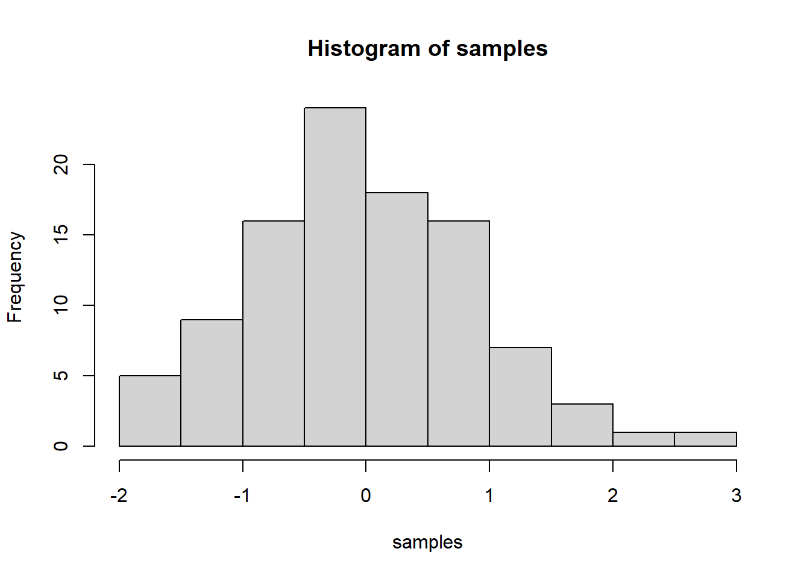
When you knit this R Markdown document, you will see that the histogram is printed to the page, along with the R code. This document can be set up to hide the R code in the webpage, just delete the comment (hashtag), from the cold folding option in the yaml header up top. For purposes of letting yourself see the code, and me see the code, best to keep it the way that it is. You learn all of these things and more can be customized in each R code block.
4 The big idea
Use this lab journal to record what you do in R. This way I will be able to see what you are doing and help you along the way. You will also be creating a repository of all the things you do. You can make posts about everything. Learning specific things in R (project unrelated), and doing things for the project that we will discuss at the beginning of the Fall semester. You can get started now by fiddling around with googling things, and trying stuff out in R. I’ve placed some helpful starting links in the links page on this website
5 What can you do right now by yourself?
It’s hard to learn programming when you don’t have specific problems that you are trying to solve. Everything just seems abstract.
I wrote an introductory programming book that introduces R, and gives some concrete problems for you to solve.
To get the hang of journaling and solving the problems to learn programming, my suggestion is that you use this .Rmd file to solve the problems. It would look like this:
6 Problem 1
Do simple math with numbers, addition, subtraction, multiplication, division
1+2## [1] 32*5## [1] 105/3## [1] 1.666667(1+6+4)/5## [1] 2.27 Problem 2
Put numbers into variables, do simple math on the variables
a<-1
b<-2
a+b## [1] 3d<-c(1,2,3)
e<-c(5,6,7)
d+e## [1] 6 8 10d*e## [1] 5 12 21d/e## [1] 0.2000000 0.3333333 0.42857148 Problem 3
Write code that will place the numbers 1 to 100 separately into a variable using for loop. Then, again using the seq function.
# for loop solution
# i becomes the number 1 to 100 at each step of the loop
a <- length(100) # make empty variable, set length to 100
for (i in 1:100){
a[i] <-i #assigns the number in i, to the ith index of a
}
print(a)## [1] 1 2 3 4 5 6 7 8 9 10 11 12 13 14 15 16 17 18
## [19] 19 20 21 22 23 24 25 26 27 28 29 30 31 32 33 34 35 36
## [37] 37 38 39 40 41 42 43 44 45 46 47 48 49 50 51 52 53 54
## [55] 55 56 57 58 59 60 61 62 63 64 65 66 67 68 69 70 71 72
## [73] 73 74 75 76 77 78 79 80 81 82 83 84 85 86 87 88 89 90
## [91] 91 92 93 94 95 96 97 98 99 100# for loop solution #2
a<-c() #create empty variable using combine command
for (i in 1:100){
a<-c(a,i) # keeps combining a with itself and the new number in i
}
print(a)## [1] 1 2 3 4 5 6 7 8 9 10 11 12 13 14 15 16 17 18
## [19] 19 20 21 22 23 24 25 26 27 28 29 30 31 32 33 34 35 36
## [37] 37 38 39 40 41 42 43 44 45 46 47 48 49 50 51 52 53 54
## [55] 55 56 57 58 59 60 61 62 63 64 65 66 67 68 69 70 71 72
## [73] 73 74 75 76 77 78 79 80 81 82 83 84 85 86 87 88 89 90
## [91] 91 92 93 94 95 96 97 98 99 100# seq solution
a <- seq(1,100,1) # look up help for seq using ?seq() in console
print(a)## [1] 1 2 3 4 5 6 7 8 9 10 11 12 13 14 15 16 17 18
## [19] 19 20 21 22 23 24 25 26 27 28 29 30 31 32 33 34 35 36
## [37] 37 38 39 40 41 42 43 44 45 46 47 48 49 50 51 52 53 54
## [55] 55 56 57 58 59 60 61 62 63 64 65 66 67 68 69 70 71 72
## [73] 73 74 75 76 77 78 79 80 81 82 83 84 85 86 87 88 89 90
## [91] 91 92 93 94 95 96 97 98 99 1009 Problem 4
Find the sum of all the integer numbers from 1 to 100.
# Using sum function sum()
a = 1:100
b = sum(a)
print(b)## [1] 5050# Using a loop
c <- length(100) # make empty variable, set length to 100
for (i in 1:100){
c[i]<-i #assigns the number in i, to the ith index of a
}
sum(c)## [1] 505010 Intro to the tidyverse - Coding Challenge 1A
Analyzed sales by state using the data set from Brazilian Online shopping company.
# SALES BY STATE ANALYSIS ----
# 1.0 Load libraries ----
library(tidyverse)
# 2.0 Importing Files ----
sellers_tbl <- read_csv(file = "Rstudio/DS_business_case_01/00_data/01_e-commerce/01_raw_data/olist_sellers_dataset.csv")
order_items_tbl <- read_csv(file = "Rstudio/DS_business_case_01/00_data/01_e-commerce/01_raw_data/olist_order_items_dataset.csv")
orders_tbl <- read_csv(file = "Rstudio/DS_business_case_01/00_data/01_e-commerce/01_raw_data/olist_orders_dataset.csv")
# 3.0 Examining Data ----
# 4.0 Joining Data ----
sellers_joined_tbl <- order_items_tbl %>%
left_join(orders_tbl) %>%
left_join(sellers_tbl)
# 5.0 Wrangling Data ----
sellers_wrangled_tbl <- sellers_joined_tbl %>%
separate(col = seller.location,
into = c("seller.city", "seller.state"),
sep = ", ",
remove = FALSE) %>%
mutate(total.price = price + freight.value) %>%
dplyr::select(-starts_with("product.")) %>%
dplyr::select(-ends_with(".date")) %>%
rename(order_date = order.purchase.timestamp) %>%
set_names(names(.) %>%
str_replace_all("\\.", "_"))
# 6.0 Business Insights ----
library(lubridate)
# 6.1 Sales by Year and Category 2 ----
# Step 1 - Manipulate
revenue_by_year_and_state_tbl <- sellers_wrangled_tbl %>%
# Select columns and add a year
dplyr::select(order_date, total_price, seller_city, seller_state) %>%
mutate(year = year(order_date)) %>%
# Filter > 1.000.000
group_by(seller_state) %>%
filter(sum(total_price) > 1000000) %>% # If you run the code up here, R will tell you that we have 6 groups
ungroup() %>%
# Group by and summarize year and main catgegory
group_by(year, seller_state) %>%
summarise(revenue = sum(total_price)) %>%
ungroup() %>%
# Format $ Text
mutate(revenue_text = scales::dollar(revenue))
revenue_by_year_and_state_tbl ## # A tibble: 9 x 4
## year seller_state revenue revenue_text
## <int> <chr> <dbl> <chr>
## 1 2016 MG 3142. $3,142
## 2 2016 PR 8009. $8,009
## 3 2016 SP 30853. $30,853
## 4 2017 MG 616135. $616,135
## 5 2017 PR 603438. $603,438
## 6 2017 SP 4579119. $4,579,119
## 7 2018 MG 604882. $604,882
## 8 2018 PR 847454. $847,454
## 9 2018 SP 5625912. $5,625,912# Step 2 - Visualize
revenue_by_year_and_state_tbl %>%
# Set up x, y, fill
ggplot(aes(x = year, y = revenue, fill = seller_state)) +
# Geometries
geom_col() + # Run up to here to get a stacked bar plot
# Facet
facet_wrap(~ seller_state) +
# Formatting
scale_y_continuous(labels = scales::dollar) +
labs(
title = "Revenue by year and state",
subtitle = "SP had the largest portion of revenues",
fill = "State" # Changes the legend name
)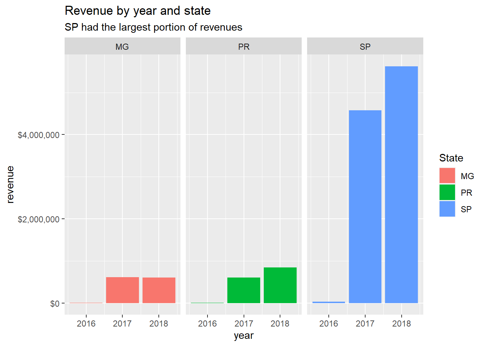
# 7.0 Writing Files ----
library(fs)
fs::dir_create("Rstudio/DS_business_case_01/00_data/01_e-commerce/04_wrangled_data_student")
# 7.1 Excel ----
library("writexl")
write_xlsx( sellers_wrangled_tbl, "Rstudio/DS_business_case_01/00_data/01_e-commerce/04_wrangled_data_student/sellers_table.xlsx")
write_xlsx(revenue_by_year_and_state_tbl, "Rstudio/DS_business_case_01/00_data/01_e-commerce/04_wrangled_data_student/revenue_by_year_and_state.xlsx")
# 7.2 CSV ----
write_csv( sellers_wrangled_tbl, "Rstudio/DS_business_case_01/00_data/01_e-commerce/04_wrangled_data_student/sellers_table.csv")
write_csv( revenue_by_year_and_state_tbl , "Rstudio/DS_business_case_01/00_data/01_e-commerce/04_wrangled_data_student/revenue_by_year_and_state.csv")
# 7.3 RDS ----
write_rds( sellers_wrangled_tbl, "Rstudio/DS_business_case_01/00_data/01_e-commerce/04_wrangled_data_student/sellers_table.rds")
write_rds( revenue_by_year_and_state_tbl , "Rstudio/DS_business_case_01/00_data/01_e-commerce/04_wrangled_data_student/revenue_by_year_and_state.rds")11 Intro to the tidyverse - Coding Challenge 1B
Used the English translation of the categories and intergrated it back into the example code that was provided.
# SALES ANALYSIS WITH ENGLISH TRANSLATION ----
# 1.0 Load libraries ----
library(tidyverse)
library(readxl)
library(dplyr)
# 2.0 Importing Files ----
# A good convention is to use the csv file name and suffix it with tbl for the data structure tibble
order_items_tbl <- read_csv(file = "Rstudio/DS_business_case_01/00_data/01_e-commerce/01_raw_data/olist_order_items_dataset.csv")
products_tbl <- read_csv(file = "Rstudio/DS_business_case_01/00_data/01_e-commerce/01_raw_data/olist_products_dataset.csv")
orders_tbl <- read_csv(file = "Rstudio/DS_business_case_01/00_data/01_e-commerce/01_raw_data/olist_orders_dataset.csv")
product_cat_name_english <- read_excel("Rstudio/DS_business_case_01/00_data/01_e-commerce/01_raw_data/product_category_name_translation.xlsx")
# 3.0 Fixing name on new table ----
prod_cat_name_eng_corrected <- product_cat_name_english %>%
set_names(names(.) %>%
str_replace_all("_", "\\."))
prod_cat_name_eng_corrected## # A tibble: 71 x 2
## product.category.name product.category.name.english
## <chr> <chr>
## 1 agro_industria_e_comercio agro_industry_and_commerce
## 2 alimentos food
## 3 alimentos - bebidas food - drink
## 4 artes art
## 5 artes_e_artesanato arts_and_craftmanship
## 6 artigos - de_festas supplies - party
## 7 artigos - de_natal supplies - christmas
## 8 audio audio
## 9 automotivo auto
## 10 bebes baby
## # ... with 61 more rows# 4.0 Joining Data ----
order_items_joined_tbl <- order_items_tbl %>%
left_join(orders_tbl) %>%
left_join(products_tbl)%>%
left_join(prod_cat_name_eng_corrected)
# 5.0 Wrangling Data ----
order_items_wrangled_tbl <- order_items_joined_tbl %>%
separate(col = product.category.name.english,
into = c("main.category.name", "sub.category.name"),
sep = " - ",
remove = FALSE) %>%
mutate(total.price = price + freight.value) %>%
dplyr::select(-starts_with("product.")) %>%
dplyr::select(-ends_with(".date")) %>%
bind_cols(order_items_joined_tbl %>% dplyr::select(product.id)) %>%
dplyr::select(contains("timestamp"), contains(".id"),
main.category.name, sub.category.name, price, freight.value, total.price,
everything()) %>%
rename(order_date = order.purchase.timestamp) %>%
set_names(names(.) %>%
str_replace_all("\\.", "_"))
# 6.0 Business Insights ----
# 6.1 Sales by Year ----
library(lubridate)
# Step 1 - Manipulate
# Create a table revenue_by_year_tbl
revenue_by_year_tbl <- order_items_wrangled_tbl %>%
# Select Columns
dplyr::select(order_date, total_price) %>%
# add column with year by using mutate and extracting the year from order date
mutate(year =year(order_date)) %>%
# Grouping by year and summarizing sales
group_by(year) %>%
summarize(revenue = sum(total_price)) %>%
# Optional: Add a column that turns the numbers into a currency format (makes it in the plot optically more appealing)
mutate(revenue_text = scales::dollar(revenue, prefix = "$"))
revenue_by_year_tbl## # A tibble: 3 x 3
## year revenue revenue_text
## <int> <dbl> <chr>
## 1 2016 57183. $57,183
## 2 2017 7142672. $7,142,672
## 3 2018 8643698. $8,643,698# Step 2 - Visualize
revenue_by_year_tbl %>%
# Setup canvas with the columns year (x-axis) and revenue (y-axis)
ggplot(aes(x = year, y = revenue)) +
# Geometries
geom_col(fill = "#2DC6D6") + # Use geom_col for a bar plot
geom_label(aes(label = revenue_text)) + # Adding labels to the bars
geom_smooth(method = "lm", se = FALSE) + # Adding a trendline
# Formatting
scale_y_continuous(labels = scales::dollar) + # Change the y-axis
labs(
title = "Revenue by year",
subtitle = "Upward Trend",
x = "", # Override defaults for x and y
y = "Revenue"
)
# 6.2 Sales by Year and Category 2 ----
# Step 1 - Manipulate
revenue_by_year_cat_main_tbl <- order_items_wrangled_tbl %>%
# Select columns and add a year
dplyr::select(order_date, total_price, main_category_name) %>%
mutate(year = year(order_date)) %>%
# Filter > 1.000.000
group_by(main_category_name) %>%
filter(sum(total_price) > 1000000) %>% # If you run the code up here, R will tell you that we have 6 groups
ungroup() %>%
# Group by and summarize year and main catgegory
group_by(year, main_category_name) %>%
summarise(revenue = sum(total_price)) %>%
ungroup() %>%
# Format $ Text
mutate(revenue_text = scales::dollar(revenue))
revenue_by_year_cat_main_tbl ## # A tibble: 18 x 4
## year main_category_name revenue revenue_text
## <int> <chr> <dbl> <chr>
## 1 2016 bed_bath_table 607. $607
## 2 2016 computers_accessories 1740. $1,740
## 3 2016 furniture 8776. $8,776
## 4 2016 health_beauty 5637. $5,637
## 5 2016 sports_leisure 3927. $3,927
## 6 2016 watches_gifts 3468. $3,468
## 7 2017 bed_bath_table 590280. $590,280
## 8 2017 computers_accessories 462761. $462,761
## 9 2017 furniture 659522. $659,522
## 10 2017 health_beauty 550420. $550,420
## 11 2017 sports_leisure 530730. $530,730
## 12 2017 watches_gifts 530087. $530,087
## 13 2018 bed_bath_table 650795. $650,795
## 14 2018 computers_accessories 594771. $594,771
## 15 2018 furniture 752618. $752,618
## 16 2018 health_beauty 885191. $885,191
## 17 2018 sports_leisure 621999. $621,999
## 18 2018 watches_gifts 771987. $771,987# Step 2 - Visualize
revenue_by_year_cat_main_tbl %>%
# Set up x, y, fill
ggplot(aes(x = year, y = revenue, fill = main_category_name)) +
# Geometries
geom_col() + # Run up to here to get a stacked bar plot
# Facet
facet_wrap(~ main_category_name) +
# Formatting
scale_y_continuous(labels = scales::dollar) +
labs(
title = "Revenue by year and main category",
subtitle = "Each product category has an upward trend",
fill = "Main category" # Changes the legend name
)
# 7.0 Writing Files ----
# If you want to interact with the filesystem use the fs package
library(fs)
fs::dir_create("Rstudio/DS_business_case_01/00_data/01_e-commerce/04_wrangled_data_student")
# 7.1 Excel ----
library("writexl")
write_xlsx( order_items_wrangled_tbl, "Rstudio/DS_business_case_01/00_data/01_e-commerce/04_wrangled_data_student/order_items_english.xlsx")
# 7.2 CSV ----
write_csv( order_items_wrangled_tbl, "Rstudio/DS_business_case_01/00_data/01_e-commerce/04_wrangled_data_student/order_items_english.csv")
# 7.3 RDS ----
write_rds( order_items_wrangled_tbl, "Rstudio/DS_business_case_01/00_data/01_e-commerce/04_wrangled_data_student/order_items_english.rds")12 Data Aquisition - Challenge 1 - Gather Data From a API
In this example we will gather a random cocktail from the cocktail DB and present information about it and how to make it.
library(httr)
library(jsonlite)
library(tidyverse)
library(dplyr)
#Script to pull a random cocktail from the cocktail db.
resp <- GET("https://www.thecocktaildb.com/api/json/v1/1/random.php")
resp## Response [https://www.thecocktaildb.com/api/json/v1/1/random.php]
## Date: 2020-11-28 19:13
## Status: 200
## Content-Type: application/json
## Size: 1.58 kBrandom_drink = fromJSON(rawToChar(resp$content))
pullout_data <- random_drink[[1]]
#Code to reduce number of columns and also filter out NA columns
your_random_drink <- as_tibble(pullout_data) %>%
dplyr::select(strDrink ,strAlcoholic, strInstructions,strGlass,
strIngredient1:strIngredient7, strMeasure1:strMeasure7) %>% select_if(~sum(!is.na(.)) > 0)
print(your_random_drink)## # A tibble: 1 x 13
## strDrink strAlcoholic strInstructions strGlass strIngredient1 strIngredient2
## <chr> <chr> <chr> <chr> <chr> <chr>
## 1 Port Wi~ Alcoholic Shake all ingr~ Whiskey~ Port Light cream
## # ... with 7 more variables: strIngredient3 <chr>, strIngredient4 <chr>,
## # strIngredient5 <chr>, strMeasure1 <chr>, strMeasure2 <chr>,
## # strMeasure3 <chr>, strMeasure4 <chr>print("Enjoy!!")## [1] "Enjoy!!"13 Data Aquisition - Challenge 2 - Scrape Data from ecommerce site
In this example we will scrape data from a amazon search result about gaming pc’s.
library(tidyverse) # Main Package - Loads dplyr, purrr
library(rvest) # HTML Hacking & Web Scraping
library(xopen) # Quickly opening URLs
library(jsonlite) # converts JSON files to R objects
library(glue) # concatenate strings
library(stringi) # character string/text processing
library(httr)
url_home <- "https://www.amazon.de/s?k=gaming+pc&rh=n%3A427954031&ref=nb_sb_noss"
# Read in the HTML for the entire webpage
html_home <- read_html(url_home)
# Web scrape the ids for the families
Name_items <- html_home %>%
html_nodes(css = ".a-size-medium") %>%
html_text()
Item_price <- html_home %>%
html_nodes(css = ".a-price-whole") %>%
html_text()
GamingName_pc_tbl <- tibble(Name_items) %>% slice(1:18)
GamingPrice_pc_tbl <- tibble(Item_price)
Final_table <- tibble(GamingName_pc_tbl,GamingPrice_pc_tbl)14 Data Wrangling (no code saved here as it really takes to long to run on my computer, please reach out if you want to see my code and I will send it to you)
Download and play with the patents data base to answer the following Questions:
Patent Dominance: What US company has the most patents? List the 10 US companies with the most aaigned/granted patents. Recent patent acitivity: What US company had the most patents granted in 2019? List the top 10 companies with the most new granted patents for 2019. Innovation in Tech: What is the most innovative tech sector? For the top 10 companies with the most patents, what are the top 5 USPTO tech main classes?
15 Data Visualization
Create at least 2 plots.
For the first one use the olist data and create a violin plot that shows the price distribution for whatever categories you choose.
Take the covid data from the last session and map the death / cases over the time. Show the trend for the entire world as well as for Germany and the USA (line plot).
Optional: Create a worldmap and color the countries according to the fatality (total deaths per capita). If it is easier for you, you can do it also just for the states of the USA or any other state (you need to get a different dataset though).
#part 1
# SALES ANALYSIS WITH ENGLISH TRANSLATION ----
# 1.0 Load libraries ----
library(tidyverse)
library(readxl)
library(purrr)
library(magrittr)
library(base)
library(dplyr)
# 2.0 Importing Files ----
# A good convention is to use the csv file name and suffix it with tbl for the data structure tibble
order_items_tbl <- read_csv(file = "Rstudio/DS_business_case_01/00_data/01_e-commerce/01_raw_data/olist_order_items_dataset.csv") ##
## -- Column specification --------------------------------------------------------
## cols(
## order.id = col_character(),
## order.item.id = col_double(),
## product.id = col_character(),
## seller.id = col_character(),
## shipping.limit.date = col_datetime(format = ""),
## price = col_double(),
## freight.value = col_double()
## )products_tbl <- read_csv(file = "Rstudio/DS_business_case_01/00_data/01_e-commerce/01_raw_data/olist_products_dataset.csv")##
## -- Column specification --------------------------------------------------------
## cols(
## product.id = col_character(),
## product.category.name = col_character(),
## product.name.lenght = col_double(),
## product.description.lenght = col_double(),
## product.photos.qty = col_double(),
## product.weight.g = col_double(),
## product.length.cm = col_double(),
## product.height.cm = col_double(),
## product.width.cm = col_double()
## )orders_tbl <- read_csv(file = "Rstudio/DS_business_case_01/00_data/01_e-commerce/01_raw_data/olist_orders_dataset.csv")##
## -- Column specification --------------------------------------------------------
## cols(
## order.id = col_character(),
## customer.id = col_character(),
## order.status = col_character(),
## order.purchase.timestamp = col_datetime(format = ""),
## order.approved.at = col_datetime(format = ""),
## order.delivered.carrier.date = col_datetime(format = ""),
## order.delivered.customer.date = col_datetime(format = ""),
## order.estimated.delivery.date = col_datetime(format = "")
## )product_cat_name_english <- read_excel("Rstudio/DS_business_case_01/00_data/01_e-commerce/01_raw_data/product_category_name_translation.xlsx")
# 3.0 Fixing name on new table ----
prod_cat_name_eng_corrected <- product_cat_name_english %>%
set_names(names(.) %>%
str_replace_all("_", "\\."))
prod_cat_name_eng_corrected## # A tibble: 71 x 2
## product.category.name product.category.name.english
## <chr> <chr>
## 1 agro_industria_e_comercio agro_industry_and_commerce
## 2 alimentos food
## 3 alimentos - bebidas food - drink
## 4 artes art
## 5 artes_e_artesanato arts_and_craftmanship
## 6 artigos - de_festas supplies - party
## 7 artigos - de_natal supplies - christmas
## 8 audio audio
## 9 automotivo auto
## 10 bebes baby
## # ... with 61 more rows# 4.0 Joining Data ----
order_items_joined_tbl <- order_items_tbl %>%
left_join(orders_tbl) %>%
left_join(products_tbl)%>%
left_join(prod_cat_name_eng_corrected)## Joining, by = "order.id"## Joining, by = "product.id"## Joining, by = "product.category.name"# 5.0 Wrangling Data ----
order_items_wrangled_tbl <- order_items_joined_tbl %>%
separate(col = product.category.name.english,
into = c("main.category.name", "sub.category.name"),
sep = " - ",
remove = FALSE) %>%
mutate(total.price = price + freight.value) %>%
dplyr::select(-starts_with("product.")) %>%
dplyr::select(-ends_with(".date")) %>%
bind_cols(order_items_joined_tbl %>% dplyr::select(product.id)) %>%
dplyr::select(contains("timestamp"), contains(".id"),
main.category.name, sub.category.name, price, freight.value, total.price,
everything()) %>%
rename(order_date = order.purchase.timestamp) %>%
set_names(names(.) %>%
str_replace_all("\\.", "_"))## Warning: Expected 2 pieces. Missing pieces filled with `NA` in 88045 rows [1, 2,
## 4, 5, 6, 8, 9, 11, 13, 14, 15, 16, 17, 18, 19, 20, 21, 25, 26, 27, ...].# 6.0 Business Insights ----
# 6.1 Sales by Year ----
library(lubridate)
# Step 1 - Manipulate
# Create a table revenue_by_year_tbl
revenue_by_year_tbl <- order_items_wrangled_tbl %>%
# Select Columns
dplyr::select(order_date, total_price) %>%
# add column with year by using mutate and extracting the year from order date
mutate(year =year(order_date)) %>%
# Grouping by year and summarizing sales
group_by(year) %>%
summarize(revenue = sum(total_price)) %>%
# Optional: Add a column that turns the numbers into a currency format (makes it in the plot optically more appealing)
mutate(revenue_text = scales::dollar(revenue, prefix = "$"))## `summarise()` ungrouping output (override with `.groups` argument)revenue_by_year_tbl## # A tibble: 3 x 3
## year revenue revenue_text
## <int> <dbl> <chr>
## 1 2016 57183. $57,183
## 2 2017 7142672. $7,142,672
## 3 2018 8643698. $8,643,698# Step 2 - Visualize
revenue_by_year_tbl %>%
# Setup canvas with the columns year (x-axis) and revenue (y-axis)
ggplot(aes(x = year, y = revenue)) +
# Geometries
geom_col(fill = "#2DC6D6") + # Use geom_col for a bar plot
geom_label(aes(label = revenue_text)) + # Adding labels to the bars
geom_smooth(method = "lm", se = FALSE) + # Adding a trendline
# Formatting
scale_y_continuous(labels = scales::dollar) + # Change the y-axis
labs(
title = "Revenue by year",
subtitle = "Upward Trend",
x = "", # Override defaults for x and y
y = "Revenue"
)## `geom_smooth()` using formula 'y ~ x'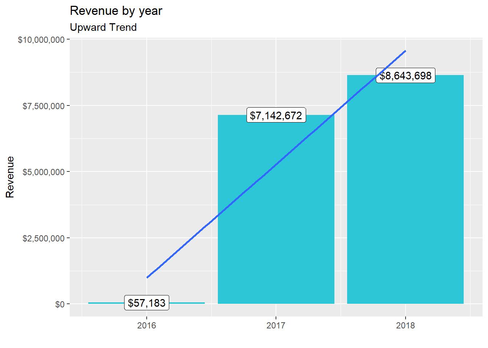
# 6.2 Sales by Year and Category 2 ----
# Step 1 - Manipulate
revenue_by_year_cat_main_tbl <- order_items_wrangled_tbl %>%
# Select columns and add a year
dplyr::select(order_date, total_price, main_category_name) %>%
mutate(year = year(order_date)) %>%
# Filter > 1.000.000
group_by(main_category_name) %>%
filter(sum(total_price) > 1000000) %>% # If you run the code up here, R will tell you that we have 6 groups
ungroup() %>%
# Group by and summarize year and main catgegory
group_by(year, main_category_name) %>%
summarise(revenue = sum(total_price)) %>%
ungroup() %>%
# Format $ Text
mutate(revenue_text = scales::dollar(revenue))## `summarise()` regrouping output by 'year' (override with `.groups` argument)revenue_by_year_cat_main_tbl ## # A tibble: 18 x 4
## year main_category_name revenue revenue_text
## <int> <chr> <dbl> <chr>
## 1 2016 bed_bath_table 607. $607
## 2 2016 computers_accessories 1740. $1,740
## 3 2016 furniture 8776. $8,776
## 4 2016 health_beauty 5637. $5,637
## 5 2016 sports_leisure 3927. $3,927
## 6 2016 watches_gifts 3468. $3,468
## 7 2017 bed_bath_table 590280. $590,280
## 8 2017 computers_accessories 462761. $462,761
## 9 2017 furniture 659522. $659,522
## 10 2017 health_beauty 550420. $550,420
## 11 2017 sports_leisure 530730. $530,730
## 12 2017 watches_gifts 530087. $530,087
## 13 2018 bed_bath_table 650795. $650,795
## 14 2018 computers_accessories 594771. $594,771
## 15 2018 furniture 752618. $752,618
## 16 2018 health_beauty 885191. $885,191
## 17 2018 sports_leisure 621999. $621,999
## 18 2018 watches_gifts 771987. $771,987# Step 2 - Visualize
revenue_by_year_cat_main_tbl %>%
# Set up x, y, fill
ggplot(aes(x = year, y = revenue, fill = main_category_name)) +
# Geometries
geom_col() + # Run up to here to get a stacked bar plot
# Facet
facet_wrap(~ main_category_name) +
# Formatting
scale_y_continuous(labels = scales::dollar) +
labs(
title = "Revenue by year and main category",
subtitle = "Each product category has an upward trend",
fill = "Main category" # Changes the legend name
)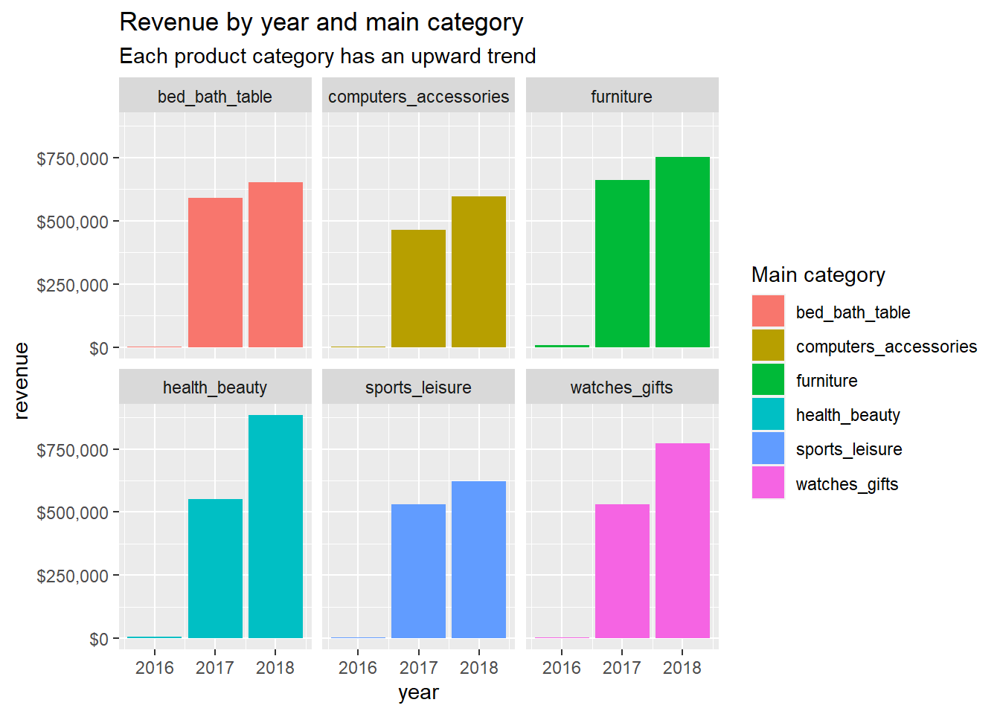
# 6.3 Violin chart of price by category
# Step 1 - Manipulate
price_by_year_cat_main_tbl <- order_items_wrangled_tbl %>%
# Select columns and add a year
dplyr::select(order_date, total_price, main_category_name) %>%
mutate(year = year(order_date)) %>%
# Filter (choose a category)
group_by(main_category_name) %>%
filter(main_category_name %in% c("health_beauty","sports_leisure","bed_bath_table","furniture")) %>% # If you run the code up here, R will tell you that we have 6 groups
ungroup()
# Step 2 - Visualize
price_by_year_cat_main_tbl %>%
# Set up x, y, fill
ggplot(aes(x = main_category_name , y = total_price)) +
# Geometries
geom_violin(draw_quantiles = c(0.25,0.5,0.75)) + # Run up to here to get a stacked bar plot
# limits
ylim(0,4000) +
# Formatting
labs(
title = "Price by Category (no limit on Y axis)",
subtitle = "Violin showing variability in price",
fill = "Main category" # Changes the legend name
)## Warning: Removed 1 rows containing non-finite values (stat_ydensity).## Warning in regularize.values(x, y, ties, missing(ties), na.rm = na.rm):
## collapsing to unique 'x' values
## Warning in regularize.values(x, y, ties, missing(ties), na.rm = na.rm):
## collapsing to unique 'x' values
## Warning in regularize.values(x, y, ties, missing(ties), na.rm = na.rm):
## collapsing to unique 'x' values
## Warning in regularize.values(x, y, ties, missing(ties), na.rm = na.rm):
## collapsing to unique 'x' values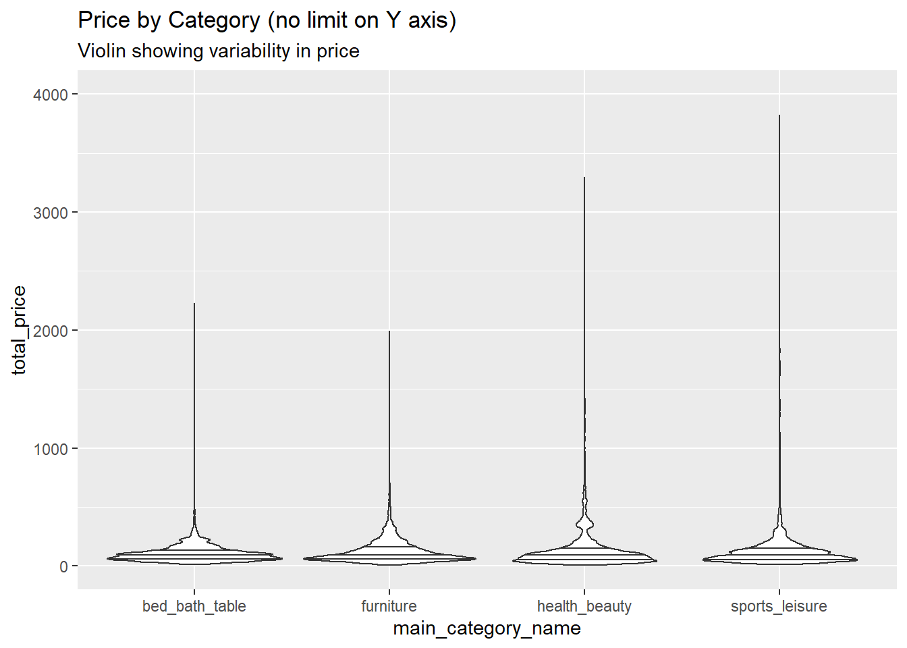
# Step 2 - Visualize
price_by_year_cat_main_tbl %>%
# Set up x, y, fill
ggplot(aes(x = main_category_name , y = total_price)) +
# Geometries
geom_violin(draw_quantiles = c(0.25,0.5,0.75)) + # Run up to here to get a stacked bar plot
# limits
ylim(0,2000) +
# Formatting
labs(
title = "Price by Category (Y limited to $2000)",
subtitle = "Violin showing variability in price",
fill = "Main category" # Changes the legend name
)## Warning: Removed 16 rows containing non-finite values (stat_ydensity).
## Warning: collapsing to unique 'x' values
## Warning: collapsing to unique 'x' values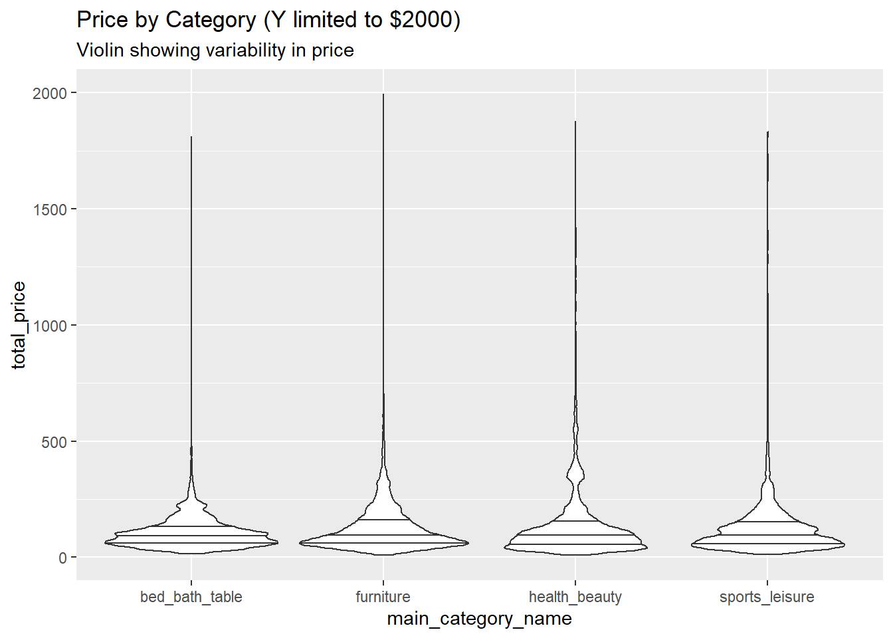
# Step 2 - Visualize
price_by_year_cat_main_tbl %>%
# Set up x, y, fill
ggplot(aes(x = main_category_name , y = total_price)) +
# Geometries
geom_violin(draw_quantiles = c(0.25,0.5,0.75)) + # Run up to here to get a stacked bar plot
# limits
ylim(0,500) +
# Formatting
labs(
title = "Price by Category (y axis limited to $500)",
subtitle = "Violin showing variability in price",
fill = "Main category" # Changes the legend name
)## Warning: Removed 773 rows containing non-finite values (stat_ydensity).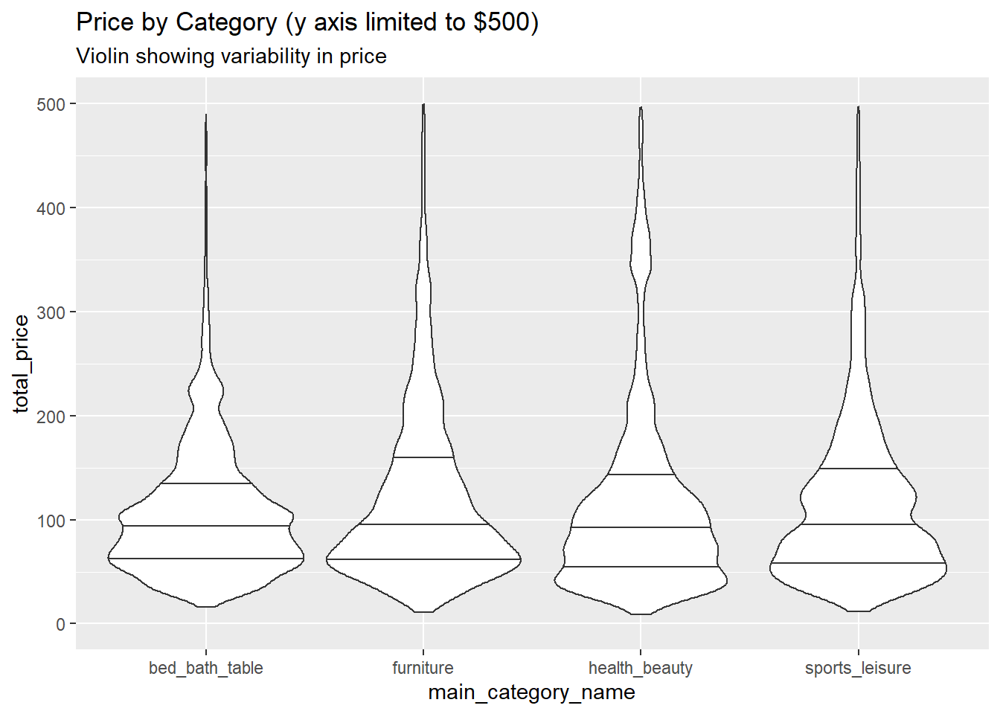
#part 2
# TASK Take the covid data from the last session and map the death /
# cases over the time. Show the trend for the entire world as well as for Germany and the USA
#LINE PLOT
library(Quandl)
library(lubridate)
library(tidyverse)
library(readxl)
library(dplyr)
library(data.table)
url <- "https://opendata.ecdc.europa.eu/covid19/casedistribution/csv"
covid_data_dt <- fread(url)
class(covid_data_dt)## [1] "data.table" "data.frame"# Create a table with data we need
#First graph is for Cumulative Cases
Relevant_data_needed<- covid_data_dt %>%
# Select Columns
dplyr::select(dateRep, countriesAndTerritories, deaths, cases, popData2019) %>%
group_by(countriesAndTerritories)%>%
mutate(dateRep = as.Date(dateRep, "%d/%m/%Y")) %>%
arrange(dateRep) %>%
# Filter (choose a country/countries)
group_by(countriesAndTerritories) %>%
filter(countriesAndTerritories %in% c("Germany","United_States_of_America")) %>%
ungroup() %>%
group_by(countriesAndTerritories) %>% mutate(cumCases = cumsum(cases))
frmLast <- Relevant_data_needed %>%
slice(which.max(dateRep))
frmFirst <- Relevant_data_needed %>%
slice(which.min(dateRep))
# Step 2 - Visualize Cases
Relevant_data_needed %>%
# Set up x, y, fill
ggplot(aes(x = dateRep, y = cumCases, group = countriesAndTerritories)) +
# Geometries
geom_line(aes(color=countriesAndTerritories)) +
scale_y_continuous(trans = 'log10') +
annotation_logticks(sides="lr") +
scale_x_date(date_minor_breaks = "30 day")+
geom_text(data = frmLast, aes(x = dateRep, y = cumCases, label = cumCases),size = 4, vjust = 2.5, hjust= 1)+
geom_point(data = frmLast, aes(x = dateRep, y = cumCases), col = "Black", shape = 20, fill = "white", size = 2, stroke = 1.7)+
labs( title = "COVID Cumulative Cases Germany Vs. USA")## Warning: Transformation introduced infinite values in continuous y-axis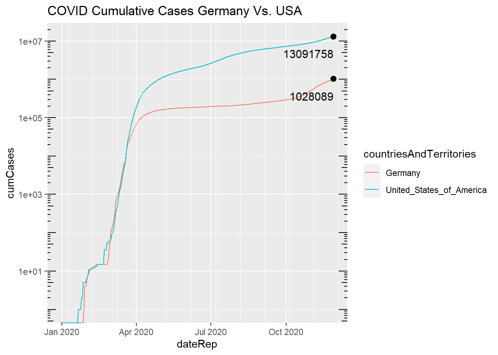
# Create a table with data we need
#Second graph is for Cumulative deaths
# Relevant_data_needed<- covid_data_dt %>%
#
# # Select Columns
# select(dateRep, countriesAndTerritories, deaths, cases, popData2019) %>%
# group_by(countriesAndTerritories)%>%
# mutate(dateRep = as.Date(dateRep, "%d/%m/%Y")) %>%
#
#
# arrange(dateRep) %>%
#
# # Filter (choose a country/countries)
# group_by(countriesAndTerritories) %>%
# filter(countriesAndTerritories %in% c("Germany","United_States_of_America")) %>%
# ungroup() %>%
Deaths_Relevant_data_needed<- Relevant_data_needed %>%
group_by(countriesAndTerritories) %>%
mutate(cumDeaths = cumsum(deaths))
frmLast <- Deaths_Relevant_data_needed %>% #last data date
slice(which.max(dateRep))
frmFirst <- Deaths_Relevant_data_needed %>% #first data date
slice(which.min(dateRep))
# Step 2 - Visualize Cases
Deaths_Relevant_data_needed %>%
# Set up x, y, fill
ggplot(aes(x = dateRep, y = cumDeaths, group = countriesAndTerritories)) +
# Geometries
geom_line(aes(color=countriesAndTerritories)) +
scale_y_continuous(trans = 'log10') +
annotation_logticks(sides="lr") +
scale_x_date(date_minor_breaks = "15 day")+
geom_text(data = frmLast, aes(x = dateRep, y = cumDeaths, label = cumDeaths),size = 4, vjust = 2.5, hjust= 1)+
geom_point(data = frmLast, aes(x = dateRep, y = cumDeaths), col = "Black", shape = 20, fill = "white", size = 2, stroke = 1.7)+
labs( title = "COVID Cumulative Deaths Germany Vs. USA")## Warning: Transformation introduced infinite values in continuous y-axis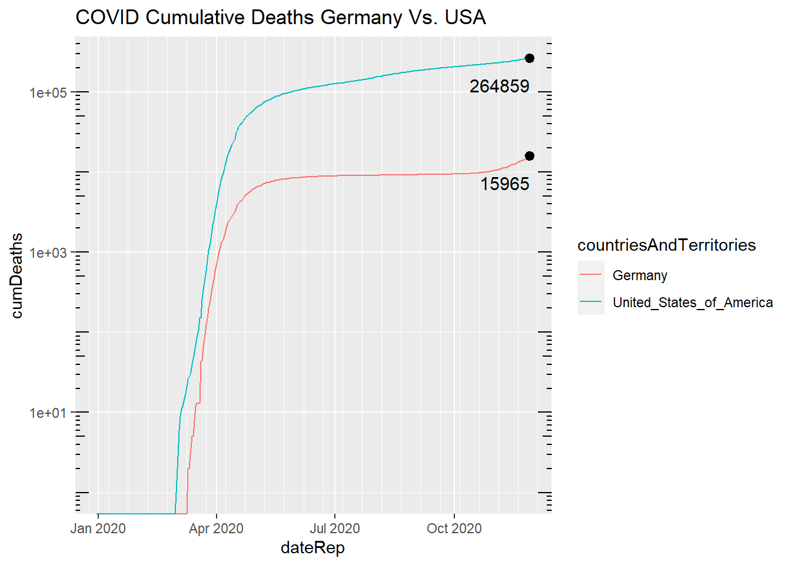
#part 3
library("ggplot2")
theme_set(theme_bw())
library("sf")
library("rnaturalearth")
library("rnaturalearthdata")
library("colorspace")
library("scales")
# TASK Take the covid data from the last session and map the death /
# cases over the time. Show the trend for the entire world as well as for Germany and the USA
#LINE PLOT
library(Quandl)
library(lubridate)
library(tidyverse)
library(readxl)
library(dplyr)
library(data.table)
url <- "https://opendata.ecdc.europa.eu/covid19/casedistribution/csv"
covid_data_dt <- fread(url)
class(covid_data_dt)## [1] "data.table" "data.frame"# Create a table with data we need
#First graph is for Cumulative Cases
covid_data_dt[, `:=`(deaths_per_capita = deaths / popData2019,
cases_per_capita = cases / popData2019,
cases_per_deaths = cases / deaths)]
covid_data_dt[, cum_deaths := cumsum(deaths)]
covid_data_dt[, deaths_per_capita := (cum_deaths / popData2019)]
Relevant_data_needed<- covid_data_dt %>%
# Select Columns
dplyr::select(dateRep, countriesAndTerritories, deaths_per_capita, countryterritoryCode) %>%
group_by(countriesAndTerritories)%>%
mutate(dateRep = as.Date(dateRep, "%d/%m/%Y")) %>%
arrange(dateRep)
Last_Data_date <- Relevant_data_needed %>%
slice(which.max(dateRep))
Last_Data_date <- rename(Last_Data_date, adm0_a3 = countryterritoryCode )
world <- ne_countries(scale = "medium", returnclass = "sf")
World_updated <- merge(x = Last_Data_date, y = world,
by = "adm0_a3",
all.x = TRUE,
all.y = FALSE)
#
# World_updated <- filter(World_updated, (cum_deaths_per_capita < 1) )
ggplot(data = World_updated) +
geom_sf(aes(fill = deaths_per_capita, geometry = geometry)) +
scale_fill_viridis_c(name = "Total Deaths Per Capita",
option = "plasma",
trans = "log",
labels = comma)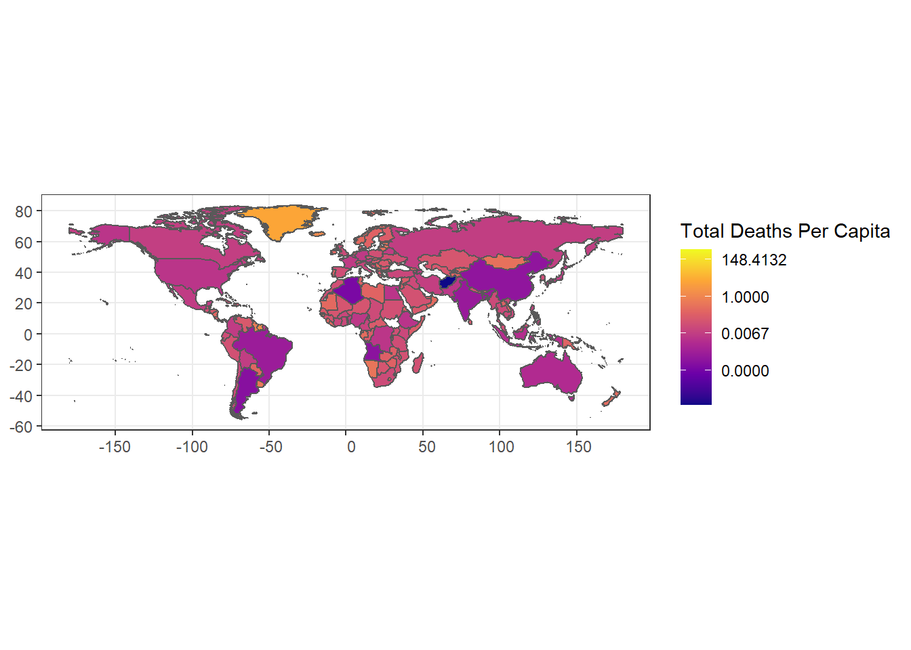
16 Machine Learning Fundementals
Company Segmentation with Stock Prices
Download the following .zip file. It contains a .Rmd file with all instructions and intermediate results in the case you might get stuck. You can knit the .Rmd file to a pdf file by clicking the knit button.
library(tidyverse)
library(tidyquant)
library(broom)
library(umap)
library(readr)
library(purrr)# STOCK PRICES
sp_500_prices_tbl <- read_rds("Rstudio/00_scripts/session_6_data/session_6_data/sp_500_prices_tbl.rds")
sp_500_prices_tbl## # A tibble: 1,225,765 x 8
## symbol date open high low close volume adjusted
## <chr> <date> <dbl> <dbl> <dbl> <dbl> <dbl> <dbl>
## 1 MSFT 2009-01-02 19.5 20.4 19.4 20.3 50084000 15.9
## 2 MSFT 2009-01-05 20.2 20.7 20.1 20.5 61475200 16.0
## 3 MSFT 2009-01-06 20.8 21 20.6 20.8 58083400 16.2
## 4 MSFT 2009-01-07 20.2 20.3 19.5 19.5 72709900 15.2
## 5 MSFT 2009-01-08 19.6 20.2 19.5 20.1 70255400 15.7
## 6 MSFT 2009-01-09 20.2 20.3 19.4 19.5 49815300 15.2
## 7 MSFT 2009-01-12 19.7 19.8 19.3 19.5 52163500 15.2
## 8 MSFT 2009-01-13 19.5 20.0 19.5 19.8 65843500 15.5
## 9 MSFT 2009-01-14 19.5 19.7 19.0 19.1 80257500 14.9
## 10 MSFT 2009-01-15 19.1 19.3 18.5 19.2 96169800 15.0
## # ... with 1,225,755 more rows# SECTOR INFORMATION
sp_500_index_tbl <- read_rds("Rstudio/00_scripts/session_6_data/session_6_data/sp_500_index_tbl.rds")
sp_500_index_tbl## symbol company weight
## 1 MSFT Microsoft Corporation 3.589659e-02
## 2 AAPL Apple Inc. 3.299844e-02
## 3 AMZN Amazon.com Inc. 2.834845e-02
## 4 BRK.B Berkshire Hathaway Inc. Class B 1.714493e-02
## 5 FB Facebook Inc. Class A 1.676060e-02
## 6 JNJ Johnson & Johnson 1.570168e-02
## 7 JPM JPMorgan Chase & Co. 1.507235e-02
## 8 GOOG Alphabet Inc. Class C 1.470747e-02
## 9 GOOGL Alphabet Inc. Class A 1.436854e-02
## 10 XOM Exxon Mobil Corporation 1.412361e-02
## 11 BAC Bank of America Corp 1.141184e-02
## 12 UNH UnitedHealth Group Incorporated 1.119696e-02
## 13 V Visa Inc. Class A 1.093462e-02
## 14 PG Procter & Gamble Company 1.053192e-02
## 15 PFE Pfizer Inc. 1.052585e-02
## 16 INTC Intel Corporation 1.012464e-02
## 17 CVX Chevron Corporation 9.790428e-03
## 18 VZ Verizon Communications Inc. 9.784105e-03
## 19 CSCO Cisco Systems Inc. 9.544976e-03
## 20 T AT&T Inc. 9.518933e-03
## 21 BA Boeing Company 9.479343e-03
## 22 HD Home Depot Inc. 9.332370e-03
## 23 WFC Wells Fargo & Company 8.957703e-03
## 24 MRK Merck & Co. Inc. 8.915412e-03
## 25 MA Mastercard Incorporated Class A 8.635942e-03
## 26 KO Coca-Cola Company 7.439485e-03
## 27 CMCSA Comcast Corporation Class A 7.368779e-03
## 28 DIS Walt Disney Company 7.194712e-03
## 29 PEP PepsiCo Inc. 7.023937e-03
## 30 C Citigroup Inc. 6.744127e-03
## 31 NFLX Netflix Inc. 6.680205e-03
## 32 WMT Walmart Inc. 6.127690e-03
## 33 MCD McDonald's Corporation 5.961227e-03
## 34 ABT Abbott Laboratories 5.673213e-03
## 35 ORCL Oracle Corporation 5.649621e-03
## 36 PM Philip Morris International Inc. 5.569381e-03
## 37 ADBE Adobe Inc. 5.423148e-03
## 38 IBM International Business Machines Corporation 5.378546e-03
## 39 UNP Union Pacific Corporation 5.373873e-03
## 40 DWDP DowDuPont Inc. 5.343558e-03
## 41 MDT Medtronic plc 5.320276e-03
## 42 ABBV AbbVie Inc. 5.227510e-03
## 43 MMM 3M Company 5.225519e-03
## 44 CRM salesforce.com inc. 5.221497e-03
## 45 AMGN Amgen Inc. 5.154364e-03
## 46 AVGO Broadcom Inc. 5.010262e-03
## 47 LLY Eli Lilly and Company 4.959256e-03
## 48 HON Honeywell International Inc. 4.860377e-03
## 49 PYPL PayPal Holdings Inc 4.796215e-03
## 50 NKE NIKE Inc. Class B 4.662578e-03
## 51 UTX United Technologies Corporation 4.450672e-03
## 52 TXN Texas Instruments Incorporated 4.437206e-03
## 53 TMO Thermo Fisher Scientific Inc. 4.363659e-03
## 54 ACN Accenture Plc Class A 4.355615e-03
## 55 NVDA NVIDIA Corporation 4.119677e-03
## 56 COST Costco Wholesale Corporation 4.072393e-03
## 57 LIN Linde plc 3.986931e-03
## 58 MO Altria Group Inc 3.917806e-03
## 59 CVS CVS Health Corporation 3.853464e-03
## 60 BKNG Booking Holdings Inc. 3.844550e-03
## 61 NEE NextEra Energy Inc. 3.774455e-03
## 62 GE General Electric Company 3.767361e-03
## 63 SBUX Starbucks Corporation 3.765740e-03
## 64 GILD Gilead Sciences Inc. 3.740188e-03
## 65 BMY Bristol-Myers Squibb Company 3.620328e-03
## 66 LOW Lowe's Companies Inc. 3.611353e-03
## 67 COP ConocoPhillips 3.482849e-03
## 68 ANTM Anthem Inc. 3.459557e-03
## 69 CAT Caterpillar Inc. 3.452684e-03
## 70 AMT American Tower Corporation 3.362129e-03
## 71 USB U.S. Bancorp 3.355776e-03
## 72 UPS United Parcel Service Inc. Class B 3.308592e-03
## 73 LMT Lockheed Martin Corporation 3.248902e-03
## 74 AXP American Express Company 3.238637e-03
## 75 CI Cigna Corporation 3.172444e-03
## 76 MDLZ Mondelez International Inc. Class A 3.018507e-03
## 77 GS Goldman Sachs Group Inc. 2.949052e-03
## 78 DHR Danaher Corporation 2.945331e-03
## 79 BIIB Biogen Inc. 2.878567e-03
## 80 BDX Becton Dickinson and Company 2.859908e-03
## 81 ADP Automatic Data Processing Inc. 2.800078e-03
## 82 CELG Celgene Corporation 2.724370e-03
## 83 QCOM QUALCOMM Incorporated 2.704791e-03
## 84 CME CME Group Inc. Class A 2.693005e-03
## 85 TJX TJX Companies Inc 2.688162e-03
## 86 ISRG Intuitive Surgical Inc. 2.687962e-03
## 87 DUK Duke Energy Corporation 2.677987e-03
## 88 CHTR Charter Communications Inc. Class A 2.661359e-03
## 89 SLB Schlumberger NV 2.656396e-03
## 90 CB Chubb Limited 2.635526e-03
## 91 INTU Intuit Inc. 2.599428e-03
## 92 WBA Walgreens Boots Alliance Inc 2.537987e-03
## 93 CSX CSX Corporation 2.499398e-03
## 94 EOG EOG Resources Inc. 2.479198e-03
## 95 SYK Stryker Corporation 2.475356e-03
## 96 PNC PNC Financial Services Group Inc. 2.461979e-03
## 97 CL Colgate-Palmolive Company 2.459598e-03
## 98 SPG Simon Property Group Inc. 2.420539e-03
## 99 SCHW Charles Schwab Corporation 2.380268e-03
## 100 BSX Boston Scientific Corporation 2.362500e-03
## 101 D Dominion Energy Inc 2.362490e-03
## 102 MS Morgan Stanley 2.357517e-03
## 103 FOXA Twenty-First Century Fox Inc. Class A 2.286632e-03
## 104 BLK BlackRock Inc. 2.263240e-03
## 105 RTN Raytheon Company 2.245281e-03
## 106 OXY Occidental Petroleum Corporation 2.194796e-03
## 107 GM General Motors Company 2.190574e-03
## 108 DE Deere & Company 2.180539e-03
## 109 SO Southern Company 2.143840e-03
## 110 NSC Norfolk Southern Corporation 2.139458e-03
## 111 NOC Northrop Grumman Corporation 2.133255e-03
## 112 SPGI S&P Global Inc. 2.128033e-03
## 113 CCI Crown Castle International Corp 2.127052e-03
## 114 GD General Dynamics Corporation 2.084551e-03
## 115 BK Bank of New York Mellon Corporation 2.081129e-03
## 116 VRTX Vertex Pharmaceuticals Incorporated 2.052085e-03
## 117 MU Micron Technology Inc. 2.021239e-03
## 118 EXC Exelon Corporation 1.989433e-03
## 119 MMC Marsh & McLennan Companies Inc. 1.961229e-03
## 120 ZTS Zoetis Inc. Class A 1.957868e-03
## 121 MPC Marathon Petroleum Corporation 1.930374e-03
## 122 PLD Prologis Inc. 1.912765e-03
## 123 MET MetLife Inc. 1.906152e-03
## 124 ITW Illinois Tool Works Inc. 1.901359e-03
## 125 AGN Allergan plc 1.894716e-03
## 126 ILMN Illumina Inc. 1.881459e-03
## 127 FDX FedEx Corporation 1.858768e-03
## 128 ICE Intercontinental Exchange Inc. 1.849193e-03
## 129 EMR Emerson Electric Co. 1.828073e-03
## 130 HUM Humana Inc. 1.825011e-03
## 131 CTSH Cognizant Technology Solutions Corporation Class A 1.818338e-03
## 132 AON Aon plc 1.779839e-03
## 133 ECL Ecolab Inc. 1.774246e-03
## 134 PGR Progressive Corporation 1.773456e-03
## 135 KMB Kimberly-Clark Corporation 1.754196e-03
## 136 PSX Phillips 66 1.751575e-03
## 137 PRU Prudential Financial Inc. 1.680439e-03
## 138 ADI Analog Devices Inc. 1.677838e-03
## 139 BBT BB&T Corporation 1.672945e-03
## 140 AEP American Electric Power Company Inc. 1.667633e-03
## 141 COF Capital One Financial Corporation 1.667192e-03
## 142 WM Waste Management Inc. 1.664881e-03
## 143 HCA HCA Healthcare Inc 1.662640e-03
## 144 AMAT Applied Materials Inc. 1.640689e-03
## 145 TGT Target Corporation 1.633986e-03
## 146 APD Air Products and Chemicals Inc. 1.629554e-03
## 147 AFL Aflac Incorporated 1.614086e-03
## 148 AIG American International Group Inc. 1.602040e-03
## 149 EW Edwards Lifesciences Corporation 1.591745e-03
## 150 HPQ HP Inc. 1.572385e-03
## 151 BAX Baxter International Inc. 1.557538e-03
## 152 SHW Sherwin-Williams Company 1.553596e-03
## 153 VLO Valero Energy Corporation 1.538518e-03
## 154 FIS Fidelity National Information Services Inc. 1.527503e-03
## 155 KMI Kinder Morgan Inc Class P 1.522860e-03
## 156 ROST Ross Stores Inc. 1.512285e-03
## 157 ADSK Autodesk Inc. 1.491685e-03
## 158 MAR Marriott International Inc. Class A 1.489754e-03
## 159 EL Estee Lauder Companies Inc. Class A 1.484361e-03
## 160 FISV Fiserv Inc. 1.480919e-03
## 161 TRV Travelers Companies Inc. 1.469054e-03
## 162 ETN Eaton Corp. Plc 1.454436e-03
## 163 EQIX Equinix Inc. 1.453206e-03
## 164 ATVI Activision Blizzard Inc. 1.451855e-03
## 165 F Ford Motor Company 1.427123e-03
## 166 EBAY eBay Inc. 1.422420e-03
## 167 WMB Williams Companies Inc. 1.408363e-03
## 168 REGN Regeneron Pharmaceuticals Inc. 1.402270e-03
## 169 EA Electronic Arts Inc. 1.393026e-03
## 170 ALL Allstate Corporation 1.392405e-03
## 171 JCI Johnson Controls International plc 1.385652e-03
## 172 SYY Sysco Corporation 1.378898e-03
## 173 ROP Roper Technologies Inc. 1.376557e-03
## 174 DAL Delta Air Lines Inc. 1.372395e-03
## 175 RHT Red Hat Inc. 1.369004e-03
## 176 DG Dollar General Corporation 1.350724e-03
## 177 SRE Sempra Energy 1.345972e-03
## 178 ORLY O'Reilly Automotive Inc. 1.332325e-03
## 179 PSA Public Storage 1.328894e-03
## 180 XLNX Xilinx Inc. 1.285252e-03
## 181 STI SunTrust Banks Inc. 1.279929e-03
## 182 YUM Yum! Brands Inc. 1.273546e-03
## 183 LUV Southwest Airlines Co. 1.271535e-03
## 184 KHC Kraft Heinz Company 1.264782e-03
## 185 WELL Welltower Inc. 1.251195e-03
## 186 STZ Constellation Brands Inc. Class A 1.248293e-03
## 187 ALXN Alexion Pharmaceuticals Inc. 1.231145e-03
## 188 TEL TE Connectivity Ltd. 1.220970e-03
## 189 LRCX Lam Research Corporation 1.219289e-03
## 190 PEG Public Service Enterprise Group Inc 1.214677e-03
## 191 VFC V.F. Corporation 1.208463e-03
## 192 MCO Moody's Corporation 1.206382e-03
## 193 HAL Halliburton Company 1.196988e-03
## 194 LYB LyondellBasell Industries NV 1.196237e-03
## 195 GLW Corning Inc 1.194216e-03
## 196 OKE ONEOK Inc. 1.188553e-03
## 197 APH Amphenol Corporation Class A 1.185542e-03
## 198 XEL Xcel Energy Inc. 1.179399e-03
## 199 AVB AvalonBay Communities Inc. 1.156808e-03
## 200 MCK McKesson Corporation 1.156177e-03
## 201 EQR Equity Residential 1.150735e-03
## 202 GIS General Mills Inc. 1.145642e-03
## 203 STT State Street Corporation 1.145102e-03
## 204 CNC Centene Corporation 1.138238e-03
## 205 PPG PPG Industries Inc. 1.127853e-03
## 206 IR Ingersoll-Rand Plc 1.096718e-03
## 207 ZBH Zimmer Biomet Holdings Inc. 1.073786e-03
## 208 A Agilent Technologies Inc. 1.061240e-03
## 209 MTB M&T Bank Corporation 1.058008e-03
## 210 PXD Pioneer Natural Resources Company 1.051955e-03
## 211 CXO Concho Resources Inc. 1.051925e-03
## 212 DFS Discover Financial Services 1.043961e-03
## 213 ED Consolidated Edison Inc. 1.042370e-03
## 214 HLT Hilton Worldwide Holdings Inc 1.041860e-03
## 215 FOX Twenty-First Century Fox Inc. Class B 1.041340e-03
## 216 PAYX Paychex Inc. 1.035437e-03
## 217 FTV Fortive Corp. 1.033396e-03
## 218 PCAR PACCAR Inc 1.017388e-03
## 219 DLR Digital Realty Trust Inc. 1.011595e-03
## 220 TROW T. Rowe Price Group 1.010384e-03
## 221 ADM Archer-Daniels-Midland Company 1.006973e-03
## 222 KR Kroger Co. 1.001020e-03
## 223 CMI Cummins Inc. 9.979983e-04
## 224 DLTR Dollar Tree Inc. 9.979783e-04
## 225 AZO AutoZone Inc. 9.977982e-04
## 226 WEC WEC Energy Group Inc 9.976581e-04
## 227 MNST Monster Beverage Corporation 9.970779e-04
## 228 APC Anadarko Petroleum Corporation 9.903545e-04
## 229 CCL.U Carnival Corporation 9.873830e-04
## 230 VTR Ventas Inc. 9.864626e-04
## 231 HPE Hewlett Packard Enterprise Co. 9.839113e-04
## 232 PH Parker-Hannifin Corporation 9.801494e-04
## 233 IQV IQVIA Holdings Inc 9.759873e-04
## 234 MSI Motorola Solutions Inc. 9.730559e-04
## 235 TWTR Twitter Inc. 9.606297e-04
## 236 WLTW Willis Towers Watson Public Limited Company 9.449018e-04
## 237 ES Eversource Energy 9.445016e-04
## 238 PPL PPL Corporation 9.408298e-04
## 239 ROK Rockwell Automation Inc. 9.317452e-04
## 240 DTE DTE Energy Company 9.294641e-04
## 241 SYF Synchrony Financial 9.250619e-04
## 242 APTV Aptiv PLC 9.162075e-04
## 243 MCHP Microchip Technology Incorporated 9.087137e-04
## 244 TDG TransDigm Group Incorporated 9.086637e-04
## 245 SBAC SBA Communications Corp. Class A 9.083636e-04
## 246 SWK Stanley Black & Decker Inc. 8.942865e-04
## 247 AMD Advanced Micro Devices Inc. 8.933361e-04
## 248 NTRS Northern Trust Corporation 8.885036e-04
## 249 O Realty Income Corporation 8.874931e-04
## 250 VRSK Verisk Analytics Inc 8.821104e-04
## 251 BXP Boston Properties Inc. 8.754071e-04
## 252 UAL United Continental Holdings Inc. 8.631610e-04
## 253 RCL Royal Caribbean Cruises Ltd. 8.626407e-04
## 254 CLX Clorox Company 8.558573e-04
## 255 FLT FleetCor Technologies Inc. 8.436713e-04
## 256 EIX Edison International 8.369679e-04
## 257 GPN Global Payments Inc. 8.353671e-04
## 258 HRS Harris Corporation 8.295442e-04
## 259 IP International Paper Company 8.223906e-04
## 260 FE FirstEnergy Corp. 8.221105e-04
## 261 WY Weyerhaeuser Company 8.213501e-04
## 262 INFO IHS Markit Ltd. 8.174982e-04
## 263 CERN Cerner Corporation 8.136563e-04
## 264 VRSN VeriSign Inc. 8.048018e-04
## 265 NUE Nucor Corporation 8.041515e-04
## 266 BLL Ball Corporation 7.976183e-04
## 267 ALGN Align Technology Inc. 7.962776e-04
## 268 TSN Tyson Foods Inc. Class A 7.915152e-04
## 269 AMP Ameriprise Financial Inc. 7.904947e-04
## 270 KEY KeyCorp 7.861025e-04
## 271 DXC DXC Technology Co. 7.849519e-04
## 272 ESS Essex Property Trust Inc. 7.820805e-04
## 273 IDXX IDEXX Laboratories Inc. 7.770380e-04
## 274 AME AMETEK Inc. 7.766478e-04
## 275 FITB Fifth Third Bancorp 7.736063e-04
## 276 WAT Waters Corporation 7.714552e-04
## 277 FAST Fastenal Company 7.690040e-04
## 278 FCX Freeport-McMoRan Inc. 7.602396e-04
## 279 AWK American Water Works Company Inc. 7.555272e-04
## 280 NEM Newmont Mining Corporation 7.529760e-04
## 281 CTAS Cintas Corporation 7.481436e-04
## 282 CFG Citizens Financial Group Inc. 7.464627e-04
## 283 ULTA Ulta Beauty Inc 7.426108e-04
## 284 HIG Hartford Financial Services Group Inc. 7.408799e-04
## 285 FRC First Republic Bank 7.325258e-04
## 286 CBS CBS Corporation Class B 7.311351e-04
## 287 RSG Republic Services Inc. 7.226008e-04
## 288 KLAC KLA-Tencor Corporation 7.217504e-04
## 289 AEE Ameren Corporation 7.206898e-04
## 290 MTD Mettler-Toledo International Inc. 7.184887e-04
## 291 OMC Omnicom Group Inc 7.175283e-04
## 292 CAH Cardinal Health Inc. 7.103347e-04
## 293 RF Regions Financial Corporation 7.101146e-04
## 294 NTAP NetApp Inc. 7.097444e-04
## 295 LLL L3 Technologies Inc 7.066829e-04
## 296 MYL Mylan N.V. 7.006999e-04
## 297 ABMD ABIOMED Inc. 6.935163e-04
## 298 FANG Diamondback Energy Inc. 6.920756e-04
## 299 ETR Entergy Corporation 6.896343e-04
## 300 EVRG Evergy Inc. 6.780386e-04
## 301 CBRE CBRE Group Inc. Class A 6.753972e-04
## 302 MXIM Maxim Integrated Products Inc. 6.719555e-04
## 303 CHD Church & Dwight Co. Inc. 6.718755e-04
## 304 GPC Genuine Parts Company 6.684037e-04
## 305 MKC McCormick & Company Incorporated 6.650521e-04
## 306 TSS Total System Services Inc. 6.647519e-04
## 307 MSCI MSCI Inc. Class A 6.631811e-04
## 308 LH Laboratory Corporation of America Holdings 6.526559e-04
## 309 HSY Hershey Company 6.524658e-04
## 310 CNP CenterPoint Energy Inc. 6.480336e-04
## 311 EXPE Expedia Group Inc. 6.438815e-04
## 312 KEYS Keysight Technologies Inc 6.404798e-04
## 313 HBAN Huntington Bancshares Incorporated 6.392192e-04
## 314 SNPS Synopsys Inc. 6.389991e-04
## 315 CMS CMS Energy Corporation 6.380286e-04
## 316 CMG Chipotle Mexican Grill Inc. 6.367779e-04
## 317 SWKS Skyworks Solutions Inc. 6.361676e-04
## 318 VMC Vulcan Materials Company 6.352072e-04
## 319 SYMC Symantec Corporation 6.343768e-04
## 320 HCP HCP Inc. 6.318055e-04
## 321 CDNS Cadence Design Systems Inc. 6.312652e-04
## 322 INCY Incyte Corporation 6.284338e-04
## 323 ANSS ANSYS Inc. 6.232512e-04
## 324 MRO Marathon Oil Corporation 6.196694e-04
## 325 HES Hess Corporation 6.190591e-04
## 326 AJG Arthur J. Gallagher & Co. 6.175784e-04
## 327 MGM MGM Resorts International 6.163778e-04
## 328 GWW W.W. Grainger Inc. 6.140466e-04
## 329 K Kellogg Company 6.137565e-04
## 330 AAL American Airlines Group Inc. 6.124658e-04
## 331 LEN Lennar Corporation Class A 6.092742e-04
## 332 ARE Alexandria Real Estate Equities Inc. 6.082837e-04
## 333 RMD ResMed Inc. 6.071331e-04
## 334 BBY Best Buy Co. Inc. 6.056024e-04
## 335 CMA Comerica Incorporated 5.996494e-04
## 336 WCG WellCare Health Plans Inc. 5.953673e-04
## 337 DRI Darden Restaurants Inc. 5.935464e-04
## 338 ABC AmerisourceBergen Corporation 5.918655e-04
## 339 WDC Western Digital Corporation 5.916054e-04
## 340 HST Host Hotels & Resorts Inc. 5.866429e-04
## 341 DHI D.R. Horton Inc. 5.829311e-04
## 342 CTXS Citrix Systems Inc. 5.824008e-04
## 343 TXT Textron Inc. 5.822107e-04
## 344 ANET Arista Networks Inc. 5.821006e-04
## 345 COO Cooper Companies Inc. 5.809801e-04
## 346 DOV Dover Corporation 5.751772e-04
## 347 PFG Principal Financial Group Inc. 5.747170e-04
## 348 TFX Teleflex Incorporated 5.732262e-04
## 349 DVN Devon Energy Corporation 5.712452e-04
## 350 IFF International Flavors & Fragrances Inc. 5.703548e-04
## 351 LNC Lincoln National Corporation 5.692042e-04
## 352 XYL Xylem Inc. 5.646419e-04
## 353 BHGE Baker Hughes a GE Company Class A 5.601297e-04
## 354 EFX Equifax Inc. 5.579286e-04
## 355 CE Celanese Corporation 5.579186e-04
## 356 CTL CenturyLink Inc. 5.574683e-04
## 357 L Loews Corporation 5.549771e-04
## 358 SIVB SVB Financial Group 5.546369e-04
## 359 IT Gartner Inc. 5.531062e-04
## 360 CINF Cincinnati Financial Corporation 5.520556e-04
## 361 EXPD Expeditors International of Washington Inc. 5.477835e-04
## 362 CHRW C.H. Robinson Worldwide Inc. 5.420206e-04
## 363 APA Apache Corporation 5.405199e-04
## 364 EXR Extra Space Storage Inc. 5.384689e-04
## 365 HOLX Hologic Inc. 5.374083e-04
## 366 AAP Advance Auto Parts Inc. 5.350071e-04
## 367 NRG NRG Energy Inc. 5.292443e-04
## 368 UDR UDR Inc. 5.268831e-04
## 369 ETFC E*TRADE Financial Corporation 5.260527e-04
## 370 VAR Varian Medical Systems Inc. 5.234614e-04
## 371 WYNN Wynn Resorts Limited 5.205199e-04
## 372 CAG Conagra Brands Inc. 5.101947e-04
## 373 FTNT Fortinet Inc. 5.097445e-04
## 374 STX Seagate Technology PLC 5.096245e-04
## 375 DGX Quest Diagnostics Incorporated 5.065029e-04
## 376 MLM Martin Marietta Materials Inc. 5.062028e-04
## 377 TSCO Tractor Supply Company 5.057225e-04
## 378 VNO Vornado Realty Trust 5.054024e-04
## 379 MAA Mid-America Apartment Communities Inc. 5.031012e-04
## 380 HRL Hormel Foods Corporation 5.012603e-04
## 381 BR Broadridge Financial Solutions Inc. 4.989791e-04
## 382 SJM J.M. Smucker Company 4.983588e-04
## 383 EMN Eastman Chemical Company 4.979786e-04
## 384 UHS Universal Health Services Inc. Class B 4.975784e-04
## 385 NCLH Norwegian Cruise Line Holdings Ltd. 4.973683e-04
## 386 MAS Masco Corporation 4.912953e-04
## 387 AKAM Akamai Technologies Inc. 4.905549e-04
## 388 ATO Atmos Energy Corporation 4.900247e-04
## 389 TAP Molson Coors Brewing Company Class B 4.867230e-04
## 390 MOS Mosaic Company 4.859326e-04
## 391 FMC FMC Corporation 4.848721e-04
## 392 NOV National Oilwell Varco Inc. 4.833113e-04
## 393 REG Regency Centers Corporation 4.802398e-04
## 394 URI United Rentals Inc. 4.765079e-04
## 395 COG Cabot Oil & Gas Corporation 4.752273e-04
## 396 AES AES Corporation 4.750672e-04
## 397 KSS Kohl's Corporation 4.714254e-04
## 398 KMX CarMax Inc. 4.696045e-04
## 399 KSU Kansas City Southern 4.682138e-04
## 400 CPRT Copart Inc. 4.660327e-04
## 401 NBL Noble Energy Inc. 4.633514e-04
## 402 RJF Raymond James Financial Inc. 4.619907e-04
## 403 TTWO Take-Two Interactive Software Inc. 4.529462e-04
## 404 DRE Duke Realty Corporation 4.512753e-04
## 405 LNT Alliant Energy Corp 4.485540e-04
## 406 CBOE Cboe Global Markets Inc 4.448721e-04
## 407 FFIV F5 Networks Inc. 4.446620e-04
## 408 JKHY Jack Henry & Associates Inc. 4.428011e-04
## 409 LW Lamb Weston Holdings Inc. 4.403699e-04
## 410 PKI PerkinElmer Inc. 4.390992e-04
## 411 TPR Tapestry Inc. 4.385890e-04
## 412 VIAB Viacom Inc. Class B 4.367881e-04
## 413 FTI TechnipFMC Plc 4.341868e-04
## 414 HAS Hasbro Inc. 4.310552e-04
## 415 NDAQ Nasdaq Inc. 4.308651e-04
## 416 IRM Iron Mountain Inc. 4.289042e-04
## 417 PNW Pinnacle West Capital Corporation 4.272633e-04
## 418 WRK WestRock Company 4.253424e-04
## 419 DISCK Discovery Inc. Class C 4.248021e-04
## 420 BEN Franklin Resources Inc. 4.240517e-04
## 421 TIF Tiffany & Co. 4.230212e-04
## 422 FRT Federal Realty Investment Trust 4.207801e-04
## 423 NI NiSource Inc 4.200297e-04
## 424 JBHT J.B. Hunt Transport Services Inc. 4.181888e-04
## 425 ZION Zions Bancorporation N.A. 4.156776e-04
## 426 CF CF Industries Holdings Inc. 4.141368e-04
## 427 XRAY DENTSPLY SIRONA Inc. 4.130963e-04
## 428 HSIC Henry Schein Inc. 4.068632e-04
## 429 HII Huntington Ingalls Industries Inc. 4.054825e-04
## 430 JNPR Juniper Networks Inc. 4.021908e-04
## 431 HFC HollyFrontier Corporation 4.006400e-04
## 432 NLSN Nielsen Holdings Plc 4.002899e-04
## 433 PKG Packaging Corporation of America 3.944870e-04
## 434 AVY Avery Dennison Corporation 3.883139e-04
## 435 IPG Interpublic Group of Companies Inc. 3.825310e-04
## 436 SNA Snap-on Incorporated 3.805400e-04
## 437 WHR Whirlpool Corporation 3.793094e-04
## 438 RE Everest Re Group Ltd. 3.785190e-04
## 439 ALB Albemarle Corporation 3.767281e-04
## 440 MHK Mohawk Industries Inc. 3.750773e-04
## 441 BWA BorgWarner Inc. 3.740268e-04
## 442 ALLE Allegion PLC 3.714054e-04
## 443 GRMN Garmin Ltd. 3.696846e-04
## 444 PVH PVH Corp. 3.696646e-04
## 445 TMK Torchmark Corporation 3.691343e-04
## 446 LKQ LKQ Corporation 3.688242e-04
## 447 ADS Alliance Data Systems Corporation 3.505650e-04
## 448 BF.B Brown-Forman Corporation Class B 3.505650e-04
## 449 RHI Robert Half International Inc. 3.495245e-04
## 450 JEC Jacobs Engineering Group Inc. 3.482939e-04
## 451 ALK Alaska Air Group Inc. 3.471433e-04
## 452 QRVO Qorvo Inc. 3.466931e-04
## 453 WU Western Union Company 3.396196e-04
## 454 UNM Unum Group 3.383189e-04
## 455 SLG SL Green Realty Corp. 3.379187e-04
## 456 AIV Apartment Investment and Management Company Class A 3.317456e-04
## 457 IVZ Invesco Ltd. 3.289042e-04
## 458 M Macy's Inc 3.234915e-04
## 459 ARNC Arconic Inc. 3.221308e-04
## 460 KIM Kimco Realty Corporation 3.205200e-04
## 461 DVA DaVita Inc. 3.198897e-04
## 462 NWL Newell Brands Inc 3.183990e-04
## 463 AOS A. O. Smith Corporation 3.176186e-04
## 464 XEC Cimarex Energy Co. 3.077136e-04
## 465 NKTR Nektar Therapeutics 3.070933e-04
## 466 FLIR FLIR Systems Inc. 3.052424e-04
## 467 PHM PulteGroup Inc. 3.023210e-04
## 468 RL Ralph Lauren Corporation Class A 3.008902e-04
## 469 DISH DISH Network Corporation Class A 3.003400e-04
## 470 PNR Pentair plc 2.993395e-04
## 471 FL Foot Locker Inc. 2.956276e-04
## 472 HBI Hanesbrands Inc. 2.951674e-04
## 473 XRX Xerox Corporation 2.891744e-04
## 474 FBHS Fortune Brands Home & Security Inc. 2.876636e-04
## 475 SEE Sealed Air Corporation 2.856726e-04
## 476 CPRI Capri Holdings Limited 2.830813e-04
## 477 CPB Campbell Soup Company 2.824010e-04
## 478 PBCT People's United Financial Inc. 2.756476e-04
## 479 LB L Brands Inc. 2.663130e-04
## 480 FLS Flowserve Corporation 2.653125e-04
## 481 HP Helmerich & Payne Inc. 2.652424e-04
## 482 HOG Harley-Davidson Inc. 2.649123e-04
## 483 PRGO Perrigo Co. Plc 2.626111e-04
## 484 JEF Jefferies Financial Group Inc. 2.601699e-04
## 485 ROL Rollins Inc. 2.528763e-04
## 486 LEG Leggett & Platt Incorporated 2.523660e-04
## 487 AMG Affiliated Managers Group Inc. 2.485041e-04
## 488 TRIP TripAdvisor Inc. 2.479238e-04
## 489 IPGP IPG Photonics Corporation 2.379788e-04
## 490 GPS Gap Inc. 2.343470e-04
## 491 PWR Quanta Services Inc. 2.245821e-04
## 492 AIZ Assurant Inc. 2.211204e-04
## 493 JWN Nordstrom Inc. 2.172385e-04
## 494 FLR Fluor Corporation 2.166282e-04
## 495 BHF Brighthouse Financial Inc. 2.135266e-04
## 496 COTY Coty Inc. Class A 2.120159e-04
## 497 HRB H&R Block Inc. 2.095646e-04
## 498 NWSA News Corporation Class A 2.074036e-04
## 499 MAT Mattel Inc. 2.017908e-04
## 500 MAC Macerich Company 1.996897e-04
## 501 DISCA Discovery Inc. Class A 1.940669e-04
## 502 GT Goodyear Tire & Rubber Company 1.899448e-04
## 503 UAA Under Armour Inc. Class A 1.670134e-04
## 504 UA Under Armour Inc. Class C 1.521260e-04
## 505 NWS News Corporation Class B 6.290141e-05
## 506 ECA-CA Encana Corporation 7.893942e-06
## sector shares_held
## 1 Information Technology 84853600
## 2 Information Technology 49533308
## 3 Consumer Discretionary 4510051
## 4 Financials 21364490
## 5 Communication Services 26385216
## 6 Health Care 29452358
## 7 Financials 36529800
## 8 Communication Services 3378423
## 9 Communication Services 3282939
## 10 Energy 46493644
## 11 Financials 100285460
## 12 Health Care 10564454
## 13 Information Technology 19303236
## 14 Consumer Staples 27357982
## 15 Health Care 63506110
## 16 Information Technology 50135996
## 17 Energy 20984748
## 18 Communication Services 45375500
## 19 Information Technology 49397930
## 20 Communication Services 79917256
## 21 Industrials 5801735
## 22 Consumer Discretionary 12408924
## 23 Financials 46556430
## 24 Health Care 28576474
## 25 Information Technology 9946411
## 26 Consumer Staples 42067310
## 27 Communication Services 49908344
## 28 Communication Services 16347008
## 29 Consumer Staples 15501865
## 30 Financials 26843670
## 31 Communication Services 4788556
## 32 Consumer Staples 15677056
## 33 Consumer Discretionary 8473443
## 34 Health Care 19286212
## 35 Information Technology 27943780
## 36 Consumer Staples 17070768
## 37 Information Technology 5347148
## 38 Information Technology 9968187
## 39 Industrials 8075142
## 40 Materials 25202004
## 41 Health Care 14750220
## 42 Health Care 16540164
## 43 Industrials 6400274
## 44 Information Technology 8398198
## 45 Health Care 7000953
## 46 Information Technology 4546147
## 47 Health Care 10358008
## 48 Industrials 8109534
## 49 Information Technology 12927395
## 50 Consumer Discretionary 13969941
## 51 Industrials 8911586
## 52 Information Technology 10552200
## 53 Health Care 4421107
## 54 Information Technology 6997603
## 55 Information Technology 6698059
## 56 Consumer Staples 4812566
## 57 Materials 6051462
## 58 Consumer Staples 20562772
## 59 Health Care 14177615
## 60 Consumer Discretionary 508639
## 61 Utilities 5246468
## 62 Industrials 95514760
## 63 Consumer Discretionary 13623676
## 64 Health Care 14155833
## 65 Health Care 17923948
## 66 Consumer Discretionary 8862585
## 67 Energy 12695394
## 68 Health Care 2840374
## 69 Industrials 6484917
## 70 Real Estate 4836797
## 71 Financials 16730737
## 72 Industrials 7634037
## 73 Industrials 2705191
## 74 Financials 7715496
## 75 Health Care 4101458
## 76 Consumer Staples 16033591
## 77 Financials 3800548
## 78 Health Care 6773251
## 79 Health Care 2212211
## 80 Health Care 2945983
## 81 Information Technology 4785852
## 82 Health Care 7684789
## 83 Information Technology 13311328
## 84 Financials 3927643
## 85 Consumer Discretionary 13690399
## 86 Health Care 1253634
## 87 Utilities 7828438
## 88 Communication Services 1950416
## 89 Energy 15117770
## 90 Financials 5061222
## 91 Information Technology 2850040
## 92 Consumer Staples 8841804
## 93 Industrials 8814182
## 94 Energy 6326332
## 95 Health Care 3389350
## 96 Financials 5072966
## 97 Consumer Staples 9464497
## 98 Real Estate 3377012
## 99 Financials 13134280
## 100 Health Care 15105250
## 101 Utilities 8249501
## 102 Financials 14362621
## 103 Communication Services 11606211
## 104 Financials 1340362
## 105 Industrials 3111283
## 106 Energy 8356286
## 107 Consumer Discretionary 14335656
## 108 Industrials 3508474
## 109 Utilities 11293749
## 110 Industrials 2992855
## 111 Industrials 1901582
## 112 Financials 2744956
## 113 Real Estate 4529516
## 114 Industrials 3043009
## 115 Financials 10046857
## 116 Health Care 2791257
## 117 Information Technology 12313897
## 118 Utilities 10545466
## 119 Financials 5503610
## 120 Health Care 5251650
## 121 Energy 7579710
## 122 Real Estate 6873344
## 123 Financials 10869825
## 124 Industrials 3372816
## 125 Health Care 3485269
## 126 Health Care 1605308
## 127 Industrials 2651972
## 128 Financials 6265545
## 129 Industrials 6845957
## 130 Health Care 1504560
## 131 Information Technology 6323489
## 132 Financials 2647597
## 133 Materials 2776346
## 134 Financials 6366478
## 135 Consumer Staples 3788826
## 136 Energy 4667958
## 137 Financials 4565907
## 138 Information Technology 4059161
## 139 Financials 8441104
## 140 Utilities 5381653
## 141 Financials 5228546
## 142 Industrials 4299405
## 143 Health Care 2948341
## 144 Information Technology 10734333
## 145 Consumer Discretionary 5738562
## 146 Materials 2394666
## 147 Financials 8378780
## 148 Financials 9683932
## 149 Health Care 2290413
## 150 Information Technology 17278248
## 151 Health Care 5426107
## 152 Materials 904940
## 153 Energy 4663221
## 154 Information Technology 3587225
## 155 Energy 20721726
## 156 Consumer Discretionary 4115142
## 157 Information Technology 2379755
## 158 Consumer Discretionary 3148294
## 159 Consumer Staples 2449646
## 160 Information Technology 4416413
## 161 Financials 2919089
## 162 Industrials 4725856
## 163 Real Estate 882199
## 164 Communication Services 8327456
## 165 Consumer Discretionary 42749332
## 166 Consumer Discretionary 9947385
## 167 Energy 13211548
## 168 Health Care 846096
## 169 Communication Services 3335426
## 170 Financials 3774086
## 171 Industrials 10098861
## 172 Consumer Staples 5222715
## 173 Industrials 1128806
## 174 Industrials 6873085
## 175 Information Technology 1935077
## 176 Consumer Discretionary 2903658
## 177 Utilities 2987326
## 178 Consumer Discretionary 878425
## 179 Real Estate 1636418
## 180 Information Technology 2755723
## 181 Financials 5028027
## 182 Consumer Discretionary 3461448
## 183 Industrials 5637370
## 184 Consumer Staples 6794417
## 185 Real Estate 4124124
## 186 Consumer Staples 1825683
## 187 Health Care 2433510
## 188 Information Technology 3802557
## 189 Information Technology 1722416
## 190 Utilities 5517268
## 191 Consumer Discretionary 3557434
## 192 Financials 1823290
## 193 Energy 9613979
## 194 Materials 3491712
## 195 Information Technology 8852467
## 196 Energy 4490440
## 197 Information Technology 3271969
## 198 Utilities 5643593
## 199 Real Estate 1509296
## 200 Health Care 2181810
## 201 Real Estate 4020945
## 202 Consumer Staples 6506921
## 203 Financials 4145673
## 204 Health Care 4481716
## 205 Materials 2644321
## 206 Industrials 2678846
## 207 Health Care 2221510
## 208 Health Care 3467173
## 209 Financials 1571095
## 210 Energy 1851432
## 211 Energy 2188314
## 212 Financials 3746094
## 213 Utilities 3396411
## 214 Consumer Discretionary 3260214
## 215 Communication Services 5325635
## 216 Information Technology 3495366
## 217 Industrials 3231765
## 218 Industrials 3821761
## 219 Real Estate 2249676
## 220 Financials 2648802
## 221 Consumer Staples 6136183
## 222 Consumer Staples 8680506
## 223 Industrials 1642124
## 224 Consumer Discretionary 2582660
## 225 Consumer Discretionary 277521
## 226 Utilities 3427101
## 227 Consumer Staples 4343785
## 228 Energy 5601322
## 229 Consumer Discretionary 4412013
## 230 Real Estate 3869811
## 231 Information Technology 15643081
## 232 Industrials 1443835
## 233 Health Care 1760100
## 234 Information Technology 1795575
## 235 Communication Services 7868838
## 236 Financials 1425562
## 237 Utilities 3441836
## 238 Utilities 7901413
## 239 Industrials 1343665
## 240 Utilities 1984554
## 241 Financials 7453370
## 242 Consumer Discretionary 2895350
## 243 Information Technology 2551726
## 244 Industrials 528184
## 245 Real Estate 1252681
## 246 Industrials 1677327
## 247 Information Technology 9650679
## 248 Financials 2441622
## 249 Real Estate 3239184
## 250 Industrials 1799774
## 251 Real Estate 1675955
## 252 Industrials 2500381
## 253 Consumer Discretionary 1870616
## 254 Consumer Staples 1400955
## 255 Information Technology 963283
## 256 Utilities 3538982
## 257 Information Technology 1733167
## 258 Industrials 1287679
## 259 Materials 4461923
## 260 Utilities 5312109
## 261 Real Estate 8226775
## 262 Industrials 3914760
## 263 Health Care 3594290
## 264 Information Technology 1173766
## 265 Materials 3457348
## 266 Materials 3769475
## 267 Health Care 798947
## 268 Consumer Staples 3234016
## 269 Financials 1547442
## 270 Financials 11484608
## 271 Information Technology 3067559
## 272 Real Estate 717552
## 273 Health Care 945392
## 274 Industrials 2514572
## 275 Financials 7283773
## 276 Health Care 840888
## 277 Industrials 3124053
## 278 Materials 15837152
## 279 Utilities 1971184
## 280 Materials 5794860
## 281 Industrials 939128
## 282 Financials 5203126
## 283 Consumer Discretionary 620090
## 284 Financials 3889356
## 285 Financials 1843857
## 286 Communication Services 3693436
## 287 Industrials 2381179
## 288 Information Technology 1706564
## 289 Utilities 2645846
## 290 Health Care 274795
## 291 Communication Services 2447402
## 292 Health Care 3275280
## 293 Financials 11353641
## 294 Information Technology 2835577
## 295 Industrials 851775
## 296 Health Care 5629673
## 297 Health Care 490005
## 298 Energy 1678142
## 299 Utilities 1963267
## 300 Utilities 2951350
## 301 Real Estate 3452740
## 302 Information Technology 3077792
## 303 Consumer Staples 2656922
## 304 Consumer Discretionary 1589238
## 305 Consumer Staples 1324279
## 306 Information Technology 1832858
## 307 Financials 968497
## 308 Health Care 1111794
## 309 Consumer Staples 1526384
## 310 Utilities 5366678
## 311 Consumer Discretionary 1296049
## 312 Information Technology 2038376
## 313 Financials 11671771
## 314 Information Technology 1608117
## 315 Utilities 3092984
## 316 Consumer Discretionary 268854
## 317 Information Technology 1951800
## 318 Materials 1436228
## 319 Information Technology 7010013
## 320 Real Estate 5240775
## 321 Information Technology 3071238
## 322 Health Care 1910436
## 323 Information Technology 913731
## 324 Energy 9281057
## 325 Energy 2750316
## 326 Financials 1978764
## 327 Consumer Discretionary 5589458
## 328 Industrials 496123
## 329 Consumer Staples 2764699
## 330 Industrials 4470119
## 331 Consumer Discretionary 3187318
## 332 Real Estate 1153852
## 333 Health Care 1546184
## 334 Consumer Discretionary 2574321
## 335 Financials 1776056
## 336 Health Care 545599
## 337 Consumer Discretionary 1354233
## 338 Health Care 1747146
## 339 Information Technology 3176075
## 340 Real Estate 8051085
## 341 Consumer Discretionary 3730843
## 342 Information Technology 1399057
## 343 Industrials 2716830
## 344 Information Technology 564156
## 345 Health Care 532562
## 346 Industrials 1613347
## 347 Financials 2894667
## 348 Health Care 512924
## 349 Energy 5141867
## 350 Materials 1105247
## 351 Financials 2363409
## 352 Industrials 1953788
## 353 Energy 5547419
## 354 Industrials 1305700
## 355 Materials 1423524
## 356 Communication Services 10379065
## 357 Financials 3040086
## 358 Financials 574548
## 359 Information Technology 987044
## 360 Financials 1652133
## 361 Industrials 1902907
## 362 Industrials 1516193
## 363 Energy 4152349
## 364 Real Estate 1381347
## 365 Health Care 2969890
## 366 Consumer Discretionary 805121
## 367 Utilities 3188619
## 368 Real Estate 3022753
## 369 Financials 2835503
## 370 Health Care 1008799
## 371 Consumer Discretionary 1069451
## 372 Consumer Staples 5327094
## 373 Information Technology 1569001
## 374 Information Technology 2852071
## 375 Health Care 1475566
## 376 Materials 681336
## 377 Consumer Discretionary 1325791
## 378 Real Estate 1879215
## 379 Real Estate 1235370
## 380 Consumer Staples 2968258
## 381 Information Technology 1272004
## 382 Consumer Staples 1233183
## 383 Materials 1540210
## 384 Health Care 939188
## 385 Consumer Discretionary 2399286
## 386 Industrials 3355027
## 387 Information Technology 1790425
## 388 Utilities 1291661
## 389 Consumer Staples 2044159
## 390 Materials 3871360
## 391 Materials 1453268
## 392 Energy 4147562
## 393 Real Estate 1852404
## 394 Industrials 903877
## 395 Energy 4818499
## 396 Utilities 7182509
## 397 Consumer Discretionary 1829183
## 398 Consumer Discretionary 1935735
## 399 Industrials 1113767
## 400 Industrials 2206502
## 401 Energy 5235531
## 402 Financials 1435488
## 403 Communication Services 1241900
## 404 Real Estate 3876499
## 405 Utilities 2551075
## 406 Financials 1216629
## 407 Information Technology 664116
## 408 Information Technology 846668
## 409 Consumer Staples 1620658
## 410 Health Care 1195097
## 411 Consumer Discretionary 3124383
## 412 Communication Services 3833174
## 413 Energy 4718422
## 414 Consumer Discretionary 1276288
## 415 Financials 1255942
## 416 Real Estate 3124109
## 417 Utilities 1214980
## 418 Materials 2786398
## 419 Communication Services 3930185
## 420 Financials 3342977
## 421 Consumer Discretionary 1191398
## 422 Real Estate 794526
## 423 Utilities 3967883
## 424 Industrials 941785
## 425 Financials 2122059
## 426 Materials 2536327
## 427 Health Care 2424846
## 428 Health Care 1668249
## 429 Industrials 472130
## 430 Information Technology 3793694
## 431 Energy 1770424
## 432 Industrials 3893577
## 433 Materials 1024844
## 434 Materials 946952
## 435 Communication Services 4185522
## 436 Industrials 616986
## 437 Consumer Discretionary 696269
## 438 Financials 446368
## 439 Materials 1184371
## 440 Consumer Discretionary 689241
## 441 Consumer Discretionary 2282471
## 442 Industrials 1037700
## 443 Consumer Discretionary 1320464
## 444 Consumer Discretionary 837593
## 445 Financials 1132802
## 446 Consumer Discretionary 3475186
## 447 Information Technology 517747
## 448 Consumer Staples 1832793
## 449 Industrials 1334917
## 450 Industrials 1296545
## 451 Industrials 1339031
## 452 Information Technology 1361089
## 453 Information Technology 4880875
## 454 Financials 2382921
## 455 Real Estate 943705
## 456 Real Estate 1710661
## 457 Financials 4461157
## 458 Consumer Discretionary 3326163
## 459 Industrials 4695504
## 460 Real Estate 4616746
## 461 Health Care 1384655
## 462 Consumer Discretionary 4746547
## 463 Industrials 1573427
## 464 Energy 1035895
## 465 Health Care 1884332
## 466 Information Technology 1489880
## 467 Consumer Discretionary 2851670
## 468 Consumer Discretionary 615328
## 469 Communication Services 2486454
## 470 Industrials 1792505
## 471 Consumer Discretionary 1275513
## 472 Consumer Discretionary 4022810
## 473 Information Technology 2428599
## 474 Industrials 1552478
## 475 Materials 1733776
## 476 Consumer Discretionary 1627708
## 477 Consumer Staples 2076504
## 478 Financials 4066548
## 479 Consumer Discretionary 2491820
## 480 Industrials 1420509
## 481 Energy 1182082
## 482 Consumer Discretionary 1816851
## 483 Health Care 1372418
## 484 Financials 3166258
## 485 Industrials 1612804
## 486 Consumer Discretionary 1436217
## 487 Financials 583435
## 488 Communication Services 1116383
## 489 Information Technology 393061
## 490 Consumer Discretionary 2391279
## 491 Industrials 1606564
## 492 Financials 575956
## 493 Consumer Discretionary 1250523
## 494 Industrials 1526223
## 495 Financials 1302087
## 496 Consumer Staples 4912631
## 497 Consumer Discretionary 2224465
## 498 Communication Services 4161396
## 499 Consumer Discretionary 3735261
## 500 Real Estate 1169252
## 501 Communication Services 1694339
## 502 Consumer Discretionary 2585962
## 503 Consumer Discretionary 2019164
## 504 Consumer Discretionary 2043966
## 505 Communication Services 1244468
## 506 Energy 292529sp_500_prices_tbl %>% glimpse()## Rows: 1,225,765
## Columns: 8
## $ symbol <chr> "MSFT", "MSFT", "MSFT", "MSFT", "MSFT", "MSFT", "MSFT", "M...
## $ date <date> 2009-01-02, 2009-01-05, 2009-01-06, 2009-01-07, 2009-01-0...
## $ open <dbl> 19.53, 20.20, 20.75, 20.19, 19.63, 20.17, 19.71, 19.52, 19...
## $ high <dbl> 20.40, 20.67, 21.00, 20.29, 20.19, 20.30, 19.79, 19.99, 19...
## $ low <dbl> 19.37, 20.06, 20.61, 19.48, 19.55, 19.41, 19.30, 19.52, 19...
## $ close <dbl> 20.33, 20.52, 20.76, 19.51, 20.12, 19.52, 19.47, 19.82, 19...
## $ volume <dbl> 50084000, 61475200, 58083400, 72709900, 70255400, 49815300...
## $ adjusted <dbl> 15.86624, 16.01451, 16.20183, 15.22628, 15.70234, 15.23408...# Apply your data transformation skills!
# Create a table
library(data.table)
sp_500_daily_returns_tbl <- sp_500_prices_tbl %>%
dplyr::select(symbol, date, adjusted) %>%
mutate(year =year(date)) %>%
filter(year >= 2018) %>%
group_by(symbol) %>%
mutate(lag = shift(adjusted, 1, type = 'lead') ) %>%
na.omit() %>%
mutate(pct_return = ((lag-adjusted)/adjusted)) %>%
dplyr::select(symbol, date, pct_return)
# Output: sp_500_daily_returns_tbl# Convert to User-Item Format
stock_date_matrix_tbl <- sp_500_daily_returns_tbl %>%
pivot_wider(names_from = date, values_from = pct_return, values_fill = 0)
stock_date_matrix_tbl[is.na(stock_date_matrix_tbl)] <- 0
# Output: stock_date_matrix_tblstock_date_matrix_tbl <- read_rds("Rstudio/00_scripts/session_6_data/session_6_data/stock_date_matrix_tbl.rds")
# Create kmeans_obj for 4 centers
kmeans_obj <- stock_date_matrix_tbl %>%
dplyr::select(-symbol) %>%
kmeans(centers = 4, nstart = 20)
# Apply glance() to get the tot.withinss
# return the overall summary metrics for the model
# Including the tot.withinss for the skree plot
broom::glance(kmeans_obj)## # A tibble: 1 x 4
## totss tot.withinss betweenss iter
## <dbl> <dbl> <dbl> <int>
## 1 33.6 29.2 4.40 3# # Add the clusters to the data
# broom::augment(kmeans_obj, customer_product_tbl) %>%
# select(STORE_NAME, .cluster)## Step 4 - Find the optimal value of K
kmeans_mapper <- function(center = 3) {
stock_date_matrix_tbl %>%
dplyr::select(-symbol) %>%
kmeans(centers = center, nstart = 20)
}
# Use purrr to map
kmeans_mapped_tbl <- tibble(centers = 1:30) %>%
mutate(k_means = centers %>% map(kmeans_mapper)) %>%
mutate(glance = k_means %>% map(glance))
# Output: k_means_mapped_tbl # Visualize Scree Plot
kmeans_mapped_tbl %>%
unnest(glance) %>%
dplyr::select(centers, tot.withinss) %>%
# Visualization
ggplot(aes(centers, tot.withinss)) +
geom_point(color = "#2DC6D6", size = 4) +
geom_line(color = "#2DC6D6", size = 1) +
# Add labels (which are repelled a little)
ggrepel::geom_label_repel(aes(label = centers), color = "#2DC6D6") +
# Formatting
labs(
title = "Skree Plot",
subtitle = "Measures the distance each of the XXX are from the closes K-Means center"
)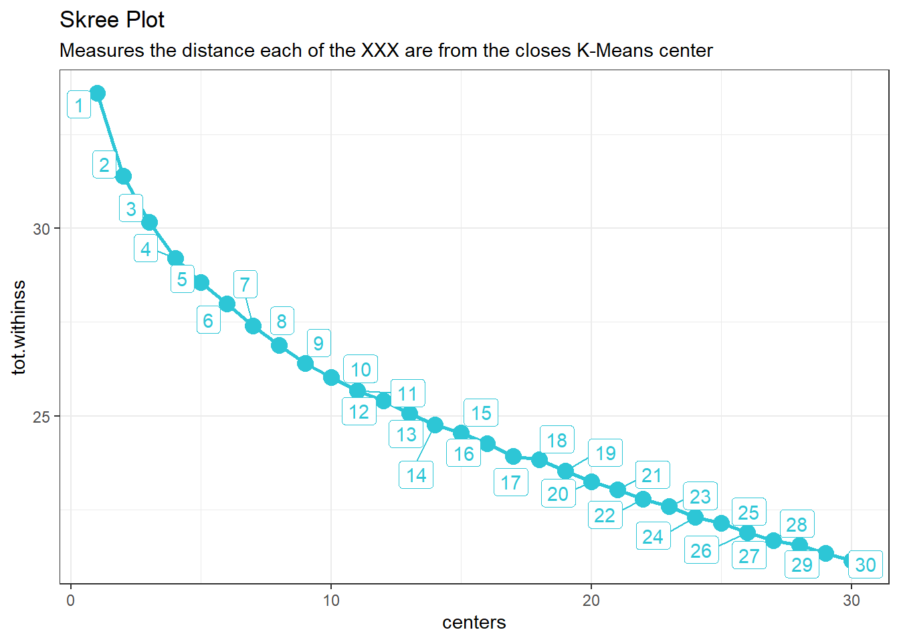
k_means_mapped_tbl <- read_rds("Rstudio/00_scripts/session_6_data/session_6_data/k_means_mapped_tbl.rds")# Apply UMAP
umap_results <- stock_date_matrix_tbl %>%
dplyr::select(-symbol) %>%
umap()
# Store results as: umap_results
# Convert umap results to tibble with symbols
umap_results_tbl <- umap_results$layout %>%
as_tibble() %>%
set_names(c("x", "y")) %>%
bind_cols(
stock_date_matrix_tbl %>% dplyr::select(symbol)
)
# Output: umap_results_tbl# Visualize UMAP results
library(ggrepel)
umap_results_tbl %>%
ggplot(aes(x, y)) +
geom_point(alpha=0.5) +
theme_tq() +
labs(
title = "UMAP Projection"
)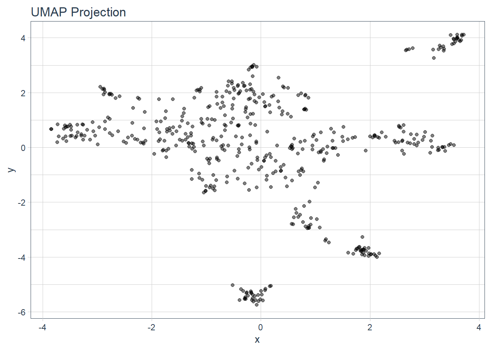
## Step 6 - Combine K-Means and UMAP
k_means_mapped_tbl <- read_rds("Rstudio/00_scripts/session_6_data/session_6_data/k_means_mapped_tbl.rds")
umap_results_tbl <- read_rds("Rstudio/00_scripts/session_6_data/session_6_data/umap_results_tbl.rds")
# Get the k_means_obj from the 10th center
umap_results_tbl## # A tibble: 502 x 3
## V1 V2 symbol
## <dbl> <dbl> <chr>
## 1 -0.764 1.65 A
## 2 -2.70 0.455 AAL
## 3 0.739 -0.0320 AAP
## 4 0.0130 3.09 AAPL
## 5 -0.965 -0.0193 ABBV
## 6 -0.506 -0.659 ABC
## 7 0.436 3.10 ABMD
## 8 -0.262 1.35 ABT
## 9 0.0598 1.63 ACN
## 10 0.570 3.43 ADBE
## # ... with 492 more rows# Get the data for the third element (which we have chosen in the skree plot)
k_means_obj <- k_means_mapped_tbl %>%
pull(k_means) %>%
pluck(9)# Store as k_means_obj
# Use your dplyr & broom skills to combine the k_means_obj with the umap_results_tbl
# Convert it to a tibble with broom
#kmeans_10_clusters_tbl <- k_means_obj %>%
#augment(stock_date_matrix_tbl) %>%
# dplyr::select(symbol, .cluster) %>%
#left_join(umap_results_tbl)
#SP_500_left_join <- sp_500_index_tbl %>% select(symbol, company, sector)
#umap_kmeans_results_tbl <- kmeans_10_clusters_tbl %>% left_join(SP_500_left_join)
# Output: umap_kmeans_results_tbl # Visualize the combined K-Means and UMAP results
#umap_kmeans_results_tbl %>%
# mutate(label_text = str_glue("symbol: {symbol}
# Cluster: {.cluster}")) %>%
# ggplot(aes(x = V1, y = V2, color = .cluster)) +
# Geometries
# geom_point(alpha = 0.5)
# Formatting17 Supervised Machine Learning
In this session we did not use the recipes packages to prepare our data. This is going to be your challenge. For further information take a look at the last session or just use google. Prepare the data for the models with the steps provided below. But this time use all features provided (not just detected strings in two columns). Remember, you don’t need to set the flags by yourself (see all_nominal()).
# Standard
library(tidyverse)
# Modeling
library(parsnip)
# Preprocessing & Sampling
library(recipes)
library(rsample)
# Modeling Error Metrics
library(yardstick)
# Plotting Decision Trees
library(rpart.plot)
library(workflows)
library(dplyr)
# Modeling ----------------------------------------------------------------
bike_features_tbl <- readRDS("C:/Users/Shawn/Documents/Rstudio/00_data/ChallengeLinearRegress/bike_features_tbl.rds")
bike_features_tbl2 <- bike_features_tbl %>%
mutate(id = row_number()) %>%
dplyr::select(id, everything(), -stock_availability, -url_base, -Pedals,-Modeswitch,-`Bike Racks`,-`Wheel Tire System`) %>%
mutate_if(is.numeric, ~replace(., is.na(.), 0))
names(bike_features_tbl2) <- gsub(" ", "_", names(bike_features_tbl2))
names(bike_features_tbl2) <- gsub("/", "_", names(bike_features_tbl2))
names(bike_features_tbl2) <- gsub("-", "_", names(bike_features_tbl2))
# Fix the random numbers by setting the seed
# This enables the analysis to be reproducible when random numbers are used
set.seed(555)
# Put 3/4 of the data into the training set
data_split <- initial_split(bike_features_tbl2, prop = 3/4)
# Create data frames for the two sets:
train_data <- training(data_split)
test_data <- testing(data_split)
#
# ?recipe
# ?step_dummy
# ?prep
# ?bake
# recipe_obj <- recipe(price_euro ~., data = train_data) %>%
# update_role(id, model, new_role = "ID") %>%
# step_rm(contains("Manu"), contains("shift"), contains('hand')) %>%
# step_dummy(all_nominal(), - all_outcomes(), one_hot = TRUE) %>%
#
# # SET NA's to NONE
# step_unknown(all_predictors(), new_level = "None") %>%
# step_mutate_at(everything(), fn = as.factor) %>%
#
#
# step_zv(all_predictors()) %>% step_nzv(all_predictors())
recipe_obj <- recipe(price_euro ~ ., data = train_data) %>%
step_rm(id, model, contains("Manuals_and_Accessories_")) %>%
step_rm(contains("Manu"), contains("shift"), contains('hand')) %>%
step_discretize(weight) %>%
# SET NA's to NONE
step_unknown(all_predictors(), new_level = "None") %>%
step_zv(all_predictors()) %>%
step_dummy(all_nominal(), one_hot = TRUE)
summary(recipe_obj)## # A tibble: 60 x 4
## variable type role source
## <chr> <chr> <chr> <chr>
## 1 id numeric predictor original
## 2 model nominal predictor original
## 3 category_1 nominal predictor original
## 4 category_2 nominal predictor original
## 5 category_3 nominal predictor original
## 6 year nominal predictor original
## 7 gender nominal predictor original
## 8 frame_material nominal predictor original
## 9 weight numeric predictor original
## 10 Frame nominal predictor original
## # ... with 50 more rowsprepared_recipe <- recipe_obj %>% prep()
summary(prepared_recipe)## # A tibble: 877 x 4
## variable type role source
## <chr> <chr> <chr> <chr>
## 1 price_euro numeric outcome original
## 2 category_1_E.Bikes numeric predictor derived
## 3 category_1_Hybrid...City numeric predictor derived
## 4 category_1_Mountain numeric predictor derived
## 5 category_1_Road numeric predictor derived
## 6 category_1_None numeric predictor derived
## 7 category_2_City.Bikes numeric predictor derived
## 8 category_2_Cross.Country numeric predictor derived
## 9 category_2_Cyclocross numeric predictor derived
## 10 category_2_Dirt.Jump numeric predictor derived
## # ... with 867 more rowsbike_train_prepro <- bake(prepared_recipe, train_data)
bike_test_prepro <- bake(prepared_recipe, test_data)
lr_mod <-
linear_reg() %>%
set_engine("lm")
bikes_wflow <-
workflows::workflow() %>%
add_model(lr_mod) %>%
add_recipe(recipe_obj)
bikes_fit <-
bikes_wflow %>%
fit(
data = train_data)
bikes_fit %>%
pull_workflow_fit() %>%
tidy()## # A tibble: 877 x 5
## term estimate std.error statistic p.value
## <chr> <dbl> <dbl> <dbl> <dbl>
## 1 (Intercept) 5339. 3.47e-12 1.54e15 2.20e-75
## 2 category_1_E.Bikes -1340. 5.84e-12 -2.30e14 2.98e-71
## 3 category_1_Hybrid...City -1340. 4.77e-12 -2.81e14 1.08e-71
## 4 category_1_Mountain -3300. 6.15e-12 -5.36e14 4.27e-73
## 5 category_1_Road NA NA NA NA
## 6 category_1_None NA NA NA NA
## 7 category_2_City.Bikes -1080. 3.68e-12 -2.94e14 8.70e-72
## 8 category_2_Cross.Country 4300. 8.84e-12 4.86e14 6.98e-73
## 9 category_2_Cyclocross -250. 5.46e-12 -4.58e13 9.44e-68
## 10 category_2_Dirt.Jump 380. 5.36e-12 7.09e13 1.06e-68
## # ... with 867 more rowspredict(bikes_fit, test_data)## # A tibble: 54 x 1
## .pred
## <dbl>
## 1 2909.
## 2 3699.
## 3 NA
## 4 7209.
## 5 8979.
## 6 1259.
## 7 1169.
## 8 3219.
## 9 NA
## 10 4699.
## # ... with 44 more rowsbikes_pred <-
predict(bikes_fit, test_data) %>%
bind_cols(test_data %>% dplyr::select(price_euro, model, category_1))
bikes_fit %>% predict(new_data = test_data)## # A tibble: 54 x 1
## .pred
## <dbl>
## 1 2909.
## 2 3699.
## 3 NA
## 4 7209.
## 5 8979.
## 6 1259.
## 7 1169.
## 8 3219.
## 9 NA
## 10 4699.
## # ... with 44 more rowsbikes_fit %>%
predict(new_data = test_data) %>%
bind_cols(test_data %>% dplyr::select(price_euro)) %>%
yardstick::metrics(truth = price_euro, estimate = .pred)## # A tibble: 3 x 3
## .metric .estimator .estimate
## <chr> <chr> <dbl>
## 1 rmse standard 1384.
## 2 rsq standard 0.661
## 3 mae standard 911.calc_metrics <- function(model, new_data = test_data) {
model %>%
predict(new_data = new_data) %>%
bind_cols(new_data %>% dplyr::select(price_euro)) %>%
yardstick::metrics(truth = price_euro, estimate = .pred)
}
bikes_fit %>% calc_metrics(test_data)## # A tibble: 3 x 3
## .metric .estimator .estimate
## <chr> <chr> <dbl>
## 1 rmse standard 1384.
## 2 rsq standard 0.661
## 3 mae standard 911.# 3.1.2 Feature Importance ----
#View(bikes_fit) # You will see the coefficients in the element "fit"
# tidy() function is applicable for objects with class "lm"
#bikes_fit$fit %>% class()
#bikes_fit$fit %>%
# broom::tidy() %>%
#arrange(p.value) %>%
# mutate(term = as_factor(term) %>% fct_rev()) %>%
#ggplot(aes(x = estimate, y = term)) +
# geom_point(color = "#2dc6d6", size = 3) +
# ggrepel::geom_label_repel(aes(label = scales::dollar(estimate, accuracy = 1, suffix = " ???", prefix = "")),
# size = 4, fill = "#272A36", color = "white") +
# scale_x_continuous(labels = scales::dollar_format(suffix = " ???", prefix = "")) +
# labs(title = "Linear Regression: Feature Importance",
# subtitle = "Model 01: Simple lm Model") 18 Automated Machine Learning with H20
For the challenge, we shall be working with a Product Backorders dataset. The goal here is to predict whether or not a product will be put on backorder status, given a number of product metrics such as current inventory, transit time, demand forecasts and prior sales. It’s a classic Binary Classification problem.
Steps:
Load the training & test dataset Specifiy the response and predictor variables (watch out for the column “sku”) run AutoML specifying the stopping criterion View the leaderboard Predicting using Leader Model Save the leader model
# Load data
library(tidyverse)
library(readxl)
library(h2o)
library(recipes)
library(readr)
library(readxl)
library(rsample)
product_backorders_tbl <- read_csv("C:/Users/Shawn/Documents/Rstudio/00_data/H20/product_backorders.csv")
# definitions_raw_tbl <- read_excel("C:/Users/Shawn/Documents/Rstudio/00_data/H20/data_definitions.xlsx", sheet = 1, col_names = FALSE)
# View(definitions_raw_tbl)
# H2O modeling
data_table_tbl <-
product_backorders_tbl %>%
mutate_if(is.character, as.factor) %>%
glimpse()## Rows: 19,053
## Columns: 23
## $ sku <dbl> 1113121, 1113268, 1113874, 1114222, 1114823, 1115...
## $ national_inv <dbl> 0, 0, 20, 0, 0, 55, -34, 4, 2, -7, 1, 2, 0, 0, 0,...
## $ lead_time <dbl> 8, 8, 2, 8, 12, 8, 8, 9, 8, 8, 8, 8, 12, 2, 12, 4...
## $ in_transit_qty <dbl> 1, 0, 0, 0, 0, 0, 0, 0, 0, 0, 0, 0, 0, 0, 0, 0, 1...
## $ forecast_3_month <dbl> 6, 2, 45, 9, 31, 216, 120, 43, 4, 56, 2, 5, 5, 54...
## $ forecast_6_month <dbl> 6, 3, 99, 14, 31, 360, 240, 67, 6, 96, 4, 9, 6, 7...
## $ forecast_9_month <dbl> 6, 4, 153, 21, 31, 492, 240, 115, 9, 112, 6, 13, ...
## $ sales_1_month <dbl> 0, 1, 16, 5, 7, 30, 83, 5, 1, 13, 0, 1, 0, 0, 1, ...
## $ sales_3_month <dbl> 4, 2, 42, 17, 15, 108, 122, 22, 5, 30, 2, 5, 4, 0...
## $ sales_6_month <dbl> 9, 3, 80, 36, 33, 275, 144, 40, 6, 56, 3, 8, 5, 0...
## $ sales_9_month <dbl> 12, 3, 111, 43, 47, 340, 165, 58, 9, 76, 4, 11, 6...
## $ min_bank <dbl> 0, 0, 10, 0, 2, 51, 33, 4, 2, 0, 0, 0, 3, 4, 0, 0...
## $ potential_issue <fct> No, No, No, No, No, No, No, No, No, No, No, No, N...
## $ pieces_past_due <dbl> 1, 0, 0, 0, 3, 0, 0, 0, 0, 0, 0, 0, 0, 0, 0, 0, 0...
## $ perf_6_month_avg <dbl> 0.90, 0.96, 0.81, 0.96, 0.98, 0.00, 1.00, 0.69, 1...
## $ perf_12_month_avg <dbl> 0.89, 0.97, 0.88, 0.98, 0.98, 0.00, 0.97, 0.68, 0...
## $ local_bo_qty <dbl> 0, 0, 0, 0, 0, 0, 34, 0, 0, 7, 0, 0, 0, 0, 0, 0, ...
## $ deck_risk <fct> No, No, No, No, No, No, No, No, No, No, No, No, N...
## $ oe_constraint <fct> No, No, No, No, No, No, No, No, No, No, No, No, N...
## $ ppap_risk <fct> No, No, No, No, No, Yes, No, No, No, No, No, Yes,...
## $ stop_auto_buy <fct> Yes, Yes, Yes, Yes, Yes, Yes, Yes, Yes, Yes, Yes,...
## $ rev_stop <fct> No, No, No, No, No, No, No, No, No, No, No, No, N...
## $ went_on_backorder <fct> Yes, Yes, Yes, Yes, Yes, Yes, Yes, Yes, Yes, Yes,...data_table_tbl%>%
mutate_if(is.character, as.factor) %>%
select_if(is.factor) %>%
glimpse()## Rows: 19,053
## Columns: 7
## $ potential_issue <fct> No, No, No, No, No, No, No, No, No, No, No, No, N...
## $ deck_risk <fct> No, No, No, No, No, No, No, No, No, No, No, No, N...
## $ oe_constraint <fct> No, No, No, No, No, No, No, No, No, No, No, No, N...
## $ ppap_risk <fct> No, No, No, No, No, Yes, No, No, No, No, No, Yes,...
## $ stop_auto_buy <fct> Yes, Yes, Yes, Yes, Yes, Yes, Yes, Yes, Yes, Yes,...
## $ rev_stop <fct> No, No, No, No, No, No, No, No, No, No, No, No, N...
## $ went_on_backorder <fct> Yes, Yes, Yes, Yes, Yes, Yes, Yes, Yes, Yes, Yes,...data_table_tbl %>%
mutate_if(is.character, as.factor) %>%
select_if(is.factor) %>%
map(levels)## $potential_issue
## [1] "No" "Yes"
##
## $deck_risk
## [1] "No" "Yes"
##
## $oe_constraint
## [1] "No" "Yes"
##
## $ppap_risk
## [1] "No" "Yes"
##
## $stop_auto_buy
## [1] "No" "Yes"
##
## $rev_stop
## [1] "No" "Yes"
##
## $went_on_backorder
## [1] "No" "Yes"set.seed(seed = 1113)
split_obj <- rsample::initial_split(data_table_tbl, prop = 0.85)
train_readable_tbl <- training(split_obj)
test_readable_tbl <- testing(split_obj)
recipe_obj <- recipe(went_on_backorder ~., data = train_readable_tbl) %>%
update_role(sku, new_role = "ID") %>%
step_zv(all_predictors()) %>%
prep()
train_tbl <- bake(recipe_obj, new_data = train_readable_tbl)
test_tbl <- bake(recipe_obj, new_data = test_readable_tbl)
# Modeling
h2o.init()## Connection successful!
##
## R is connected to the H2O cluster:
## H2O cluster uptime: 1 hours 4 minutes
## H2O cluster timezone: Europe/Berlin
## H2O data parsing timezone: UTC
## H2O cluster version: 3.30.0.1
## H2O cluster version age: 7 months and 24 days !!!
## H2O cluster name: H2O_started_from_R_Shawn_cgv301
## H2O cluster total nodes: 1
## H2O cluster total memory: 2.77 GB
## H2O cluster total cores: 8
## H2O cluster allowed cores: 8
## H2O cluster healthy: TRUE
## H2O Connection ip: localhost
## H2O Connection port: 54321
## H2O Connection proxy: NA
## H2O Internal Security: FALSE
## H2O API Extensions: Amazon S3, Algos, AutoML, Core V3, TargetEncoder, Core V4
## R Version: R version 4.0.2 (2020-06-22)# Split data into a training and a validation data frame
# Setting the seed is just for reproducability
split_h2o <- h2o.splitFrame(as.h2o(train_tbl), ratios = c(0.85), seed = 1234)##
|
| | 0%
|
|======================================================================| 100%train_h2o <- split_h2o[[1]]
valid_h2o <- split_h2o[[2]]
test_h2o <- as.h2o(test_tbl)##
|
| | 0%
|
|======================================================================| 100%# Set the target and predictors
y <- "went_on_backorder"
x <- setdiff(names(train_h2o), y)
automl_models_h2o <- h2o.automl(
x = x,
y = y,
training_frame = train_h2o,
validation_frame = valid_h2o,
leaderboard_frame = test_h2o,
max_runtime_secs = 30,
nfolds = 5
)##
|
| | 0%
|
|= | 1%
## 20:27:37.798: User specified a validation frame with cross-validation still enabled. Please note that the models will still be validated using cross-validation only, the validation frame will be used to provide purely informative validation metrics on the trained models.
## 20:27:37.798: AutoML: XGBoost is not available; skipping it.
|
|======= | 11%
|
|============ | 18%
|
|================= | 24%
|
|====================== | 31%
|
|========================== | 37%
|
|=============================== | 44%
|
|==================================== | 52%
|
|============================================== | 65%
|
|==================================================== | 74%
|
|======================================================================| 100%typeof(automl_models_h2o)## [1] "S4"slotNames(automl_models_h2o)## [1] "project_name" "leader" "leaderboard" "event_log"
## [5] "modeling_steps" "training_info"automl_models_h2o@leaderboard## model_id auc logloss
## 1 StackedEnsemble_AllModels_AutoML_20201128_202737 0.9550560 0.1771460
## 2 GBM_grid__1_AutoML_20201128_202737_model_1 0.9530956 0.1708840
## 3 StackedEnsemble_BestOfFamily_AutoML_20201128_202737 0.9526102 0.1785099
## 4 GBM_3_AutoML_20201128_202737 0.9458906 0.2375381
## 5 GBM_grid__1_AutoML_20201128_202737_model_2 0.9449063 0.2165760
## 6 GBM_2_AutoML_20201128_202737 0.9446244 0.2267636
## aucpr mean_per_class_error rmse mse
## 1 0.7583719 0.1420447 0.2248959 0.05057816
## 2 0.7568838 0.1445539 0.2224939 0.04950353
## 3 0.7609016 0.1510481 0.2244222 0.05036532
## 4 0.7167758 0.1392732 0.2599225 0.06755972
## 5 0.7156431 0.1337456 0.2462285 0.06062846
## 6 0.7159066 0.1878787 0.2526919 0.06385320
##
## [14 rows x 7 columns]automl_models_h2o@leader## Model Details:
## ==============
##
## H2OBinomialModel: stackedensemble
## Model ID: StackedEnsemble_AllModels_AutoML_20201128_202737
## NULL
##
##
## H2OBinomialMetrics: stackedensemble
## ** Reported on training data. **
##
## MSE: 0.02349793
## RMSE: 0.1532903
## LogLoss: 0.09456617
## Mean Per-Class Error: 0.06574037
## AUC: 0.991179
## AUCPR: 0.9508897
## Gini: 0.982358
##
## Confusion Matrix (vertical: actual; across: predicted) for F1-optimal threshold:
## No Yes Error Rate
## No 11941 219 0.018010 =219/12160
## Yes 187 1461 0.113471 =187/1648
## Totals 12128 1680 0.029403 =406/13808
##
## Maximum Metrics: Maximum metrics at their respective thresholds
## metric threshold value idx
## 1 max f1 0.293408 0.878005 230
## 2 max f2 0.142113 0.901384 283
## 3 max f0point5 0.561434 0.910342 153
## 4 max accuracy 0.393051 0.971104 201
## 5 max precision 0.994731 1.000000 0
## 6 max recall 0.023539 1.000000 369
## 7 max specificity 0.994731 1.000000 0
## 8 max absolute_mcc 0.293408 0.861342 230
## 9 max min_per_class_accuracy 0.130168 0.953883 288
## 10 max mean_per_class_accuracy 0.126571 0.954373 289
## 11 max tns 0.994731 12160.000000 0
## 12 max fns 0.994731 1631.000000 0
## 13 max fps 0.014628 12160.000000 399
## 14 max tps 0.023539 1648.000000 369
## 15 max tnr 0.994731 1.000000 0
## 16 max fnr 0.994731 0.989684 0
## 17 max fpr 0.014628 1.000000 399
## 18 max tpr 0.023539 1.000000 369
##
## Gains/Lift Table: Extract with `h2o.gainsLift(<model>, <data>)` or `h2o.gainsLift(<model>, valid=<T/F>, xval=<T/F>)`
## H2OBinomialMetrics: stackedensemble
## ** Reported on validation data. **
##
## MSE: 0.05103184
## RMSE: 0.2259023
## LogLoss: 0.1747372
## Mean Per-Class Error: 0.1238252
## AUC: 0.9594142
## AUCPR: 0.7562894
## Gini: 0.9188283
##
## Confusion Matrix (vertical: actual; across: predicted) for F1-optimal threshold:
## No Yes Error Rate
## No 1983 121 0.057510 =121/2104
## Yes 54 230 0.190141 =54/284
## Totals 2037 351 0.073283 =175/2388
##
## Maximum Metrics: Maximum metrics at their respective thresholds
## metric threshold value idx
## 1 max f1 0.189978 0.724409 232
## 2 max f2 0.073260 0.810228 293
## 3 max f0point5 0.547057 0.724138 135
## 4 max accuracy 0.437865 0.930905 159
## 5 max precision 0.993360 1.000000 0
## 6 max recall 0.018917 1.000000 381
## 7 max specificity 0.993360 1.000000 0
## 8 max absolute_mcc 0.189978 0.687785 232
## 9 max min_per_class_accuracy 0.077456 0.897887 289
## 10 max mean_per_class_accuracy 0.061360 0.911092 303
## 11 max tns 0.993360 2104.000000 0
## 12 max fns 0.993360 282.000000 0
## 13 max fps 0.014496 2104.000000 399
## 14 max tps 0.018917 284.000000 381
## 15 max tnr 0.993360 1.000000 0
## 16 max fnr 0.993360 0.992958 0
## 17 max fpr 0.014496 1.000000 399
## 18 max tpr 0.018917 1.000000 381
##
## Gains/Lift Table: Extract with `h2o.gainsLift(<model>, <data>)` or `h2o.gainsLift(<model>, valid=<T/F>, xval=<T/F>)`
## H2OBinomialMetrics: stackedensemble
## ** Reported on cross-validation data. **
## ** 5-fold cross-validation on training data (Metrics computed for combined holdout predictions) **
##
## MSE: 0.05343031
## RMSE: 0.23115
## LogLoss: 0.1878825
## Mean Per-Class Error: 0.1674805
## AUC: 0.9488929
## AUCPR: 0.7313312
## Gini: 0.8977858
##
## Confusion Matrix (vertical: actual; across: predicted) for F1-optimal threshold:
## No Yes Error Rate
## No 11636 524 0.043092 =524/12160
## Yes 481 1167 0.291869 =481/1648
## Totals 12117 1691 0.072784 =1005/13808
##
## Maximum Metrics: Maximum metrics at their respective thresholds
## metric threshold value idx
## 1 max f1 0.268454 0.699012 226
## 2 max f2 0.069596 0.768023 319
## 3 max f0point5 0.558591 0.730999 144
## 4 max accuracy 0.448264 0.930548 173
## 5 max precision 0.989883 0.923077 1
## 6 max recall 0.015431 1.000000 395
## 7 max specificity 0.994393 0.999918 0
## 8 max absolute_mcc 0.275359 0.657775 224
## 9 max min_per_class_accuracy 0.073083 0.881908 316
## 10 max mean_per_class_accuracy 0.069596 0.883834 319
## 11 max tns 0.994393 12159.000000 0
## 12 max fns 0.994393 1640.000000 0
## 13 max fps 0.013611 12160.000000 399
## 14 max tps 0.015431 1648.000000 395
## 15 max tnr 0.994393 0.999918 0
## 16 max fnr 0.994393 0.995146 0
## 17 max fpr 0.013611 1.000000 399
## 18 max tpr 0.015431 1.000000 395
##
## Gains/Lift Table: Extract with `h2o.gainsLift(<model>, <data>)` or `h2o.gainsLift(<model>, valid=<T/F>, xval=<T/F>)`# Depending on the algorithm, the output will be different
#h2o.getModel("GBM_grid__1_AutoML_20201128_192518_model_1")
extract_h2o_model_name_by_position <- function(h2o_leaderboard, n = 1, verbose = T) {
model_name <- h2o_leaderboard %>%
as_tibble() %>%
slice(n) %>%
pull(model_id)
if (verbose) message(model_name)
return(model_name)
}
automl_models_h2o@leaderboard %>%
extract_h2o_model_name_by_position(6) %>%
h2o.getModel()## Model Details:
## ==============
##
## H2OBinomialModel: gbm
## Model ID: GBM_2_AutoML_20201128_202737
## Model Summary:
## number_of_trees number_of_internal_trees model_size_in_bytes min_depth
## 1 13 13 9352 7
## max_depth mean_depth min_leaves max_leaves mean_leaves
## 1 7 7.00000 40 75 52.30769
##
##
## H2OBinomialMetrics: gbm
## ** Reported on training data. **
##
## MSE: 0.06401094
## RMSE: 0.2530038
## LogLoss: 0.2262927
## Mean Per-Class Error: 0.1533018
## AUC: 0.9514362
## AUCPR: 0.764878
## Gini: 0.9028723
## R^2: 0.3909892
##
## Confusion Matrix (vertical: actual; across: predicted) for F1-optimal threshold:
## No Yes Error Rate
## No 11575 585 0.048109 =585/12160
## Yes 426 1222 0.258495 =426/1648
## Totals 12001 1807 0.073218 =1011/13808
##
## Maximum Metrics: Maximum metrics at their respective thresholds
## metric threshold value idx
## 1 max f1 0.223146 0.707381 210
## 2 max f2 0.156389 0.763686 253
## 3 max f0point5 0.310342 0.740569 163
## 4 max accuracy 0.302762 0.932648 166
## 5 max precision 0.844627 1.000000 0
## 6 max recall 0.051003 1.000000 378
## 7 max specificity 0.844627 1.000000 0
## 8 max absolute_mcc 0.223146 0.666560 210
## 9 max min_per_class_accuracy 0.140475 0.877138 264
## 10 max mean_per_class_accuracy 0.120125 0.882864 280
## 11 max tns 0.844627 12160.000000 0
## 12 max fns 0.844627 1647.000000 0
## 13 max fps 0.037729 12160.000000 399
## 14 max tps 0.051003 1648.000000 378
## 15 max tnr 0.844627 1.000000 0
## 16 max fnr 0.844627 0.999393 0
## 17 max fpr 0.037729 1.000000 399
## 18 max tpr 0.051003 1.000000 378
##
## Gains/Lift Table: Extract with `h2o.gainsLift(<model>, <data>)` or `h2o.gainsLift(<model>, valid=<T/F>, xval=<T/F>)`
## H2OBinomialMetrics: gbm
## ** Reported on validation data. **
##
## MSE: 0.06444576
## RMSE: 0.2538617
## LogLoss: 0.2270194
## Mean Per-Class Error: 0.1558065
## AUC: 0.9499612
## AUCPR: 0.7414563
## Gini: 0.8999223
## R^2: 0.3849663
##
## Confusion Matrix (vertical: actual; across: predicted) for F1-optimal threshold:
## No Yes Error Rate
## No 2004 100 0.047529 =100/2104
## Yes 75 209 0.264085 =75/284
## Totals 2079 309 0.073283 =175/2388
##
## Maximum Metrics: Maximum metrics at their respective thresholds
## metric threshold value idx
## 1 max f1 0.235428 0.704890 165
## 2 max f2 0.155439 0.784739 219
## 3 max f0point5 0.302257 0.715461 129
## 4 max accuracy 0.283328 0.929648 136
## 5 max precision 0.805213 1.000000 0
## 6 max recall 0.068669 1.000000 331
## 7 max specificity 0.805213 1.000000 0
## 8 max absolute_mcc 0.235428 0.663908 165
## 9 max min_per_class_accuracy 0.155439 0.890845 219
## 10 max mean_per_class_accuracy 0.146042 0.892579 227
## 11 max tns 0.805213 2104.000000 0
## 12 max fns 0.805213 283.000000 0
## 13 max fps 0.037730 2104.000000 399
## 14 max tps 0.068669 284.000000 331
## 15 max tnr 0.805213 1.000000 0
## 16 max fnr 0.805213 0.996479 0
## 17 max fpr 0.037730 1.000000 399
## 18 max tpr 0.068669 1.000000 331
##
## Gains/Lift Table: Extract with `h2o.gainsLift(<model>, <data>)` or `h2o.gainsLift(<model>, valid=<T/F>, xval=<T/F>)`
## H2OBinomialMetrics: gbm
## ** Reported on cross-validation data. **
## ** 5-fold cross-validation on training data (Metrics computed for combined holdout predictions) **
##
## MSE: 0.06896002
## RMSE: 0.2626024
## LogLoss: 0.2394794
## Mean Per-Class Error: 0.1829969
## AUC: 0.933978
## AUCPR: 0.6732969
## Gini: 0.8679561
## R^2: 0.3439028
##
## Confusion Matrix (vertical: actual; across: predicted) for F1-optimal threshold:
## No Yes Error Rate
## No 11480 680 0.055921 =680/12160
## Yes 511 1137 0.310073 =511/1648
## Totals 11991 1817 0.086254 =1191/13808
##
## Maximum Metrics: Maximum metrics at their respective thresholds
## metric threshold value idx
## 1 max f1 0.219348 0.656277 204
## 2 max f2 0.132848 0.740876 261
## 3 max f0point5 0.337086 0.677047 145
## 4 max accuracy 0.323171 0.919467 152
## 5 max precision 0.884009 1.000000 0
## 6 max recall 0.039433 1.000000 389
## 7 max specificity 0.884009 1.000000 0
## 8 max absolute_mcc 0.219348 0.608042 204
## 9 max min_per_class_accuracy 0.131177 0.866283 262
## 10 max mean_per_class_accuracy 0.131177 0.866697 262
## 11 max tns 0.884009 12160.000000 0
## 12 max fns 0.884009 1647.000000 0
## 13 max fps 0.029682 12160.000000 399
## 14 max tps 0.039433 1648.000000 389
## 15 max tnr 0.884009 1.000000 0
## 16 max fnr 0.884009 0.999393 0
## 17 max fpr 0.029682 1.000000 399
## 18 max tpr 0.039433 1.000000 389
##
## Gains/Lift Table: Extract with `h2o.gainsLift(<model>, <data>)` or `h2o.gainsLift(<model>, valid=<T/F>, xval=<T/F>)`
## Cross-Validation Metrics Summary:
## mean sd cv_1_valid cv_2_valid cv_3_valid cv_4_valid
## accuracy 0.91207916 0.011852911 0.9315713 0.90477914 0.9112962 0.91198844
## auc 0.934538 0.010504253 0.9526372 0.92756367 0.9294009 0.93477046
## aucpr 0.67812204 0.03883997 0.73744076 0.6324394 0.68889356 0.66862637
## err 0.087920874 0.011852911 0.06842867 0.09522086 0.08870384 0.08801159
## err_count 242.8 32.713913 189.0 263.0 245.0 243.0
## cv_5_valid
## accuracy 0.9007606
## auc 0.9283177
## aucpr 0.6632103
## err 0.09923941
## err_count 274.0
##
## ---
## mean sd cv_1_valid cv_2_valid cv_3_valid cv_4_valid
## pr_auc 0.67812204 0.03883997 0.73744076 0.6324394 0.68889356 0.66862637
## precision 0.61579555 0.05813873 0.71428573 0.58481014 0.61517614 0.6
## r2 0.34389347 0.05149981 0.4188337 0.32795927 0.30216748 0.3729935
## recall 0.7227356 0.03764074 0.7121212 0.7 0.6878788 0.7841945
## rmse 0.26243797 0.01039547 0.2472665 0.26589665 0.27095094 0.2565366
## specificity 0.9377467 0.014675302 0.9613487 0.9325658 0.9416118 0.9292763
## cv_5_valid
## pr_auc 0.6632103
## precision 0.5647059
## r2 0.29751337
## recall 0.7294833
## rmse 0.2715391
## specificity 0.92393094#h2o.getModel("GBM_grid__1_AutoML_20201128_192518_model_1") %>%
# h2o.saveModel(path = "C:/Users/Shawn/Documents/Rstudio/00_scripts/H20/Models")
h2o.loadModel("C:/Users/Shawn/Documents/Rstudio/00_scripts/H20/Models/GBM_grid__1_AutoML_20201128_192518_model_1")## Model Details:
## ==============
##
## H2OBinomialModel: gbm
## Model ID: GBM_grid__1_AutoML_20201128_192518_model_1
## Model Summary:
## number_of_trees number_of_internal_trees model_size_in_bytes min_depth
## 1 38 38 52382 11
## max_depth mean_depth min_leaves max_leaves mean_leaves
## 1 11 11.00000 49 143 104.65790
##
##
## H2OBinomialMetrics: gbm
## ** Reported on training data. **
##
## MSE: 0.04055618
## RMSE: 0.2013856
## LogLoss: 0.1437629
## Mean Per-Class Error: 0.1221588
## AUC: 0.9748371
## AUCPR: 0.8536219
## Gini: 0.9496743
## R^2: 0.6141417
##
## Confusion Matrix (vertical: actual; across: predicted) for F1-optimal threshold:
## No Yes Error Rate
## No 11779 381 0.031332 =381/12160
## Yes 351 1297 0.212985 =351/1648
## Totals 12130 1678 0.053013 =732/13808
##
## Maximum Metrics: Maximum metrics at their respective thresholds
## metric threshold value idx
## 1 max f1 0.358353 0.779916 187
## 2 max f2 0.174210 0.837662 256
## 3 max f0point5 0.536821 0.815081 131
## 4 max accuracy 0.469548 0.948218 152
## 5 max precision 0.961556 1.000000 0
## 6 max recall 0.020165 1.000000 370
## 7 max specificity 0.961556 1.000000 0
## 8 max absolute_mcc 0.358353 0.749822 187
## 9 max min_per_class_accuracy 0.171197 0.921117 257
## 10 max mean_per_class_accuracy 0.161668 0.921841 261
## 11 max tns 0.961556 12160.000000 0
## 12 max fns 0.961556 1647.000000 0
## 13 max fps 0.004586 12160.000000 399
## 14 max tps 0.020165 1648.000000 370
## 15 max tnr 0.961556 1.000000 0
## 16 max fnr 0.961556 0.999393 0
## 17 max fpr 0.004586 1.000000 399
## 18 max tpr 0.020165 1.000000 370
##
## Gains/Lift Table: Extract with `h2o.gainsLift(<model>, <data>)` or `h2o.gainsLift(<model>, valid=<T/F>, xval=<T/F>)`
## H2OBinomialMetrics: gbm
## ** Reported on validation data. **
##
## MSE: 0.04997683
## RMSE: 0.223555
## LogLoss: 0.1686668
## Mean Per-Class Error: 0.1238252
## AUC: 0.9579063
## AUCPR: 0.7599021
## Gini: 0.9158126
## R^2: 0.5230495
##
## Confusion Matrix (vertical: actual; across: predicted) for F1-optimal threshold:
## No Yes Error Rate
## No 1983 121 0.057510 =121/2104
## Yes 54 230 0.190141 =54/284
## Totals 2037 351 0.073283 =175/2388
##
## Maximum Metrics: Maximum metrics at their respective thresholds
## metric threshold value idx
## 1 max f1 0.295098 0.724409 193
## 2 max f2 0.166107 0.811750 241
## 3 max f0point5 0.555253 0.710967 114
## 4 max accuracy 0.436861 0.929229 147
## 5 max precision 0.954536 1.000000 0
## 6 max recall 0.015392 1.000000 373
## 7 max specificity 0.954536 1.000000 0
## 8 max absolute_mcc 0.295098 0.687785 193
## 9 max min_per_class_accuracy 0.158767 0.905894 244
## 10 max mean_per_class_accuracy 0.150526 0.908317 249
## 11 max tns 0.954536 2104.000000 0
## 12 max fns 0.954536 283.000000 0
## 13 max fps 0.004402 2104.000000 399
## 14 max tps 0.015392 284.000000 373
## 15 max tnr 0.954536 1.000000 0
## 16 max fnr 0.954536 0.996479 0
## 17 max fpr 0.004402 1.000000 399
## 18 max tpr 0.015392 1.000000 373
##
## Gains/Lift Table: Extract with `h2o.gainsLift(<model>, <data>)` or `h2o.gainsLift(<model>, valid=<T/F>, xval=<T/F>)`
## H2OBinomialMetrics: gbm
## ** Reported on cross-validation data. **
## ** 5-fold cross-validation on training data (Metrics computed for combined holdout predictions) **
##
## MSE: 0.05260729
## RMSE: 0.2293628
## LogLoss: 0.1790634
## Mean Per-Class Error: 0.1579606
## AUC: 0.9478641
## AUCPR: 0.7371929
## Gini: 0.8957283
## R^2: 0.4994854
##
## Confusion Matrix (vertical: actual; across: predicted) for F1-optimal threshold:
## No Yes Error Rate
## No 11565 595 0.048931 =595/12160
## Yes 440 1208 0.266990 =440/1648
## Totals 12005 1803 0.074957 =1035/13808
##
## Maximum Metrics: Maximum metrics at their respective thresholds
## metric threshold value idx
## 1 max f1 0.313683 0.700087 200
## 2 max f2 0.136338 0.772722 270
## 3 max f0point5 0.502405 0.724206 139
## 4 max accuracy 0.472587 0.929968 149
## 5 max precision 0.962581 1.000000 0
## 6 max recall 0.009436 1.000000 387
## 7 max specificity 0.962581 1.000000 0
## 8 max absolute_mcc 0.322177 0.658270 197
## 9 max min_per_class_accuracy 0.127524 0.885316 275
## 10 max mean_per_class_accuracy 0.127524 0.885462 275
## 11 max tns 0.962581 12160.000000 0
## 12 max fns 0.962581 1646.000000 0
## 13 max fps 0.003892 12160.000000 399
## 14 max tps 0.009436 1648.000000 387
## 15 max tnr 0.962581 1.000000 0
## 16 max fnr 0.962581 0.998786 0
## 17 max fpr 0.003892 1.000000 399
## 18 max tpr 0.009436 1.000000 387
##
## Gains/Lift Table: Extract with `h2o.gainsLift(<model>, <data>)` or `h2o.gainsLift(<model>, valid=<T/F>, xval=<T/F>)`
## Cross-Validation Metrics Summary:
## mean sd cv_1_valid cv_2_valid cv_3_valid cv_4_valid
## accuracy 0.92620236 0.002359265 0.9286749 0.92288196 0.9246923 0.9275625
## auc 0.947931 0.0075187115 0.95888907 0.9377305 0.9472675 0.9470035
## aucpr 0.7417363 0.036047567 0.78406173 0.6918735 0.7600945 0.72013336
## err 0.07379763 0.002359265 0.07132512 0.07711803 0.07530775 0.072437525
## err_count 203.8 6.5345235 197.0 213.0 208.0 200.0
## cv_5_valid
## accuracy 0.9272003
## auc 0.94876444
## aucpr 0.7525184
## err 0.07279971
## err_count 201.0
##
## ---
## mean sd cv_1_valid cv_2_valid cv_3_valid cv_4_valid
## pr_auc 0.7417363 0.036047567 0.78406173 0.6918735 0.7600945 0.72013336
## precision 0.67420083 0.007711073 0.66835445 0.6676218 0.6703911 0.67966574
## r2 0.49948326 0.026959382 0.539562 0.46369487 0.4990382 0.50006324
## recall 0.7390679 0.036392853 0.8 0.7060606 0.72727275 0.74164134
## rmse 0.22929588 0.006195573 0.22009018 0.23753142 0.2295712 0.2290714
## specificity 0.9515625 0.0033328757 0.94613487 0.95230263 0.95148027 0.9527138
## cv_5_valid
## pr_auc 0.7525184
## precision 0.6849711
## r2 0.495058
## recall 0.72036475
## rmse 0.23021525
## specificity 0.95518094# Choose whatever model you want
stacked_ensemble_h2o <- h2o.loadModel("C:/Users/Shawn/Documents/Rstudio/00_scripts/H20/Models/GBM_grid__1_AutoML_20201128_192518_model_1")
stacked_ensemble_h2o## Model Details:
## ==============
##
## H2OBinomialModel: gbm
## Model ID: GBM_grid__1_AutoML_20201128_192518_model_1
## Model Summary:
## number_of_trees number_of_internal_trees model_size_in_bytes min_depth
## 1 38 38 52382 11
## max_depth mean_depth min_leaves max_leaves mean_leaves
## 1 11 11.00000 49 143 104.65790
##
##
## H2OBinomialMetrics: gbm
## ** Reported on training data. **
##
## MSE: 0.04055618
## RMSE: 0.2013856
## LogLoss: 0.1437629
## Mean Per-Class Error: 0.1221588
## AUC: 0.9748371
## AUCPR: 0.8536219
## Gini: 0.9496743
## R^2: 0.6141417
##
## Confusion Matrix (vertical: actual; across: predicted) for F1-optimal threshold:
## No Yes Error Rate
## No 11779 381 0.031332 =381/12160
## Yes 351 1297 0.212985 =351/1648
## Totals 12130 1678 0.053013 =732/13808
##
## Maximum Metrics: Maximum metrics at their respective thresholds
## metric threshold value idx
## 1 max f1 0.358353 0.779916 187
## 2 max f2 0.174210 0.837662 256
## 3 max f0point5 0.536821 0.815081 131
## 4 max accuracy 0.469548 0.948218 152
## 5 max precision 0.961556 1.000000 0
## 6 max recall 0.020165 1.000000 370
## 7 max specificity 0.961556 1.000000 0
## 8 max absolute_mcc 0.358353 0.749822 187
## 9 max min_per_class_accuracy 0.171197 0.921117 257
## 10 max mean_per_class_accuracy 0.161668 0.921841 261
## 11 max tns 0.961556 12160.000000 0
## 12 max fns 0.961556 1647.000000 0
## 13 max fps 0.004586 12160.000000 399
## 14 max tps 0.020165 1648.000000 370
## 15 max tnr 0.961556 1.000000 0
## 16 max fnr 0.961556 0.999393 0
## 17 max fpr 0.004586 1.000000 399
## 18 max tpr 0.020165 1.000000 370
##
## Gains/Lift Table: Extract with `h2o.gainsLift(<model>, <data>)` or `h2o.gainsLift(<model>, valid=<T/F>, xval=<T/F>)`
## H2OBinomialMetrics: gbm
## ** Reported on validation data. **
##
## MSE: 0.04997683
## RMSE: 0.223555
## LogLoss: 0.1686668
## Mean Per-Class Error: 0.1238252
## AUC: 0.9579063
## AUCPR: 0.7599021
## Gini: 0.9158126
## R^2: 0.5230495
##
## Confusion Matrix (vertical: actual; across: predicted) for F1-optimal threshold:
## No Yes Error Rate
## No 1983 121 0.057510 =121/2104
## Yes 54 230 0.190141 =54/284
## Totals 2037 351 0.073283 =175/2388
##
## Maximum Metrics: Maximum metrics at their respective thresholds
## metric threshold value idx
## 1 max f1 0.295098 0.724409 193
## 2 max f2 0.166107 0.811750 241
## 3 max f0point5 0.555253 0.710967 114
## 4 max accuracy 0.436861 0.929229 147
## 5 max precision 0.954536 1.000000 0
## 6 max recall 0.015392 1.000000 373
## 7 max specificity 0.954536 1.000000 0
## 8 max absolute_mcc 0.295098 0.687785 193
## 9 max min_per_class_accuracy 0.158767 0.905894 244
## 10 max mean_per_class_accuracy 0.150526 0.908317 249
## 11 max tns 0.954536 2104.000000 0
## 12 max fns 0.954536 283.000000 0
## 13 max fps 0.004402 2104.000000 399
## 14 max tps 0.015392 284.000000 373
## 15 max tnr 0.954536 1.000000 0
## 16 max fnr 0.954536 0.996479 0
## 17 max fpr 0.004402 1.000000 399
## 18 max tpr 0.015392 1.000000 373
##
## Gains/Lift Table: Extract with `h2o.gainsLift(<model>, <data>)` or `h2o.gainsLift(<model>, valid=<T/F>, xval=<T/F>)`
## H2OBinomialMetrics: gbm
## ** Reported on cross-validation data. **
## ** 5-fold cross-validation on training data (Metrics computed for combined holdout predictions) **
##
## MSE: 0.05260729
## RMSE: 0.2293628
## LogLoss: 0.1790634
## Mean Per-Class Error: 0.1579606
## AUC: 0.9478641
## AUCPR: 0.7371929
## Gini: 0.8957283
## R^2: 0.4994854
##
## Confusion Matrix (vertical: actual; across: predicted) for F1-optimal threshold:
## No Yes Error Rate
## No 11565 595 0.048931 =595/12160
## Yes 440 1208 0.266990 =440/1648
## Totals 12005 1803 0.074957 =1035/13808
##
## Maximum Metrics: Maximum metrics at their respective thresholds
## metric threshold value idx
## 1 max f1 0.313683 0.700087 200
## 2 max f2 0.136338 0.772722 270
## 3 max f0point5 0.502405 0.724206 139
## 4 max accuracy 0.472587 0.929968 149
## 5 max precision 0.962581 1.000000 0
## 6 max recall 0.009436 1.000000 387
## 7 max specificity 0.962581 1.000000 0
## 8 max absolute_mcc 0.322177 0.658270 197
## 9 max min_per_class_accuracy 0.127524 0.885316 275
## 10 max mean_per_class_accuracy 0.127524 0.885462 275
## 11 max tns 0.962581 12160.000000 0
## 12 max fns 0.962581 1646.000000 0
## 13 max fps 0.003892 12160.000000 399
## 14 max tps 0.009436 1648.000000 387
## 15 max tnr 0.962581 1.000000 0
## 16 max fnr 0.962581 0.998786 0
## 17 max fpr 0.003892 1.000000 399
## 18 max tpr 0.009436 1.000000 387
##
## Gains/Lift Table: Extract with `h2o.gainsLift(<model>, <data>)` or `h2o.gainsLift(<model>, valid=<T/F>, xval=<T/F>)`
## Cross-Validation Metrics Summary:
## mean sd cv_1_valid cv_2_valid cv_3_valid cv_4_valid
## accuracy 0.92620236 0.002359265 0.9286749 0.92288196 0.9246923 0.9275625
## auc 0.947931 0.0075187115 0.95888907 0.9377305 0.9472675 0.9470035
## aucpr 0.7417363 0.036047567 0.78406173 0.6918735 0.7600945 0.72013336
## err 0.07379763 0.002359265 0.07132512 0.07711803 0.07530775 0.072437525
## err_count 203.8 6.5345235 197.0 213.0 208.0 200.0
## cv_5_valid
## accuracy 0.9272003
## auc 0.94876444
## aucpr 0.7525184
## err 0.07279971
## err_count 201.0
##
## ---
## mean sd cv_1_valid cv_2_valid cv_3_valid cv_4_valid
## pr_auc 0.7417363 0.036047567 0.78406173 0.6918735 0.7600945 0.72013336
## precision 0.67420083 0.007711073 0.66835445 0.6676218 0.6703911 0.67966574
## r2 0.49948326 0.026959382 0.539562 0.46369487 0.4990382 0.50006324
## recall 0.7390679 0.036392853 0.8 0.7060606 0.72727275 0.74164134
## rmse 0.22929588 0.006195573 0.22009018 0.23753142 0.2295712 0.2290714
## specificity 0.9515625 0.0033328757 0.94613487 0.95230263 0.95148027 0.9527138
## cv_5_valid
## pr_auc 0.7525184
## precision 0.6849711
## r2 0.495058
## recall 0.72036475
## rmse 0.23021525
## specificity 0.95518094predictions <- h2o.predict(stacked_ensemble_h2o, newdata = as.h2o(test_tbl))##
|
| | 0%
|
|======================================================================| 100%
##
|
| | 0%
|
|======================================================================| 100%typeof(predictions)## [1] "environment"## [1] "environment"
predictions_tbl <- predictions %>% as_tibble()
deep_learning_h2o <- h2o.loadModel("C:/Users/Shawn/Documents/Rstudio/00_scripts/H20/Models/GBM_grid__1_AutoML_20201128_192518_model_1")
# To see all possible parameters
?h2o.deeplearning
# to get all paramteres
deep_learning_h2o@allparameters## $model_id
## [1] "GBM_grid__1_AutoML_20201128_192518_model_1"
##
## $training_frame
## [1] "automl_training_RTMP_sid_8f2f_150"
##
## $nfolds
## [1] 5
##
## $keep_cross_validation_models
## [1] FALSE
##
## $keep_cross_validation_predictions
## [1] TRUE
##
## $keep_cross_validation_fold_assignment
## [1] FALSE
##
## $score_each_iteration
## [1] FALSE
##
## $score_tree_interval
## [1] 5
##
## $fold_assignment
## [1] "Modulo"
##
## $ignore_const_cols
## [1] TRUE
##
## $balance_classes
## [1] FALSE
##
## $max_after_balance_size
## [1] 5
##
## $max_confusion_matrix_size
## [1] 20
##
## $max_hit_ratio_k
## [1] 0
##
## $ntrees
## [1] 38
##
## $max_depth
## [1] 11
##
## $min_rows
## [1] 30
##
## $nbins
## [1] 20
##
## $nbins_top_level
## [1] 1024
##
## $nbins_cats
## [1] 1024
##
## $r2_stopping
## [1] 1.797693e+308
##
## $stopping_rounds
## [1] 0
##
## $stopping_metric
## [1] "logloss"
##
## $stopping_tolerance
## [1] 0.008510099
##
## $max_runtime_secs
## [1] 0
##
## $seed
## [1] "-1115871212944212577"
##
## $build_tree_one_node
## [1] FALSE
##
## $learn_rate
## [1] 0.1
##
## $learn_rate_annealing
## [1] 1
##
## $distribution
## [1] "bernoulli"
##
## $quantile_alpha
## [1] 0.5
##
## $tweedie_power
## [1] 1.5
##
## $huber_alpha
## [1] 0.9
##
## $sample_rate
## [1] 0.6
##
## $col_sample_rate
## [1] 0.7
##
## $col_sample_rate_change_per_level
## [1] 1
##
## $col_sample_rate_per_tree
## [1] 1
##
## $min_split_improvement
## [1] 1e-04
##
## $histogram_type
## [1] "AUTO"
##
## $max_abs_leafnode_pred
## [1] 1.797693e+308
##
## $pred_noise_bandwidth
## [1] 0
##
## $categorical_encoding
## [1] "AUTO"
##
## $calibrate_model
## [1] FALSE
##
## $check_constant_response
## [1] TRUE
##
## $x
## [1] "sku" "national_inv" "lead_time"
## [4] "in_transit_qty" "forecast_3_month" "forecast_6_month"
## [7] "forecast_9_month" "sales_1_month" "sales_3_month"
## [10] "sales_6_month" "sales_9_month" "min_bank"
## [13] "potential_issue" "pieces_past_due" "perf_6_month_avg"
## [16] "perf_12_month_avg" "local_bo_qty" "deck_risk"
## [19] "oe_constraint" "ppap_risk" "stop_auto_buy"
## [22] "rev_stop"
##
## $y
## [1] "went_on_backorder"#Performance Measures
Apply all the steps you have learned in this session on the dataset from challenge of the last session (Product Backorders):
Leaderboard visualization Tune a model with grid search Visualize the trade of between the precision and the recall and the optimal threshold ROC Plot Precision vs Recall Plot Gain Plot Lift Plot Dashboard with cowplot
# Load data
library(tidyverse)
library(readxl)
library(h2o)
library(recipes)
library(readr)
library(readxl)
library(rsample)
product_backorders_tbl <- read_csv("C:/Users/Shawn/Documents/Rstudio/00_data/H20/product_backorders.csv")
# definitions_raw_tbl <- read_excel("C:/Users/Shawn/Documents/Rstudio/00_data/H20/data_definitions.xlsx", sheet = 1, col_names = FALSE)
# View(definitions_raw_tbl)
# H2O modeling
data_table_tbl <-
product_backorders_tbl %>%
mutate_if(is.character, as.factor) %>%
glimpse()## Rows: 19,053
## Columns: 23
## $ sku <dbl> 1113121, 1113268, 1113874, 1114222, 1114823, 1115...
## $ national_inv <dbl> 0, 0, 20, 0, 0, 55, -34, 4, 2, -7, 1, 2, 0, 0, 0,...
## $ lead_time <dbl> 8, 8, 2, 8, 12, 8, 8, 9, 8, 8, 8, 8, 12, 2, 12, 4...
## $ in_transit_qty <dbl> 1, 0, 0, 0, 0, 0, 0, 0, 0, 0, 0, 0, 0, 0, 0, 0, 1...
## $ forecast_3_month <dbl> 6, 2, 45, 9, 31, 216, 120, 43, 4, 56, 2, 5, 5, 54...
## $ forecast_6_month <dbl> 6, 3, 99, 14, 31, 360, 240, 67, 6, 96, 4, 9, 6, 7...
## $ forecast_9_month <dbl> 6, 4, 153, 21, 31, 492, 240, 115, 9, 112, 6, 13, ...
## $ sales_1_month <dbl> 0, 1, 16, 5, 7, 30, 83, 5, 1, 13, 0, 1, 0, 0, 1, ...
## $ sales_3_month <dbl> 4, 2, 42, 17, 15, 108, 122, 22, 5, 30, 2, 5, 4, 0...
## $ sales_6_month <dbl> 9, 3, 80, 36, 33, 275, 144, 40, 6, 56, 3, 8, 5, 0...
## $ sales_9_month <dbl> 12, 3, 111, 43, 47, 340, 165, 58, 9, 76, 4, 11, 6...
## $ min_bank <dbl> 0, 0, 10, 0, 2, 51, 33, 4, 2, 0, 0, 0, 3, 4, 0, 0...
## $ potential_issue <fct> No, No, No, No, No, No, No, No, No, No, No, No, N...
## $ pieces_past_due <dbl> 1, 0, 0, 0, 3, 0, 0, 0, 0, 0, 0, 0, 0, 0, 0, 0, 0...
## $ perf_6_month_avg <dbl> 0.90, 0.96, 0.81, 0.96, 0.98, 0.00, 1.00, 0.69, 1...
## $ perf_12_month_avg <dbl> 0.89, 0.97, 0.88, 0.98, 0.98, 0.00, 0.97, 0.68, 0...
## $ local_bo_qty <dbl> 0, 0, 0, 0, 0, 0, 34, 0, 0, 7, 0, 0, 0, 0, 0, 0, ...
## $ deck_risk <fct> No, No, No, No, No, No, No, No, No, No, No, No, N...
## $ oe_constraint <fct> No, No, No, No, No, No, No, No, No, No, No, No, N...
## $ ppap_risk <fct> No, No, No, No, No, Yes, No, No, No, No, No, Yes,...
## $ stop_auto_buy <fct> Yes, Yes, Yes, Yes, Yes, Yes, Yes, Yes, Yes, Yes,...
## $ rev_stop <fct> No, No, No, No, No, No, No, No, No, No, No, No, N...
## $ went_on_backorder <fct> Yes, Yes, Yes, Yes, Yes, Yes, Yes, Yes, Yes, Yes,...data_table_tbl%>%
mutate_if(is.character, as.factor) %>%
select_if(is.factor) %>%
glimpse()## Rows: 19,053
## Columns: 7
## $ potential_issue <fct> No, No, No, No, No, No, No, No, No, No, No, No, N...
## $ deck_risk <fct> No, No, No, No, No, No, No, No, No, No, No, No, N...
## $ oe_constraint <fct> No, No, No, No, No, No, No, No, No, No, No, No, N...
## $ ppap_risk <fct> No, No, No, No, No, Yes, No, No, No, No, No, Yes,...
## $ stop_auto_buy <fct> Yes, Yes, Yes, Yes, Yes, Yes, Yes, Yes, Yes, Yes,...
## $ rev_stop <fct> No, No, No, No, No, No, No, No, No, No, No, No, N...
## $ went_on_backorder <fct> Yes, Yes, Yes, Yes, Yes, Yes, Yes, Yes, Yes, Yes,...data_table_tbl %>%
mutate_if(is.character, as.factor) %>%
select_if(is.factor) %>%
map(levels)## $potential_issue
## [1] "No" "Yes"
##
## $deck_risk
## [1] "No" "Yes"
##
## $oe_constraint
## [1] "No" "Yes"
##
## $ppap_risk
## [1] "No" "Yes"
##
## $stop_auto_buy
## [1] "No" "Yes"
##
## $rev_stop
## [1] "No" "Yes"
##
## $went_on_backorder
## [1] "No" "Yes"set.seed(seed = 1113)
split_obj <- rsample::initial_split(data_table_tbl, prop = 0.85)
train_readable_tbl <- training(split_obj)
test_readable_tbl <- testing(split_obj)
recipe_obj <- recipe(went_on_backorder ~., data = train_readable_tbl) %>%
update_role(sku, new_role = "ID") %>%
step_zv(all_predictors()) %>%
prep()
train_tbl <- bake(recipe_obj, new_data = train_readable_tbl)
test_tbl <- bake(recipe_obj, new_data = test_readable_tbl)
# Modeling
h2o.init()## Connection successful!
##
## R is connected to the H2O cluster:
## H2O cluster uptime: 1 hours 25 minutes
## H2O cluster timezone: Europe/Berlin
## H2O data parsing timezone: UTC
## H2O cluster version: 3.30.0.1
## H2O cluster version age: 7 months and 24 days !!!
## H2O cluster name: H2O_started_from_R_Shawn_cgv301
## H2O cluster total nodes: 1
## H2O cluster total memory: 2.63 GB
## H2O cluster total cores: 8
## H2O cluster allowed cores: 8
## H2O cluster healthy: TRUE
## H2O Connection ip: localhost
## H2O Connection port: 54321
## H2O Connection proxy: NA
## H2O Internal Security: FALSE
## H2O API Extensions: Amazon S3, Algos, AutoML, Core V3, TargetEncoder, Core V4
## R Version: R version 4.0.2 (2020-06-22)# Split data into a training and a validation data frame
# Setting the seed is just for reproducability
split_h2o <- h2o.splitFrame(as.h2o(train_tbl), ratios = c(0.85), seed = 1234)##
|
| | 0%
|
|======================================================================| 100%train_h2o <- split_h2o[[1]]
valid_h2o <- split_h2o[[2]]
test_h2o <- as.h2o(test_tbl)##
|
| | 0%
|
|======================================================================| 100%# Set the target and predictors
y <- "went_on_backorder"
x <- setdiff(names(train_h2o), y)
automl_models_h2o <- h2o.automl(
x = x,
y = y,
training_frame = train_h2o,
validation_frame = valid_h2o,
leaderboard_frame = test_h2o,
max_runtime_secs = 30,
nfolds = 5
)##
|
| | 0%
|
|= | 2%
## 20:48:58.626: User specified a validation frame with cross-validation still enabled. Please note that the models will still be validated using cross-validation only, the validation frame will be used to provide purely informative validation metrics on the trained models.
## 20:48:58.628: AutoML: XGBoost is not available; skipping it.
|
|========= | 13%
|
|============== | 20%
|
|================== | 26%
|
|======================= | 32%
|
|=========================== | 39%
|
|================================ | 45%
|
|===================================== | 52%
|
|============================================== | 65%
|
|================================================== | 71%
|
|====================================================== | 78%
|
|======================================================================| 100%typeof(automl_models_h2o)## [1] "S4"slotNames(automl_models_h2o)## [1] "project_name" "leader" "leaderboard" "event_log"
## [5] "modeling_steps" "training_info"automl_models_h2o@leaderboard## model_id auc logloss
## 1 StackedEnsemble_AllModels_AutoML_20201128_204858 0.9497521 0.1806316
## 2 GBM_grid__1_AutoML_20201128_204858_model_1 0.9495332 0.1712754
## 3 StackedEnsemble_BestOfFamily_AutoML_20201128_204858 0.9479988 0.1824778
## 4 GBM_1_AutoML_20201128_204858 0.9394950 0.2330439
## 5 GBM_3_AutoML_20201128_204858 0.9361064 0.2443578
## 6 GBM_2_AutoML_20201128_204858 0.9358156 0.2457484
## aucpr mean_per_class_error rmse mse
## 1 0.7517543 0.1536457 0.2257659 0.05097025
## 2 0.7649190 0.1564416 0.2225841 0.04954367
## 3 0.7530114 0.1573441 0.2257547 0.05096517
## 4 0.7009644 0.1613746 0.2572057 0.06615479
## 5 0.6829806 0.1417611 0.2636869 0.06953078
## 6 0.6753694 0.1644571 0.2652825 0.07037481
##
## [13 rows x 7 columns]automl_models_h2o@leaderboard %>%
as_tibble() %>%
dplyr::select(-c(mean_per_class_error, rmse, mse))## # A tibble: 13 x 4
## model_id auc logloss aucpr
## <chr> <dbl> <dbl> <dbl>
## 1 StackedEnsemble_AllModels_AutoML_20201128_204858 0.950 0.181 0.752
## 2 GBM_grid__1_AutoML_20201128_204858_model_1 0.950 0.171 0.765
## 3 StackedEnsemble_BestOfFamily_AutoML_20201128_204858 0.948 0.182 0.753
## 4 GBM_1_AutoML_20201128_204858 0.939 0.233 0.701
## 5 GBM_3_AutoML_20201128_204858 0.936 0.244 0.683
## 6 GBM_2_AutoML_20201128_204858 0.936 0.246 0.675
## 7 GBM_4_AutoML_20201128_204858 0.932 0.265 0.683
## 8 GBM_grid__1_AutoML_20201128_204858_model_2 0.921 0.269 0.640
## 9 GBM_5_AutoML_20201128_204858 0.914 0.285 0.583
## 10 DRF_1_AutoML_20201128_204858 0.880 0.265 0.562
## 11 XRT_1_AutoML_20201128_204858 0.850 0.645 0.509
## 12 DeepLearning_1_AutoML_20201128_204858 0.702 1.69 0.218
## 13 GLM_1_AutoML_20201128_204858 0.682 0.347 0.196automl_models_h2o@leader## Model Details:
## ==============
##
## H2OBinomialModel: stackedensemble
## Model ID: StackedEnsemble_AllModels_AutoML_20201128_204858
## NULL
##
##
## H2OBinomialMetrics: stackedensemble
## ** Reported on training data. **
##
## MSE: 0.02514277
## RMSE: 0.1585647
## LogLoss: 0.1004653
## Mean Per-Class Error: 0.07203947
## AUC: 0.9895364
## AUCPR: 0.9403519
## Gini: 0.9790728
##
## Confusion Matrix (vertical: actual; across: predicted) for F1-optimal threshold:
## No Yes Error Rate
## No 11928 232 0.019079 =232/12160
## Yes 206 1442 0.125000 =206/1648
## Totals 12134 1674 0.031721 =438/13808
##
## Maximum Metrics: Maximum metrics at their respective thresholds
## metric threshold value idx
## 1 max f1 0.313447 0.868152 214
## 2 max f2 0.159252 0.896902 268
## 3 max f0point5 0.618989 0.890864 136
## 4 max accuracy 0.371664 0.968786 197
## 5 max precision 0.996395 1.000000 0
## 6 max recall 0.021553 1.000000 381
## 7 max specificity 0.996395 1.000000 0
## 8 max absolute_mcc 0.313447 0.850157 214
## 9 max min_per_class_accuracy 0.138033 0.950243 277
## 10 max mean_per_class_accuracy 0.125525 0.952529 283
## 11 max tns 0.996395 12160.000000 0
## 12 max fns 0.996395 1638.000000 0
## 13 max fps 0.016700 12160.000000 399
## 14 max tps 0.021553 1648.000000 381
## 15 max tnr 0.996395 1.000000 0
## 16 max fnr 0.996395 0.993932 0
## 17 max fpr 0.016700 1.000000 399
## 18 max tpr 0.021553 1.000000 381
##
## Gains/Lift Table: Extract with `h2o.gainsLift(<model>, <data>)` or `h2o.gainsLift(<model>, valid=<T/F>, xval=<T/F>)`
## H2OBinomialMetrics: stackedensemble
## ** Reported on validation data. **
##
## MSE: 0.051876
## RMSE: 0.227763
## LogLoss: 0.179697
## Mean Per-Class Error: 0.1319151
## AUC: 0.9578996
## AUCPR: 0.741872
## Gini: 0.9157992
##
## Confusion Matrix (vertical: actual; across: predicted) for F1-optimal threshold:
## No Yes Error Rate
## No 1986 118 0.056084 =118/2104
## Yes 59 225 0.207746 =59/284
## Totals 2045 343 0.074121 =177/2388
##
## Maximum Metrics: Maximum metrics at their respective thresholds
## metric threshold value idx
## 1 max f1 0.198554 0.717703 228
## 2 max f2 0.075834 0.798654 293
## 3 max f0point5 0.486426 0.736755 151
## 4 max accuracy 0.486426 0.933417 151
## 5 max precision 0.993836 1.000000 0
## 6 max recall 0.025712 1.000000 366
## 7 max specificity 0.993836 1.000000 0
## 8 max absolute_mcc 0.198554 0.679464 228
## 9 max min_per_class_accuracy 0.088938 0.897887 283
## 10 max mean_per_class_accuracy 0.060923 0.904438 307
## 11 max tns 0.993836 2104.000000 0
## 12 max fns 0.993836 281.000000 0
## 13 max fps 0.016586 2104.000000 399
## 14 max tps 0.025712 284.000000 366
## 15 max tnr 0.993836 1.000000 0
## 16 max fnr 0.993836 0.989437 0
## 17 max fpr 0.016586 1.000000 399
## 18 max tpr 0.025712 1.000000 366
##
## Gains/Lift Table: Extract with `h2o.gainsLift(<model>, <data>)` or `h2o.gainsLift(<model>, valid=<T/F>, xval=<T/F>)`
## H2OBinomialMetrics: stackedensemble
## ** Reported on cross-validation data. **
## ** 5-fold cross-validation on training data (Metrics computed for combined holdout predictions) **
##
## MSE: 0.05344329
## RMSE: 0.231178
## LogLoss: 0.187184
## Mean Per-Class Error: 0.156557
## AUC: 0.9498801
## AUCPR: 0.7332038
## Gini: 0.8997603
##
## Confusion Matrix (vertical: actual; across: predicted) for F1-optimal threshold:
## No Yes Error Rate
## No 11577 583 0.047944 =583/12160
## Yes 437 1211 0.265170 =437/1648
## Totals 12014 1794 0.073870 =1020/13808
##
## Maximum Metrics: Maximum metrics at their respective thresholds
## metric threshold value idx
## 1 max f1 0.248215 0.703661 237
## 2 max f2 0.086256 0.773229 307
## 3 max f0point5 0.559900 0.720607 145
## 4 max accuracy 0.427987 0.929534 182
## 5 max precision 0.994714 1.000000 0
## 6 max recall 0.017486 1.000000 395
## 7 max specificity 0.994714 1.000000 0
## 8 max absolute_mcc 0.248215 0.662331 237
## 9 max min_per_class_accuracy 0.072592 0.881068 317
## 10 max mean_per_class_accuracy 0.061768 0.883858 325
## 11 max tns 0.994714 12160.000000 0
## 12 max fns 0.994714 1641.000000 0
## 13 max fps 0.015902 12160.000000 399
## 14 max tps 0.017486 1648.000000 395
## 15 max tnr 0.994714 1.000000 0
## 16 max fnr 0.994714 0.995752 0
## 17 max fpr 0.015902 1.000000 399
## 18 max tpr 0.017486 1.000000 395
##
## Gains/Lift Table: Extract with `h2o.gainsLift(<model>, <data>)` or `h2o.gainsLift(<model>, valid=<T/F>, xval=<T/F>)`# Depending on the algorithm, the output will be different
#h2o.getModel("StackedEnsemble_AllModels_AutoML_20201128_193626")
extract_h2o_model_name_by_position <- function(h2o_leaderboard, n = 1, verbose = T) {
model_name <- h2o_leaderboard %>%
as_tibble() %>%
slice(n) %>%
pull(model_id)
if (verbose) message(model_name)
return(model_name)
}
automl_models_h2o@leaderboard %>%
extract_h2o_model_name_by_position(6) %>%
h2o.getModel()## Model Details:
## ==============
##
## H2OBinomialModel: gbm
## Model ID: GBM_2_AutoML_20201128_204858
## Model Summary:
## number_of_trees number_of_internal_trees model_size_in_bytes min_depth
## 1 11 11 7494 7
## max_depth mean_depth min_leaves max_leaves mean_leaves
## 1 7 7.00000 42 57 49.36364
##
##
## H2OBinomialMetrics: gbm
## ** Reported on training data. **
##
## MSE: 0.07038513
## RMSE: 0.265302
## LogLoss: 0.2449406
## Mean Per-Class Error: 0.1468291
## AUC: 0.9442129
## AUCPR: 0.7380026
## Gini: 0.8884257
## R^2: 0.3303441
##
## Confusion Matrix (vertical: actual; across: predicted) for F1-optimal threshold:
## No Yes Error Rate
## No 11393 767 0.063076 =767/12160
## Yes 380 1268 0.230583 =380/1648
## Totals 11773 2035 0.083068 =1147/13808
##
## Maximum Metrics: Maximum metrics at their respective thresholds
## metric threshold value idx
## 1 max f1 0.194007 0.688569 217
## 2 max f2 0.165586 0.758805 238
## 3 max f0point5 0.314303 0.708812 141
## 4 max accuracy 0.256988 0.925695 174
## 5 max precision 0.805987 1.000000 0
## 6 max recall 0.052263 1.000000 382
## 7 max specificity 0.805987 1.000000 0
## 8 max absolute_mcc 0.194007 0.646003 217
## 9 max min_per_class_accuracy 0.142820 0.875000 258
## 10 max mean_per_class_accuracy 0.142820 0.875822 258
## 11 max tns 0.805987 12160.000000 0
## 12 max fns 0.805987 1647.000000 0
## 13 max fps 0.041307 12160.000000 399
## 14 max tps 0.052263 1648.000000 382
## 15 max tnr 0.805987 1.000000 0
## 16 max fnr 0.805987 0.999393 0
## 17 max fpr 0.041307 1.000000 399
## 18 max tpr 0.052263 1.000000 382
##
## Gains/Lift Table: Extract with `h2o.gainsLift(<model>, <data>)` or `h2o.gainsLift(<model>, valid=<T/F>, xval=<T/F>)`
## H2OBinomialMetrics: gbm
## ** Reported on validation data. **
##
## MSE: 0.07143794
## RMSE: 0.2672788
## LogLoss: 0.2470585
## Mean Per-Class Error: 0.149186
## AUC: 0.9419918
## AUCPR: 0.6813539
## Gini: 0.8839836
## R^2: 0.3182369
##
## Confusion Matrix (vertical: actual; across: predicted) for F1-optimal threshold:
## No Yes Error Rate
## No 1980 124 0.058935 =124/2104
## Yes 68 216 0.239437 =68/284
## Totals 2048 340 0.080402 =192/2388
##
## Maximum Metrics: Maximum metrics at their respective thresholds
## metric threshold value idx
## 1 max f1 0.213896 0.692308 162
## 2 max f2 0.177072 0.768238 190
## 3 max f0point5 0.258426 0.687112 135
## 4 max accuracy 0.258426 0.924204 135
## 5 max precision 0.824442 1.000000 0
## 6 max recall 0.057448 1.000000 358
## 7 max specificity 0.824442 1.000000 0
## 8 max absolute_mcc 0.213896 0.649957 162
## 9 max min_per_class_accuracy 0.151023 0.880228 213
## 10 max mean_per_class_accuracy 0.148995 0.882588 215
## 11 max tns 0.824442 2104.000000 0
## 12 max fns 0.824442 283.000000 0
## 13 max fps 0.041307 2104.000000 399
## 14 max tps 0.057448 284.000000 358
## 15 max tnr 0.824442 1.000000 0
## 16 max fnr 0.824442 0.996479 0
## 17 max fpr 0.041307 1.000000 399
## 18 max tpr 0.057448 1.000000 358
##
## Gains/Lift Table: Extract with `h2o.gainsLift(<model>, <data>)` or `h2o.gainsLift(<model>, valid=<T/F>, xval=<T/F>)`
## H2OBinomialMetrics: gbm
## ** Reported on cross-validation data. **
## ** 5-fold cross-validation on training data (Metrics computed for combined holdout predictions) **
##
## MSE: 0.07170821
## RMSE: 0.2677839
## LogLoss: 0.2479433
## Mean Per-Class Error: 0.1630992
## AUC: 0.9321172
## AUCPR: 0.665923
## Gini: 0.8642345
## R^2: 0.3177561
##
## Confusion Matrix (vertical: actual; across: predicted) for F1-optimal threshold:
## No Yes Error Rate
## No 11381 779 0.064062 =779/12160
## Yes 432 1216 0.262136 =432/1648
## Totals 11813 1995 0.087703 =1211/13808
##
## Maximum Metrics: Maximum metrics at their respective thresholds
## metric threshold value idx
## 1 max f1 0.197971 0.667582 211
## 2 max f2 0.143328 0.740015 251
## 3 max f0point5 0.300640 0.675410 150
## 4 max accuracy 0.286566 0.919539 157
## 5 max precision 0.788975 1.000000 0
## 6 max recall 0.046258 1.000000 385
## 7 max specificity 0.788975 1.000000 0
## 8 max absolute_mcc 0.197971 0.621335 211
## 9 max min_per_class_accuracy 0.133473 0.863322 261
## 10 max mean_per_class_accuracy 0.138179 0.864829 256
## 11 max tns 0.788975 12160.000000 0
## 12 max fns 0.788975 1647.000000 0
## 13 max fps 0.035539 12160.000000 399
## 14 max tps 0.046258 1648.000000 385
## 15 max tnr 0.788975 1.000000 0
## 16 max fnr 0.788975 0.999393 0
## 17 max fpr 0.035539 1.000000 399
## 18 max tpr 0.046258 1.000000 385
##
## Gains/Lift Table: Extract with `h2o.gainsLift(<model>, <data>)` or `h2o.gainsLift(<model>, valid=<T/F>, xval=<T/F>)`
## Cross-Validation Metrics Summary:
## mean sd cv_1_valid cv_2_valid cv_3_valid cv_4_valid
## accuracy 0.9129484 0.004928876 0.91962343 0.9116582 0.91564083 0.91126406
## auc 0.9319858 0.010079431 0.9472139 0.9206365 0.9353245 0.9263174
## aucpr 0.6683112 0.046885207 0.7338193 0.61974627 0.69793665 0.6355129
## err 0.08705157 0.004928876 0.080376536 0.08834178 0.08435916 0.08873597
## err_count 240.4 13.575713 222.0 244.0 233.0 245.0
## cv_5_valid
## accuracy 0.9065556
## auc 0.93043673
## aucpr 0.65454066
## err 0.09344441
## err_count 258.0
##
## ---
## mean sd cv_1_valid cv_2_valid cv_3_valid cv_4_valid
## pr_auc 0.6683112 0.046885207 0.7338193 0.61974627 0.69793665 0.6355129
## precision 0.61216307 0.019032482 0.63235295 0.61315787 0.6279683 0.60096157
## r2 0.31774577 0.03414899 0.36559334 0.27914238 0.32750168 0.3257003
## recall 0.74029845 0.030431243 0.7818182 0.7060606 0.72121215 0.7598784
## rmse 0.26771742 0.0066831103 0.25834435 0.27538472 0.26598716 0.26603565
## specificity 0.9363487 0.005163596 0.93832237 0.93955594 0.94202304 0.93174344
## cv_5_valid
## pr_auc 0.65454066
## precision 0.5863747
## r2 0.29079118
## recall 0.7325228
## rmse 0.2728352
## specificity 0.9300987#h2o.getModel("StackedEnsemble_AllModels_AutoML_20201128_193626") %>%
# h2o.saveModel(path = "C:/Users/Shawn/Documents/Rstudio/00_scripts/H20/Models")
h2o.loadModel("C:/Users/Shawn/Documents/Rstudio/00_scripts/H20/Models/StackedEnsemble_AllModels_AutoML_20201128_193626")## Model Details:
## ==============
##
## H2OBinomialModel: stackedensemble
## Model ID: StackedEnsemble_AllModels_AutoML_20201128_193626
## NULL
##
##
## H2OBinomialMetrics: stackedensemble
## ** Reported on training data. **
##
## MSE: 0.03889733
## RMSE: 0.1972241
## LogLoss: 0.1379876
## Mean Per-Class Error: 0.1253996
## AUC: 0.9769486
## AUCPR: 0.8723378
## Gini: 0.9538972
##
## Confusion Matrix (vertical: actual; across: predicted) for F1-optimal threshold:
## No Yes Error Rate
## No 11833 327 0.026891 =327/12160
## Yes 369 1279 0.223908 =369/1648
## Totals 12202 1606 0.050406 =696/13808
##
## Maximum Metrics: Maximum metrics at their respective thresholds
## metric threshold value idx
## 1 max f1 0.282160 0.786109 219
## 2 max f2 0.116274 0.845497 282
## 3 max f0point5 0.466906 0.832310 161
## 4 max accuracy 0.377037 0.951333 187
## 5 max precision 0.997136 1.000000 0
## 6 max recall 0.023516 1.000000 364
## 7 max specificity 0.997136 1.000000 0
## 8 max absolute_mcc 0.282160 0.757627 219
## 9 max min_per_class_accuracy 0.103545 0.925364 289
## 10 max mean_per_class_accuracy 0.103545 0.925593 289
## 11 max tns 0.997136 12160.000000 0
## 12 max fns 0.997136 1630.000000 0
## 13 max fps 0.013076 12160.000000 399
## 14 max tps 0.023516 1648.000000 364
## 15 max tnr 0.997136 1.000000 0
## 16 max fnr 0.997136 0.989078 0
## 17 max fpr 0.013076 1.000000 399
## 18 max tpr 0.023516 1.000000 364
##
## Gains/Lift Table: Extract with `h2o.gainsLift(<model>, <data>)` or `h2o.gainsLift(<model>, valid=<T/F>, xval=<T/F>)`
## H2OBinomialMetrics: stackedensemble
## ** Reported on validation data. **
##
## MSE: 0.05342563
## RMSE: 0.2311398
## LogLoss: 0.1799349
## Mean Per-Class Error: 0.1314398
## AUC: 0.9573432
## AUCPR: 0.7428919
## Gini: 0.9146863
##
## Confusion Matrix (vertical: actual; across: predicted) for F1-optimal threshold:
## No Yes Error Rate
## No 1988 116 0.055133 =116/2104
## Yes 59 225 0.207746 =59/284
## Totals 2047 341 0.073283 =175/2388
##
## Maximum Metrics: Maximum metrics at their respective thresholds
## metric threshold value idx
## 1 max f1 0.209700 0.720000 225
## 2 max f2 0.096992 0.799373 275
## 3 max f0point5 0.452709 0.721831 140
## 4 max accuracy 0.452709 0.929229 140
## 5 max precision 0.996968 1.000000 0
## 6 max recall 0.020699 1.000000 374
## 7 max specificity 0.996968 1.000000 0
## 8 max absolute_mcc 0.209700 0.682000 225
## 9 max min_per_class_accuracy 0.092272 0.898289 279
## 10 max mean_per_class_accuracy 0.067882 0.905766 299
## 11 max tns 0.996968 2104.000000 0
## 12 max fns 0.996968 282.000000 0
## 13 max fps 0.013205 2104.000000 399
## 14 max tps 0.020699 284.000000 374
## 15 max tnr 0.996968 1.000000 0
## 16 max fnr 0.996968 0.992958 0
## 17 max fpr 0.013205 1.000000 399
## 18 max tpr 0.020699 1.000000 374
##
## Gains/Lift Table: Extract with `h2o.gainsLift(<model>, <data>)` or `h2o.gainsLift(<model>, valid=<T/F>, xval=<T/F>)`
## H2OBinomialMetrics: stackedensemble
## ** Reported on cross-validation data. **
## ** 5-fold cross-validation on training data (Metrics computed for combined holdout predictions) **
##
## MSE: 0.05482544
## RMSE: 0.2341483
## LogLoss: 0.1910395
## Mean Per-Class Error: 0.1640597
## AUC: 0.9452389
## AUCPR: 0.7151464
## Gini: 0.8904779
##
## Confusion Matrix (vertical: actual; across: predicted) for F1-optimal threshold:
## No Yes Error Rate
## No 11579 581 0.047780 =581/12160
## Yes 462 1186 0.280340 =462/1648
## Totals 12041 1767 0.075536 =1043/13808
##
## Maximum Metrics: Maximum metrics at their respective thresholds
## metric threshold value idx
## 1 max f1 0.272284 0.694583 225
## 2 max f2 0.088087 0.762918 304
## 3 max f0point5 0.470978 0.711270 162
## 4 max accuracy 0.411599 0.928520 179
## 5 max precision 0.996918 0.916667 0
## 6 max recall 0.014103 1.000000 395
## 7 max specificity 0.996918 0.999918 0
## 8 max absolute_mcc 0.272284 0.652061 225
## 9 max min_per_class_accuracy 0.084864 0.878641 306
## 10 max mean_per_class_accuracy 0.072977 0.880222 315
## 11 max tns 0.996918 12159.000000 0
## 12 max fns 0.996918 1637.000000 0
## 13 max fps 0.012420 12160.000000 399
## 14 max tps 0.014103 1648.000000 395
## 15 max tnr 0.996918 0.999918 0
## 16 max fnr 0.996918 0.993325 0
## 17 max fpr 0.012420 1.000000 399
## 18 max tpr 0.014103 1.000000 395
##
## Gains/Lift Table: Extract with `h2o.gainsLift(<model>, <data>)` or `h2o.gainsLift(<model>, valid=<T/F>, xval=<T/F>)`# Choose whatever model you want
stacked_ensemble_h2o <- h2o.loadModel("C:/Users/Shawn/Documents/Rstudio/00_scripts/H20/Models/StackedEnsemble_AllModels_AutoML_20201128_193626")
stacked_ensemble_h2o## Model Details:
## ==============
##
## H2OBinomialModel: stackedensemble
## Model ID: StackedEnsemble_AllModels_AutoML_20201128_193626
## NULL
##
##
## H2OBinomialMetrics: stackedensemble
## ** Reported on training data. **
##
## MSE: 0.03889733
## RMSE: 0.1972241
## LogLoss: 0.1379876
## Mean Per-Class Error: 0.1253996
## AUC: 0.9769486
## AUCPR: 0.8723378
## Gini: 0.9538972
##
## Confusion Matrix (vertical: actual; across: predicted) for F1-optimal threshold:
## No Yes Error Rate
## No 11833 327 0.026891 =327/12160
## Yes 369 1279 0.223908 =369/1648
## Totals 12202 1606 0.050406 =696/13808
##
## Maximum Metrics: Maximum metrics at their respective thresholds
## metric threshold value idx
## 1 max f1 0.282160 0.786109 219
## 2 max f2 0.116274 0.845497 282
## 3 max f0point5 0.466906 0.832310 161
## 4 max accuracy 0.377037 0.951333 187
## 5 max precision 0.997136 1.000000 0
## 6 max recall 0.023516 1.000000 364
## 7 max specificity 0.997136 1.000000 0
## 8 max absolute_mcc 0.282160 0.757627 219
## 9 max min_per_class_accuracy 0.103545 0.925364 289
## 10 max mean_per_class_accuracy 0.103545 0.925593 289
## 11 max tns 0.997136 12160.000000 0
## 12 max fns 0.997136 1630.000000 0
## 13 max fps 0.013076 12160.000000 399
## 14 max tps 0.023516 1648.000000 364
## 15 max tnr 0.997136 1.000000 0
## 16 max fnr 0.997136 0.989078 0
## 17 max fpr 0.013076 1.000000 399
## 18 max tpr 0.023516 1.000000 364
##
## Gains/Lift Table: Extract with `h2o.gainsLift(<model>, <data>)` or `h2o.gainsLift(<model>, valid=<T/F>, xval=<T/F>)`
## H2OBinomialMetrics: stackedensemble
## ** Reported on validation data. **
##
## MSE: 0.05342563
## RMSE: 0.2311398
## LogLoss: 0.1799349
## Mean Per-Class Error: 0.1314398
## AUC: 0.9573432
## AUCPR: 0.7428919
## Gini: 0.9146863
##
## Confusion Matrix (vertical: actual; across: predicted) for F1-optimal threshold:
## No Yes Error Rate
## No 1988 116 0.055133 =116/2104
## Yes 59 225 0.207746 =59/284
## Totals 2047 341 0.073283 =175/2388
##
## Maximum Metrics: Maximum metrics at their respective thresholds
## metric threshold value idx
## 1 max f1 0.209700 0.720000 225
## 2 max f2 0.096992 0.799373 275
## 3 max f0point5 0.452709 0.721831 140
## 4 max accuracy 0.452709 0.929229 140
## 5 max precision 0.996968 1.000000 0
## 6 max recall 0.020699 1.000000 374
## 7 max specificity 0.996968 1.000000 0
## 8 max absolute_mcc 0.209700 0.682000 225
## 9 max min_per_class_accuracy 0.092272 0.898289 279
## 10 max mean_per_class_accuracy 0.067882 0.905766 299
## 11 max tns 0.996968 2104.000000 0
## 12 max fns 0.996968 282.000000 0
## 13 max fps 0.013205 2104.000000 399
## 14 max tps 0.020699 284.000000 374
## 15 max tnr 0.996968 1.000000 0
## 16 max fnr 0.996968 0.992958 0
## 17 max fpr 0.013205 1.000000 399
## 18 max tpr 0.020699 1.000000 374
##
## Gains/Lift Table: Extract with `h2o.gainsLift(<model>, <data>)` or `h2o.gainsLift(<model>, valid=<T/F>, xval=<T/F>)`
## H2OBinomialMetrics: stackedensemble
## ** Reported on cross-validation data. **
## ** 5-fold cross-validation on training data (Metrics computed for combined holdout predictions) **
##
## MSE: 0.05482544
## RMSE: 0.2341483
## LogLoss: 0.1910395
## Mean Per-Class Error: 0.1640597
## AUC: 0.9452389
## AUCPR: 0.7151464
## Gini: 0.8904779
##
## Confusion Matrix (vertical: actual; across: predicted) for F1-optimal threshold:
## No Yes Error Rate
## No 11579 581 0.047780 =581/12160
## Yes 462 1186 0.280340 =462/1648
## Totals 12041 1767 0.075536 =1043/13808
##
## Maximum Metrics: Maximum metrics at their respective thresholds
## metric threshold value idx
## 1 max f1 0.272284 0.694583 225
## 2 max f2 0.088087 0.762918 304
## 3 max f0point5 0.470978 0.711270 162
## 4 max accuracy 0.411599 0.928520 179
## 5 max precision 0.996918 0.916667 0
## 6 max recall 0.014103 1.000000 395
## 7 max specificity 0.996918 0.999918 0
## 8 max absolute_mcc 0.272284 0.652061 225
## 9 max min_per_class_accuracy 0.084864 0.878641 306
## 10 max mean_per_class_accuracy 0.072977 0.880222 315
## 11 max tns 0.996918 12159.000000 0
## 12 max fns 0.996918 1637.000000 0
## 13 max fps 0.012420 12160.000000 399
## 14 max tps 0.014103 1648.000000 395
## 15 max tnr 0.996918 0.999918 0
## 16 max fnr 0.996918 0.993325 0
## 17 max fpr 0.012420 1.000000 399
## 18 max tpr 0.014103 1.000000 395
##
## Gains/Lift Table: Extract with `h2o.gainsLift(<model>, <data>)` or `h2o.gainsLift(<model>, valid=<T/F>, xval=<T/F>)`predictions <- h2o.predict(stacked_ensemble_h2o, newdata = as.h2o(test_tbl))##
|
| | 0%
|
|======================================================================| 100%
##
|
| | 0%
|
|======================================================================| 100%typeof(predictions)## [1] "environment"## [1] "environment"
predictions_tbl <- predictions %>% as_tibble()
deep_learning_h2o <- h2o.loadModel("C:/Users/Shawn/Documents/Rstudio/00_scripts/H20/Models/StackedEnsemble_AllModels_AutoML_20201128_193626")
# To see all possible parameters
?h2o.deeplearning
# to get all paramteres
deep_learning_h2o@allparameters## $model_id
## [1] "StackedEnsemble_AllModels_AutoML_20201128_193626"
##
## $training_frame
## [1] "automl_training_RTMP_sid_9e1b_608"
##
## $validation_frame
## [1] "RTMP_sid_9e1b_610"
##
## $base_models
## $base_models[[1]]
## $base_models[[1]]$`__meta`
## $base_models[[1]]$`__meta`$schema_version
## [1] 3
##
## $base_models[[1]]$`__meta`$schema_name
## [1] "KeyV3"
##
## $base_models[[1]]$`__meta`$schema_type
## [1] "Key<Keyed>"
##
##
## $base_models[[1]]$name
## [1] "GBM_grid__1_AutoML_20201128_193626_model_1"
##
## $base_models[[1]]$type
## [1] "Key<Keyed>"
##
## $base_models[[1]]$URL
## NULL
##
##
## $base_models[[2]]
## $base_models[[2]]$`__meta`
## $base_models[[2]]$`__meta`$schema_version
## [1] 3
##
## $base_models[[2]]$`__meta`$schema_name
## [1] "KeyV3"
##
## $base_models[[2]]$`__meta`$schema_type
## [1] "Key<Keyed>"
##
##
## $base_models[[2]]$name
## [1] "GBM_grid__1_AutoML_20201128_193626_model_2"
##
## $base_models[[2]]$type
## [1] "Key<Keyed>"
##
## $base_models[[2]]$URL
## NULL
##
##
## $base_models[[3]]
## $base_models[[3]]$`__meta`
## $base_models[[3]]$`__meta`$schema_version
## [1] 3
##
## $base_models[[3]]$`__meta`$schema_name
## [1] "KeyV3"
##
## $base_models[[3]]$`__meta`$schema_type
## [1] "Key<Keyed>"
##
##
## $base_models[[3]]$name
## [1] "GBM_3_AutoML_20201128_193626"
##
## $base_models[[3]]$type
## [1] "Key<Keyed>"
##
## $base_models[[3]]$URL
## NULL
##
##
## $base_models[[4]]
## $base_models[[4]]$`__meta`
## $base_models[[4]]$`__meta`$schema_version
## [1] 3
##
## $base_models[[4]]$`__meta`$schema_name
## [1] "KeyV3"
##
## $base_models[[4]]$`__meta`$schema_type
## [1] "Key<Keyed>"
##
##
## $base_models[[4]]$name
## [1] "GBM_2_AutoML_20201128_193626"
##
## $base_models[[4]]$type
## [1] "Key<Keyed>"
##
## $base_models[[4]]$URL
## NULL
##
##
## $base_models[[5]]
## $base_models[[5]]$`__meta`
## $base_models[[5]]$`__meta`$schema_version
## [1] 3
##
## $base_models[[5]]$`__meta`$schema_name
## [1] "KeyV3"
##
## $base_models[[5]]$`__meta`$schema_type
## [1] "Key<Keyed>"
##
##
## $base_models[[5]]$name
## [1] "GBM_1_AutoML_20201128_193626"
##
## $base_models[[5]]$type
## [1] "Key<Keyed>"
##
## $base_models[[5]]$URL
## NULL
##
##
## $base_models[[6]]
## $base_models[[6]]$`__meta`
## $base_models[[6]]$`__meta`$schema_version
## [1] 3
##
## $base_models[[6]]$`__meta`$schema_name
## [1] "KeyV3"
##
## $base_models[[6]]$`__meta`$schema_type
## [1] "Key<Keyed>"
##
##
## $base_models[[6]]$name
## [1] "GBM_5_AutoML_20201128_193626"
##
## $base_models[[6]]$type
## [1] "Key<Keyed>"
##
## $base_models[[6]]$URL
## NULL
##
##
## $base_models[[7]]
## $base_models[[7]]$`__meta`
## $base_models[[7]]$`__meta`$schema_version
## [1] 3
##
## $base_models[[7]]$`__meta`$schema_name
## [1] "KeyV3"
##
## $base_models[[7]]$`__meta`$schema_type
## [1] "Key<Keyed>"
##
##
## $base_models[[7]]$name
## [1] "GBM_4_AutoML_20201128_193626"
##
## $base_models[[7]]$type
## [1] "Key<Keyed>"
##
## $base_models[[7]]$URL
## NULL
##
##
## $base_models[[8]]
## $base_models[[8]]$`__meta`
## $base_models[[8]]$`__meta`$schema_version
## [1] 3
##
## $base_models[[8]]$`__meta`$schema_name
## [1] "KeyV3"
##
## $base_models[[8]]$`__meta`$schema_type
## [1] "Key<Keyed>"
##
##
## $base_models[[8]]$name
## [1] "XRT_1_AutoML_20201128_193626"
##
## $base_models[[8]]$type
## [1] "Key<Keyed>"
##
## $base_models[[8]]$URL
## NULL
##
##
## $base_models[[9]]
## $base_models[[9]]$`__meta`
## $base_models[[9]]$`__meta`$schema_version
## [1] 3
##
## $base_models[[9]]$`__meta`$schema_name
## [1] "KeyV3"
##
## $base_models[[9]]$`__meta`$schema_type
## [1] "Key<Keyed>"
##
##
## $base_models[[9]]$name
## [1] "DRF_1_AutoML_20201128_193626"
##
## $base_models[[9]]$type
## [1] "Key<Keyed>"
##
## $base_models[[9]]$URL
## NULL
##
##
## $base_models[[10]]
## $base_models[[10]]$`__meta`
## $base_models[[10]]$`__meta`$schema_version
## [1] 3
##
## $base_models[[10]]$`__meta`$schema_name
## [1] "KeyV3"
##
## $base_models[[10]]$`__meta`$schema_type
## [1] "Key<Keyed>"
##
##
## $base_models[[10]]$name
## [1] "DeepLearning_1_AutoML_20201128_193626"
##
## $base_models[[10]]$type
## [1] "Key<Keyed>"
##
## $base_models[[10]]$URL
## NULL
##
##
## $base_models[[11]]
## $base_models[[11]]$`__meta`
## $base_models[[11]]$`__meta`$schema_version
## [1] 3
##
## $base_models[[11]]$`__meta`$schema_name
## [1] "KeyV3"
##
## $base_models[[11]]$`__meta`$schema_type
## [1] "Key<Keyed>"
##
##
## $base_models[[11]]$name
## [1] "GLM_1_AutoML_20201128_193626"
##
## $base_models[[11]]$type
## [1] "Key<Keyed>"
##
## $base_models[[11]]$URL
## NULL
##
##
##
## $metalearner_algorithm
## [1] "AUTO"
##
## $metalearner_nfolds
## [1] 5
##
## $metalearner_params
## [1] ""
##
## $seed
## [1] "4421020905681722678"
##
## $keep_levelone_frame
## [1] TRUE
##
## $x
## [1] "sku" "national_inv" "lead_time"
## [4] "in_transit_qty" "forecast_3_month" "forecast_6_month"
## [7] "forecast_9_month" "sales_1_month" "sales_3_month"
## [10] "sales_6_month" "sales_9_month" "min_bank"
## [13] "potential_issue" "pieces_past_due" "perf_6_month_avg"
## [16] "perf_12_month_avg" "local_bo_qty" "deck_risk"
## [19] "oe_constraint" "ppap_risk" "stop_auto_buy"
## [22] "rev_stop"
##
## $y
## [1] "went_on_backorder"###NEW START HERE###
automl_models_h2o@leaderboard %>%
as_tibble() %>%
dplyr::select(-c(mean_per_class_error, rmse, mse))## # A tibble: 13 x 4
## model_id auc logloss aucpr
## <chr> <dbl> <dbl> <dbl>
## 1 StackedEnsemble_AllModels_AutoML_20201128_204858 0.950 0.181 0.752
## 2 GBM_grid__1_AutoML_20201128_204858_model_1 0.950 0.171 0.765
## 3 StackedEnsemble_BestOfFamily_AutoML_20201128_204858 0.948 0.182 0.753
## 4 GBM_1_AutoML_20201128_204858 0.939 0.233 0.701
## 5 GBM_3_AutoML_20201128_204858 0.936 0.244 0.683
## 6 GBM_2_AutoML_20201128_204858 0.936 0.246 0.675
## 7 GBM_4_AutoML_20201128_204858 0.932 0.265 0.683
## 8 GBM_grid__1_AutoML_20201128_204858_model_2 0.921 0.269 0.640
## 9 GBM_5_AutoML_20201128_204858 0.914 0.285 0.583
## 10 DRF_1_AutoML_20201128_204858 0.880 0.265 0.562
## 11 XRT_1_AutoML_20201128_204858 0.850 0.645 0.509
## 12 DeepLearning_1_AutoML_20201128_204858 0.702 1.69 0.218
## 13 GLM_1_AutoML_20201128_204858 0.682 0.347 0.196# Visualize the H2O leaderboard to help with model selection
data_transformed_tbl <- automl_models_h2o@leaderboard %>%
as_tibble() %>%
dplyr::select(-c(aucpr, mean_per_class_error, rmse, mse)) %>%
mutate(model_type = str_extract(model_id, "[^_]+")) %>%
slice(1:15) %>%
rownames_to_column(var = "rowname") %>%
# Visually this step will not change anything
# It reorders the factors under the hood
mutate(
model_id = as_factor(model_id) %>% reorder(auc),
model_type = as.factor(model_type)
) %>%
pivot_longer(cols = -c(model_id, model_type, rowname),
names_to = "key",
values_to = "value",
names_transform = list(key = forcats::fct_inorder)
) %>%
mutate(model_id = paste0(rowname, ". ", model_id) %>% as_factor() %>% fct_rev())
data_transformed_tbl %>%
ggplot(aes(value, model_id, color = model_type)) +
geom_point(size = 3) +
geom_label(aes(label = round(value, 2), hjust = "inward")) +
# Facet to break out logloss and auc
facet_wrap(~ key, scales = "free_x") +
labs(title = "Leaderboard Metrics",
subtitle = paste0("Ordered by: ", "auc"),
y = "Model Postion, Model ID", x = "") +
theme(legend.position = "bottom")
plot_h2o_leaderboard <- function(h2o_leaderboard, order_by = c("auc", "logloss"),
n_max = 20, size = 4, include_lbl = TRUE) {
# Setup inputs
# adjust input so that all formats are working
order_by <- tolower(order_by[[1]])
leaderboard_tbl <- h2o_leaderboard %>%
as.tibble() %>%
dplyr::select(-c(aucpr, mean_per_class_error, rmse, mse)) %>%
mutate(model_type = str_extract(model_id, "[^_]+")) %>%
rownames_to_column(var = "rowname") %>%
mutate(model_id = paste0(rowname, ". ", model_id) %>% as.factor())
# Transformation
if (order_by == "auc") {
data_transformed_tbl <- leaderboard_tbl %>%
slice(1:n_max) %>%
mutate(
model_id = as_factor(model_id) %>% reorder(auc),
model_type = as.factor(model_type)
) %>%
pivot_longer(cols = -c(model_id, model_type, rowname),
names_to = "key",
values_to = "value",
names_transform = list(key = forcats::fct_inorder)
)
} else if (order_by == "logloss") {
data_transformed_tbl <- leaderboard_tbl %>%
slice(1:n_max) %>%
mutate(
model_id = as_factor(model_id) %>% reorder(logloss) %>% fct_rev(),
model_type = as.factor(model_type)
) %>%
pivot_longer(cols = -c(model_id, model_type, rowname),
names_to = "key",
values_to = "value",
names_transform = list(key = forcats::fct_inorder)
)
} else {
# If nothing is supplied
stop(paste0("order_by = '", order_by, "' is not a permitted option."))
}
# Visualization
g <- data_transformed_tbl %>%
ggplot(aes(value, model_id, color = model_type)) +
geom_point(size = size) +
facet_wrap(~ key, scales = "free_x") +
labs(title = "Leaderboard Metrics",
subtitle = paste0("Ordered by: ", toupper(order_by)),
y = "Model Postion, Model ID", x = "")
if (include_lbl) g <- g + geom_label(aes(label = round(value, 2),
hjust = "inward"))
return(g)
}
StackedEnsemble_h2o <- h2o.loadModel("C:/Users/Shawn/Documents/Rstudio/00_scripts/H20/Models/StackedEnsemble_AllModels_AutoML_20201128_193626")
# Take a look for the metrics on the training data set
# For my model the total error in the confusion matrix is ~15 %
StackedEnsemble_h2o## Model Details:
## ==============
##
## H2OBinomialModel: stackedensemble
## Model ID: StackedEnsemble_AllModels_AutoML_20201128_193626
## NULL
##
##
## H2OBinomialMetrics: stackedensemble
## ** Reported on training data. **
##
## MSE: 0.03889733
## RMSE: 0.1972241
## LogLoss: 0.1379876
## Mean Per-Class Error: 0.1253996
## AUC: 0.9769486
## AUCPR: 0.8723378
## Gini: 0.9538972
##
## Confusion Matrix (vertical: actual; across: predicted) for F1-optimal threshold:
## No Yes Error Rate
## No 11833 327 0.026891 =327/12160
## Yes 369 1279 0.223908 =369/1648
## Totals 12202 1606 0.050406 =696/13808
##
## Maximum Metrics: Maximum metrics at their respective thresholds
## metric threshold value idx
## 1 max f1 0.282160 0.786109 219
## 2 max f2 0.116274 0.845497 282
## 3 max f0point5 0.466906 0.832310 161
## 4 max accuracy 0.377037 0.951333 187
## 5 max precision 0.997136 1.000000 0
## 6 max recall 0.023516 1.000000 364
## 7 max specificity 0.997136 1.000000 0
## 8 max absolute_mcc 0.282160 0.757627 219
## 9 max min_per_class_accuracy 0.103545 0.925364 289
## 10 max mean_per_class_accuracy 0.103545 0.925593 289
## 11 max tns 0.997136 12160.000000 0
## 12 max fns 0.997136 1630.000000 0
## 13 max fps 0.013076 12160.000000 399
## 14 max tps 0.023516 1648.000000 364
## 15 max tnr 0.997136 1.000000 0
## 16 max fnr 0.997136 0.989078 0
## 17 max fpr 0.013076 1.000000 399
## 18 max tpr 0.023516 1.000000 364
##
## Gains/Lift Table: Extract with `h2o.gainsLift(<model>, <data>)` or `h2o.gainsLift(<model>, valid=<T/F>, xval=<T/F>)`
## H2OBinomialMetrics: stackedensemble
## ** Reported on validation data. **
##
## MSE: 0.05342563
## RMSE: 0.2311398
## LogLoss: 0.1799349
## Mean Per-Class Error: 0.1314398
## AUC: 0.9573432
## AUCPR: 0.7428919
## Gini: 0.9146863
##
## Confusion Matrix (vertical: actual; across: predicted) for F1-optimal threshold:
## No Yes Error Rate
## No 1988 116 0.055133 =116/2104
## Yes 59 225 0.207746 =59/284
## Totals 2047 341 0.073283 =175/2388
##
## Maximum Metrics: Maximum metrics at their respective thresholds
## metric threshold value idx
## 1 max f1 0.209700 0.720000 225
## 2 max f2 0.096992 0.799373 275
## 3 max f0point5 0.452709 0.721831 140
## 4 max accuracy 0.452709 0.929229 140
## 5 max precision 0.996968 1.000000 0
## 6 max recall 0.020699 1.000000 374
## 7 max specificity 0.996968 1.000000 0
## 8 max absolute_mcc 0.209700 0.682000 225
## 9 max min_per_class_accuracy 0.092272 0.898289 279
## 10 max mean_per_class_accuracy 0.067882 0.905766 299
## 11 max tns 0.996968 2104.000000 0
## 12 max fns 0.996968 282.000000 0
## 13 max fps 0.013205 2104.000000 399
## 14 max tps 0.020699 284.000000 374
## 15 max tnr 0.996968 1.000000 0
## 16 max fnr 0.996968 0.992958 0
## 17 max fpr 0.013205 1.000000 399
## 18 max tpr 0.020699 1.000000 374
##
## Gains/Lift Table: Extract with `h2o.gainsLift(<model>, <data>)` or `h2o.gainsLift(<model>, valid=<T/F>, xval=<T/F>)`
## H2OBinomialMetrics: stackedensemble
## ** Reported on cross-validation data. **
## ** 5-fold cross-validation on training data (Metrics computed for combined holdout predictions) **
##
## MSE: 0.05482544
## RMSE: 0.2341483
## LogLoss: 0.1910395
## Mean Per-Class Error: 0.1640597
## AUC: 0.9452389
## AUCPR: 0.7151464
## Gini: 0.8904779
##
## Confusion Matrix (vertical: actual; across: predicted) for F1-optimal threshold:
## No Yes Error Rate
## No 11579 581 0.047780 =581/12160
## Yes 462 1186 0.280340 =462/1648
## Totals 12041 1767 0.075536 =1043/13808
##
## Maximum Metrics: Maximum metrics at their respective thresholds
## metric threshold value idx
## 1 max f1 0.272284 0.694583 225
## 2 max f2 0.088087 0.762918 304
## 3 max f0point5 0.470978 0.711270 162
## 4 max accuracy 0.411599 0.928520 179
## 5 max precision 0.996918 0.916667 0
## 6 max recall 0.014103 1.000000 395
## 7 max specificity 0.996918 0.999918 0
## 8 max absolute_mcc 0.272284 0.652061 225
## 9 max min_per_class_accuracy 0.084864 0.878641 306
## 10 max mean_per_class_accuracy 0.072977 0.880222 315
## 11 max tns 0.996918 12159.000000 0
## 12 max fns 0.996918 1637.000000 0
## 13 max fps 0.012420 12160.000000 399
## 14 max tps 0.014103 1648.000000 395
## 15 max tnr 0.996918 0.999918 0
## 16 max fnr 0.996918 0.993325 0
## 17 max fpr 0.012420 1.000000 399
## 18 max tpr 0.014103 1.000000 395
##
## Gains/Lift Table: Extract with `h2o.gainsLift(<model>, <data>)` or `h2o.gainsLift(<model>, valid=<T/F>, xval=<T/F>)`# We want to see how it performs for the testing data frame
test_tbl## # A tibble: 2,857 x 23
## sku national_inv lead_time in_transit_qty forecast_3_month
## <dbl> <dbl> <dbl> <dbl> <dbl>
## 1 1.12e6 7 8 0 0
## 2 1.12e6 0 12 0 163
## 3 1.13e6 150 8 0 325
## 4 1.13e6 0 8 0 3
## 5 1.13e6 3 3 0 16
## 6 1.13e6 -62 8 0 120
## 7 1.13e6 0 8 0 2
## 8 1.13e6 11 2 10 27
## 9 1.13e6 1 2 4 4
## 10 1.14e6 -1 8 0 9
## # ... with 2,847 more rows, and 18 more variables: forecast_6_month <dbl>,
## # forecast_9_month <dbl>, sales_1_month <dbl>, sales_3_month <dbl>,
## # sales_6_month <dbl>, sales_9_month <dbl>, min_bank <dbl>,
## # potential_issue <fct>, pieces_past_due <dbl>, perf_6_month_avg <dbl>,
## # perf_12_month_avg <dbl>, local_bo_qty <dbl>, deck_risk <fct>,
## # oe_constraint <fct>, ppap_risk <fct>, stop_auto_buy <fct>, rev_stop <fct>,
## # went_on_backorder <fct># Make sure to convert it to an h20 object
# Accuracy of the confusion matrix shows ~85 % accuracy
h2o.performance(StackedEnsemble_h2o, newdata = as.h2o(test_tbl))##
|
| | 0%
|
|======================================================================| 100%## H2OBinomialMetrics: stackedensemble
##
## MSE: 0.05320516
## RMSE: 0.2306624
## LogLoss: 0.1845468
## Mean Per-Class Error: 0.1464046
## AUC: 0.9511346
## AUCPR: 0.7319864
## Gini: 0.9022692
##
## Confusion Matrix (vertical: actual; across: predicted) for F1-optimal threshold:
## No Yes Error Rate
## No 2381 142 0.056282 =142/2523
## Yes 79 255 0.236527 =79/334
## Totals 2460 397 0.077354 =221/2857
##
## Maximum Metrics: Maximum metrics at their respective thresholds
## metric threshold value idx
## 1 max f1 0.210768 0.697674 227
## 2 max f2 0.109125 0.774648 273
## 3 max f0point5 0.455058 0.734665 156
## 4 max accuracy 0.439484 0.934197 161
## 5 max precision 0.997072 1.000000 0
## 6 max recall 0.022376 1.000000 370
## 7 max specificity 0.997072 1.000000 0
## 8 max absolute_mcc 0.439484 0.659078 161
## 9 max min_per_class_accuracy 0.083114 0.886228 291
## 10 max mean_per_class_accuracy 0.068224 0.890484 302
## 11 max tns 0.997072 2523.000000 0
## 12 max fns 0.997072 333.000000 0
## 13 max fps 0.013228 2523.000000 399
## 14 max tps 0.022376 334.000000 370
## 15 max tnr 0.997072 1.000000 0
## 16 max fnr 0.997072 0.997006 0
## 17 max fpr 0.013228 1.000000 399
## 18 max tpr 0.022376 1.000000 370
##
## Gains/Lift Table: Extract with `h2o.gainsLift(<model>, <data>)` or `h2o.gainsLift(<model>, valid=<T/F>, xval=<T/F>)`#
#GRID SEARCH
#stackedensemble_grid_01 <- h2o.grid(
# See help page for available algos
#algorithm = "deeplearning",
# I just use the same as the object
#grid_id = "deeplearning_grid_01",
# The following is for ?h2o.deeplearning()
# predictor and response variables
# x = x,
# y = y,
# training and validation frame and crossfold validation
#training_frame = train_h2o,
#validation_frame = valid_h2o,
#nfolds = 5,
# Hyperparamters: Use deeplearning_h2o@allparameters to see all
#hyper_params = list(
# Use some combinations (the first one was the original)
# hidden = list(c(10, 10, 10), c(50, 20, 10), c(20, 20, 20)),
## epochs = c(10, 50, 100)
#)
#)
h2o.getGrid(grid_id = "deeplearning_grid_01", sort_by = "auc", decreasing = TRUE)## H2O Grid Details
## ================
##
## Grid ID: deeplearning_grid_01
## Used hyper parameters:
## - epochs
## - hidden
## Number of models: 9
## Number of failed models: 0
##
## Hyper-Parameter Search Summary: ordered by decreasing auc
## epochs hidden model_ids
## 1 10.395607302251527 [50, 20, 10] deeplearning_grid_01_model_4
## 2 10.38303860247024 [10, 10, 10] deeplearning_grid_01_model_1
## 3 101.38249018443577 [20, 20, 20] deeplearning_grid_01_model_9
## 4 52.02362098409194 [10, 10, 10] deeplearning_grid_01_model_2
## 5 101.37406879842692 [10, 10, 10] deeplearning_grid_01_model_3
## 6 101.39688039575807 [50, 20, 10] deeplearning_grid_01_model_6
## 7 52.00362399174766 [50, 20, 10] deeplearning_grid_01_model_5
## 8 10.406082677467158 [20, 20, 20] deeplearning_grid_01_model_7
## 9 51.9966927699712 [20, 20, 20] deeplearning_grid_01_model_8
## auc
## 1 0.6239589404621232
## 2 0.6069306994922075
## 3 0.5850018812675651
## 4 0.5838801068679739
## 5 0.5800371313314384
## 6 0.565087890625
## 7 0.560878891279701
## 8 0.5551023519337633
## 9 0.5243108422888988deeplearning_grid_01_model_1 <- h2o.getModel("deeplearning_grid_01_model_1")
deeplearning_grid_01_model_1 %>% h2o.auc(train = T, valid = T, xval = T)## train valid xval
## 0.7185337 0.7122123 0.6069307## train valid xval
## 0.9093134 0.7922078 0.8299115
# We can tell the model is overfitting because of the huge difference between training AUC and the validation / cross validation AUC
# Run it on the test data
deeplearning_grid_01_model_1 %>%
h2o.performance(newdata = as.h2o(test_tbl))##
|
| | 0%
|
|======================================================================| 100%## H2OBinomialMetrics: deeplearning
##
## MSE: 0.4204356
## RMSE: 0.64841
## LogLoss: 1.588187
## Mean Per-Class Error: 0.3541431
## AUC: 0.7198872
## AUCPR: 0.2573207
## Gini: 0.4397744
##
## Confusion Matrix (vertical: actual; across: predicted) for F1-optimal threshold:
## No Yes Error Rate
## No 1718 805 0.319065 =805/2523
## Yes 130 204 0.389222 =130/334
## Totals 1848 1009 0.327266 =935/2857
##
## Maximum Metrics: Maximum metrics at their respective thresholds
## metric threshold value idx
## 1 max f1 0.926500 0.303797 64
## 2 max f2 0.576534 0.492462 203
## 3 max f0point5 0.996839 0.282132 3
## 4 max accuracy 0.998428 0.884844 1
## 5 max precision 0.999677 0.636364 0
## 6 max recall 0.000163 1.000000 399
## 7 max specificity 0.999677 0.998415 0
## 8 max absolute_mcc 0.576534 0.223208 203
## 9 max min_per_class_accuracy 0.902385 0.643713 78
## 10 max mean_per_class_accuracy 0.576534 0.671590 203
## 11 max tns 0.999677 2519.000000 0
## 12 max fns 0.999677 327.000000 0
## 13 max fps 0.000163 2523.000000 399
## 14 max tps 0.000163 334.000000 399
## 15 max tnr 0.999677 0.998415 0
## 16 max fnr 0.999677 0.979042 0
## 17 max fpr 0.000163 1.000000 399
## 18 max tpr 0.000163 1.000000 399
##
## Gains/Lift Table: Extract with `h2o.gainsLift(<model>, <data>)` or `h2o.gainsLift(<model>, valid=<T/F>, xval=<T/F>)`stacked_ensemble_h2o <- h2o.loadModel("C:/Users/Shawn/Documents/Rstudio/00_scripts/H20/Models/Model_Use/StackedEnsemble_AllModels_AutoML_20201117_210018")
deeplearning_h2o <- h2o.loadModel("C:/Users/Shawn/Documents/Rstudio/00_scripts/H20/Models/Model_Use/DeepLearning_1_AutoML_20201116_111957")
glm_h2o <- h2o.loadModel("C:/Users/Shawn/Documents/Rstudio/00_scripts/H20/Models/Model_Use/GBM_grid__1_AutoML_20200914_212908_model_1")
performance_h2o <- h2o.performance(stacked_ensemble_h2o, newdata = as.h2o(test_tbl))##
|
| | 0%
|
|======================================================================| 100%typeof(performance_h2o)## [1] "S4"performance_h2o %>% slotNames()## [1] "algorithm" "on_train" "on_valid" "on_xval" "metrics"performance_h2o@metrics## $model
## $model$`__meta`
## $model$`__meta`$schema_version
## [1] 3
##
## $model$`__meta`$schema_name
## [1] "ModelKeyV3"
##
## $model$`__meta`$schema_type
## [1] "Key<Model>"
##
##
## $model$name
## [1] "StackedEnsemble_AllModels_AutoML_20201117_210018"
##
## $model$type
## [1] "Key<Model>"
##
## $model$URL
## [1] "/3/Models/StackedEnsemble_AllModels_AutoML_20201117_210018"
##
##
## $model_checksum
## [1] "-7029390194635685760"
##
## $frame
## $frame$name
## [1] "test_tbl_sid_ae73_162"
##
##
## $frame_checksum
## [1] 0
##
## $description
## NULL
##
## $scoring_time
## [1] 1.605643e+12
##
## $predictions
## NULL
##
## $MSE
## [1] 0.05065804
##
## $RMSE
## [1] 0.2250734
##
## $nobs
## [1] 2857
##
## $custom_metric_name
## NULL
##
## $custom_metric_value
## [1] 0
##
## $r2
## [1] 0.5093123
##
## $logloss
## [1] 0.1774069
##
## $AUC
## [1] 0.9529449
##
## $pr_auc
## [1] 0.7626713
##
## $Gini
## [1] 0.9058898
##
## $mean_per_class_error
## [1] 0.1501242
##
## $domain
## [1] "No" "Yes"
##
## $cm
## $cm$`__meta`
## $cm$`__meta`$schema_version
## [1] 3
##
## $cm$`__meta`$schema_name
## [1] "ConfusionMatrixV3"
##
## $cm$`__meta`$schema_type
## [1] "ConfusionMatrix"
##
##
## $cm$table
## Confusion Matrix: Row labels: Actual class; Column labels: Predicted class
## No Yes Error Rate
## No 2400 123 0.0488 = 123 / 2.523
## Yes 84 250 0.2515 = 84 / 334
## Totals 2484 373 0.0725 = 207 / 2.857
##
##
## $thresholds_and_metric_scores
## Metrics for Thresholds: Binomial metrics as a function of classification thresholds
## threshold f1 f2 f0point5 accuracy precision recall specificity
## 1 0.996770 0.011905 0.007474 0.029240 0.883794 1.000000 0.005988 1.000000
## 2 0.994408 0.017804 0.011202 0.043353 0.884144 1.000000 0.008982 1.000000
## 3 0.993297 0.041056 0.026061 0.096685 0.885544 1.000000 0.020958 1.000000
## 4 0.990567 0.058140 0.037147 0.133690 0.886594 1.000000 0.029940 1.000000
## 5 0.989572 0.085960 0.055514 0.190355 0.888344 1.000000 0.044910 1.000000
## absolute_mcc min_per_class_accuracy mean_per_class_accuracy tns fns fps tps
## 1 0.072744 0.005988 0.502994 2523 332 0 2
## 2 0.089108 0.008982 0.504491 2523 331 0 3
## 3 0.136211 0.020958 0.510479 2523 327 0 7
## 4 0.162889 0.029940 0.514970 2523 324 0 10
## 5 0.199673 0.044910 0.522455 2523 319 0 15
## tnr fnr fpr tpr idx
## 1 1.000000 0.994012 0.000000 0.005988 0
## 2 1.000000 0.991018 0.000000 0.008982 1
## 3 1.000000 0.979042 0.000000 0.020958 2
## 4 1.000000 0.970060 0.000000 0.029940 3
## 5 1.000000 0.955090 0.000000 0.044910 4
##
## ---
## threshold f1 f2 f0point5 accuracy precision recall
## 395 0.015719 0.218873 0.411939 0.149027 0.165558 0.122884 1.000000
## 396 0.015572 0.218586 0.411533 0.148815 0.164158 0.122704 1.000000
## 397 0.015433 0.213623 0.404456 0.145142 0.139307 0.119585 1.000000
## 398 0.015316 0.213487 0.404260 0.145041 0.138607 0.119499 1.000000
## 399 0.015131 0.211125 0.400864 0.143298 0.126356 0.118021 1.000000
## 400 0.014871 0.209339 0.398283 0.141983 0.116906 0.116906 1.000000
## specificity absolute_mcc min_per_class_accuracy mean_per_class_accuracy tns
## 395 0.055093 0.082281 0.055093 0.527547 139
## 396 0.053508 0.081028 0.053508 0.526754 135
## 397 0.025367 0.055077 0.025367 0.512683 64
## 398 0.024574 0.054190 0.024574 0.512287 62
## 399 0.010702 0.035539 0.010702 0.505351 27
## 400 0.000000 0.000000 0.000000 0.500000 0
## fns fps tps tnr fnr fpr tpr idx
## 395 0 2384 334 0.055093 0.000000 0.944907 1.000000 394
## 396 0 2388 334 0.053508 0.000000 0.946492 1.000000 395
## 397 0 2459 334 0.025367 0.000000 0.974633 1.000000 396
## 398 0 2461 334 0.024574 0.000000 0.975426 1.000000 397
## 399 0 2496 334 0.010702 0.000000 0.989298 1.000000 398
## 400 0 2523 334 0.000000 0.000000 1.000000 1.000000 399
##
## $max_criteria_and_metric_scores
## Maximum Metrics: Maximum metrics at their respective thresholds
## metric threshold value idx
## 1 max f1 0.264113 0.707214 211
## 2 max f2 0.087878 0.776183 289
## 3 max f0point5 0.676423 0.751192 113
## 4 max accuracy 0.676423 0.934547 113
## 5 max precision 0.996770 1.000000 0
## 6 max recall 0.019670 1.000000 379
## 7 max specificity 0.996770 1.000000 0
## 8 max absolute_mcc 0.264113 0.667337 211
## 9 max min_per_class_accuracy 0.076286 0.886228 298
## 10 max mean_per_class_accuracy 0.087878 0.886987 289
## 11 max tns 0.996770 2523.000000 0
## 12 max fns 0.996770 332.000000 0
## 13 max fps 0.014871 2523.000000 399
## 14 max tps 0.019670 334.000000 379
## 15 max tnr 0.996770 1.000000 0
## 16 max fnr 0.996770 0.994012 0
## 17 max fpr 0.014871 1.000000 399
## 18 max tpr 0.019670 1.000000 379
##
## $gains_lift_table
## Gains/Lift Table: Avg response rate: 11,69 %, avg score: 12,32 %
## group cumulative_data_fraction lower_threshold lift cumulative_lift
## 1 1 0.01015051 0.981942 8.553892 8.553892
## 2 2 0.02030102 0.955395 6.784121 7.669007
## 3 3 0.03010151 0.932479 7.331908 7.559254
## 4 4 0.04025201 0.902504 7.079083 7.438167
## 5 5 0.05005250 0.867073 6.720915 7.297726
## 6 6 0.10010501 0.471482 5.563021 6.430374
## 7 7 0.15015751 0.179782 2.811419 5.224055
## 8 8 0.20021001 0.078946 1.854340 4.381627
## 9 9 0.29996500 0.038424 0.810369 3.193985
## 10 10 0.40007000 0.027678 0.209361 2.447177
## 11 11 0.50017501 0.023224 0.089726 1.975356
## 12 12 0.59993000 0.020841 0.060027 1.656880
## 13 13 0.70003500 0.019163 0.059817 1.428500
## 14 14 0.79978999 0.017476 0.000000 1.250328
## 15 15 0.89989499 0.016066 0.000000 1.111241
## 16 16 1.00000000 0.014488 0.000000 1.000000
## response_rate score cumulative_response_rate cumulative_score
## 1 1.000000 0.988881 1.000000 0.988881
## 2 0.793103 0.967127 0.896552 0.978004
## 3 0.857143 0.942172 0.883721 0.966338
## 4 0.827586 0.919885 0.869565 0.954624
## 5 0.785714 0.886924 0.853147 0.941368
## 6 0.650350 0.692481 0.751748 0.816925
## 7 0.328671 0.305921 0.610723 0.646590
## 8 0.216783 0.115668 0.512238 0.513860
## 9 0.094737 0.053030 0.373396 0.360608
## 10 0.024476 0.032073 0.286089 0.278403
## 11 0.010490 0.025348 0.230931 0.227756
## 12 0.007018 0.021896 0.193699 0.193526
## 13 0.006993 0.019971 0.167000 0.168708
## 14 0.000000 0.018349 0.146171 0.149954
## 15 0.000000 0.016712 0.129911 0.135132
## 16 0.000000 0.015553 0.116906 0.123162
## capture_rate cumulative_capture_rate gain cumulative_gain
## 1 0.086826 0.086826 755.389222 755.389222
## 2 0.068862 0.155689 578.412141 666.900681
## 3 0.071856 0.227545 633.190761 655.925359
## 4 0.071856 0.299401 607.908321 643.816714
## 5 0.065868 0.365269 572.091531 629.772623
## 6 0.278443 0.643713 456.302081 543.037352
## 7 0.140719 0.784431 181.141912 422.405539
## 8 0.092814 0.877246 85.434027 338.162661
## 9 0.080838 0.958084 -18.963126 219.398542
## 10 0.020958 0.979042 -79.063900 144.717651
## 11 0.008982 0.988024 -91.027386 97.535649
## 12 0.005988 0.994012 -93.997269 65.687994
## 13 0.005988 1.000000 -94.018257 42.850000
## 14 0.000000 1.000000 -100.000000 25.032823
## 15 0.000000 1.000000 -100.000000 11.124076
## 16 0.000000 1.000000 -100.000000 0.000000
##
## $residual_deviance
## [1] 1013.703
##
## $null_deviance
## [1] 2061.286
##
## $AIC
## [1] 1031.703
##
## $null_degrees_of_freedom
## [1] 2856
##
## $residual_degrees_of_freedom
## [1] 2848h2o.auc(performance_h2o, train = T, valid = T, xval = T)## [1] 0.9529449## [1] 0.8588763
# Caution: "train, "val", and "xval" arugments only work for models (not performance objects)
h2o.auc(stacked_ensemble_h2o, train = T, valid = T, xval = T)## train valid xval
## 0.995906 0.959487 0.950536## train valid xval
## 0.9892475 0.8219522 0.8383290
h2o.giniCoef(performance_h2o)## [1] 0.9058898## [1] 0.7177527
h2o.logloss(performance_h2o)## [1] 0.1774069## [1] 0.2941769
# result for the training data
h2o.confusionMatrix(stacked_ensemble_h2o)## Confusion Matrix (vertical: actual; across: predicted) for max f1 @ threshold = 0.443753348485293:
## No Yes Error Rate
## No 12070 90 0.007401 =90/12160
## Yes 179 1469 0.108617 =179/1648
## Totals 12249 1559 0.019481 =269/13808# result for the hold out set
h2o.confusionMatrix(performance_h2o)## Confusion Matrix (vertical: actual; across: predicted) for max f1 @ threshold = 0.26411255759102:
## No Yes Error Rate
## No 2400 123 0.048751 =123/2523
## Yes 84 250 0.251497 =84/334
## Totals 2484 373 0.072454 =207/2857# Precision vs Recall Plot
performance_tbl <- performance_h2o %>%
h2o.metric() %>%
as_tibble()
performance_tbl %>%
glimpse()## Rows: 400
## Columns: 20
## $ threshold <dbl> 0.9967698, 0.9944084, 0.9932971, 0.9905670,...
## $ f1 <dbl> 0.01190476, 0.01780415, 0.04105572, 0.05813...
## $ f2 <dbl> 0.007473842, 0.011202390, 0.026061057, 0.03...
## $ f0point5 <dbl> 0.02923977, 0.04335260, 0.09668508, 0.13368...
## $ accuracy <dbl> 0.8837942, 0.8841442, 0.8855443, 0.8865943,...
## $ precision <dbl> 1.0000000, 1.0000000, 1.0000000, 1.0000000,...
## $ recall <dbl> 0.005988024, 0.008982036, 0.020958084, 0.02...
## $ specificity <dbl> 1.0000000, 1.0000000, 1.0000000, 1.0000000,...
## $ absolute_mcc <dbl> 0.07274403, 0.08910848, 0.13621094, 0.16288...
## $ min_per_class_accuracy <dbl> 0.005988024, 0.008982036, 0.020958084, 0.02...
## $ mean_per_class_accuracy <dbl> 0.5029940, 0.5044910, 0.5104790, 0.5149701,...
## $ tns <dbl> 2523, 2523, 2523, 2523, 2523, 2523, 2523, 2...
## $ fns <dbl> 332, 331, 327, 324, 319, 316, 311, 308, 306...
## $ fps <dbl> 0, 0, 0, 0, 0, 0, 0, 0, 0, 0, 0, 0, 0, 0, 1...
## $ tps <dbl> 2, 3, 7, 10, 15, 18, 23, 26, 28, 31, 32, 35...
## $ tnr <dbl> 1.0000000, 1.0000000, 1.0000000, 1.0000000,...
## $ fnr <dbl> 0.9940120, 0.9910180, 0.9790419, 0.9700599,...
## $ fpr <dbl> 0.0000000000, 0.0000000000, 0.0000000000, 0...
## $ tpr <dbl> 0.005988024, 0.008982036, 0.020958084, 0.02...
## $ idx <int> 0, 1, 2, 3, 4, 5, 6, 7, 8, 9, 10, 11, 12, 1...theme_new <- theme(
legend.position = "bottom",
legend.key = element_blank(),
panel.background = element_rect(fill = "transparent"),
panel.border = element_rect(color = "black", fill = NA, size = 0.5),
panel.grid.major = element_line(color = "grey", size = 0.333)
)
performance_tbl %>%
filter(f1 == max(f1))## # A tibble: 1 x 20
## threshold f1 f2 f0point5 accuracy precision recall specificity
## <dbl> <dbl> <dbl> <dbl> <dbl> <dbl> <dbl> <dbl>
## 1 0.264 0.707 0.731 0.685 0.928 0.670 0.749 0.951
## # ... with 12 more variables: absolute_mcc <dbl>, min_per_class_accuracy <dbl>,
## # mean_per_class_accuracy <dbl>, tns <dbl>, fns <dbl>, fps <dbl>, tps <dbl>,
## # tnr <dbl>, fnr <dbl>, fpr <dbl>, tpr <dbl>, idx <int>performance_tbl %>%
ggplot(aes(x = threshold)) +
geom_line(aes(y = precision), color = "blue", size = 1) +
geom_line(aes(y = recall), color = "red", size = 1) +
# Insert line where precision and recall are harmonically optimized
geom_vline(xintercept = h2o.find_threshold_by_max_metric(performance_h2o, "f1")) +
labs(title = "Precision vs Recall", y = "value") +
theme_new
#stacked_ensemble_h2o <- h2o.loadModel("C:/Users/Shawn/Documents/Rstudio/00_scripts/H20/Models/StackedEnsemble_AllModels_AutoML_20201117_210018")
#deeplearning_h2o <- h2o.loadModel("C:/Users/Shawn/Documents/Rstudio/00_scripts/H20/Models/DeepLearning_1_AutoML_20201116_111957")
#glm_h2o <- h2o.loadModel("C:/Users/Shawn/Documents/Rstudio/00_scripts/H20/Models/GBM_grid__1_AutoML_20200914_212908_model_1")
# ROC Plot
path <- "StackedEnsemble_AllModels_AutoML_20201117_210018"
path2 <-"C:/Users/Shawn/Documents/Rstudio/00_scripts/H20/Models/Model_Use/StackedEnsemble_AllModels_AutoML_20201117_210018"
load_model_performance_metrics <- function(path, test_tbl) {
model_h2o <- h2o.loadModel(path)
perf_h2o <- h2o.performance(model_h2o, newdata = as.h2o(test_tbl))
perf_h2o %>%
h2o.metric() %>%
as_tibble() %>%
mutate(auc = h2o.auc(perf_h2o)) %>%
dplyr::select(tpr, fpr, auc)
}
model_metrics_tbl <- fs::dir_info(path = "C:/Users/Shawn/Documents/Rstudio/00_scripts/H20/Models/Model_Use/") %>%
dplyr::select(path) %>%
mutate(metrics = map(path, load_model_performance_metrics, test_tbl)) %>%
unnest(cols = metrics)##
|
| | 0%
|
|======================================================================| 100%
##
|
| | 0%
|
|======================================================================| 100%
##
|
| | 0%
|
|======================================================================| 100%model_metrics_tbl %>%
mutate(
# Extract the model names
path = str_split(path, pattern = "/", simplify = T)[,3] %>% as_factor(),
auc = auc %>% round(3) %>% as.character() %>% as_factor()
) %>%
ggplot(aes(fpr, tpr, color = path, linetype = auc)) +
geom_line(size = 1) +
# just for demonstration purposes
geom_abline(color = "red", linetype = "dotted") +
theme_new +
theme(
legend.direction = "vertical",
) +
labs(
title = "ROC Plot",
subtitle = "Performance of 3 User Selected Models"
)
# Precision vs Recall
load_model_performance_metrics <- function(path, test_tbl) {
model_h2o <- h2o.loadModel(path)
perf_h2o <- h2o.performance(model_h2o, newdata = as.h2o(test_tbl))
perf_h2o %>%
h2o.metric() %>%
as_tibble() %>%
mutate(auc = h2o.auc(perf_h2o)) %>%
dplyr::select(tpr, fpr, auc, precision, recall)
}
model_metrics_tbl <- fs::dir_info(path = "C:/Users/Shawn/Documents/Rstudio/00_scripts/H20/Models/Model_Use/") %>%
dplyr::select(path) %>%
mutate(metrics = map(path, load_model_performance_metrics, test_tbl)) %>%
unnest(cols = metrics)##
|
| | 0%
|
|======================================================================| 100%
##
|
| | 0%
|
|======================================================================| 100%
##
|
| | 0%
|
|======================================================================| 100%model_metrics_tbl %>%
mutate(
path = str_split(path, pattern = "/", simplify = T)[,3] %>% as_factor(),
auc = auc %>% round(3) %>% as.character() %>% as_factor()
) %>%
ggplot(aes(recall, precision, color = path, linetype = auc)) +
geom_line(size = 1) +
theme_new +
theme(
legend.direction = "vertical",
) +
labs(
title = "Precision vs Recall Plot",
subtitle = "Performance of 3 Top Performing Models"
)
#Gain & Lift
ranked_predictions_tbl <- predictions_tbl %>%
bind_cols(test_tbl) %>%
dplyr::select(predict:Yes, went_on_backorder) %>%
# Sorting from highest to lowest class probability
arrange(desc(Yes))
ranked_predictions_tbl %>%
mutate(ntile = ntile(Yes, n = 10)) %>%
group_by(ntile) %>%
summarise(
cases = n(),
responses = sum(went_on_backorder == "Yes")
) %>%
arrange(desc(ntile))## # A tibble: 10 x 3
## ntile cases responses
## <int> <int> <int>
## 1 10 285 213
## 2 9 285 81
## 3 8 285 24
## 4 7 286 5
## 5 6 286 9
## 6 5 286 2
## 7 4 286 0
## 8 3 286 0
## 9 2 286 0
## 10 1 286 0calculated_gain_lift_tbl <- ranked_predictions_tbl %>%
mutate(ntile = ntile(Yes, n = 10)) %>%
group_by(ntile) %>%
summarise(
cases = n(),
responses = sum(went_on_backorder == "Yes")
) %>%
arrange(desc(ntile)) %>%
# Add group numbers (opposite of ntile)
mutate(group = row_number()) %>%
dplyr::select(group, cases, responses) %>%
# Calculations
mutate(
cumulative_responses = cumsum(responses),
pct_responses = responses / sum(responses),
gain = cumsum(pct_responses),
cumulative_pct_cases = cumsum(cases) / sum(cases),
lift = gain / cumulative_pct_cases,
gain_baseline = cumulative_pct_cases,
lift_baseline = gain_baseline / cumulative_pct_cases
)
calculated_gain_lift_tbl ## # A tibble: 10 x 10
## group cases responses cumulative_resp~ pct_responses gain cumulative_pct_~
## <int> <int> <int> <int> <dbl> <dbl> <dbl>
## 1 1 285 213 213 0.638 0.638 0.0998
## 2 2 285 81 294 0.243 0.880 0.200
## 3 3 285 24 318 0.0719 0.952 0.299
## 4 4 286 5 323 0.0150 0.967 0.399
## 5 5 286 9 332 0.0269 0.994 0.499
## 6 6 286 2 334 0.00599 1 0.600
## 7 7 286 0 334 0 1 0.700
## 8 8 286 0 334 0 1 0.800
## 9 9 286 0 334 0 1 0.900
## 10 10 286 0 334 0 1 1
## # ... with 3 more variables: lift <dbl>, gain_baseline <dbl>,
## # lift_baseline <dbl>gain_lift_tbl <- performance_h2o %>%
h2o.gainsLift() %>%
as.tibble()
## Gain Chart
gain_transformed_tbl <- gain_lift_tbl %>%
dplyr::select(group, cumulative_data_fraction, cumulative_capture_rate, cumulative_lift) %>%
dplyr::select(-contains("lift")) %>%
mutate(baseline = cumulative_data_fraction) %>%
rename(gain = cumulative_capture_rate) %>%
# prepare the data for the plotting (for the color and group aesthetics)
pivot_longer(cols = c(gain, baseline), values_to = "value", names_to = "key")
gain_transformed_tbl %>%
ggplot(aes(x = cumulative_data_fraction, y = value, color = key)) +
geom_line(size = 1.5) +
labs(
title = "Gain Chart",
x = "Cumulative Data Fraction",
y = "Gain"
) +
theme_new
## Lift Plot
lift_transformed_tbl <- gain_lift_tbl %>%
dplyr::select(group, cumulative_data_fraction, cumulative_capture_rate, cumulative_lift) %>%
dplyr::select(-contains("capture")) %>%
mutate(baseline = 1) %>%
rename(lift = cumulative_lift) %>%
pivot_longer(cols = c(lift, baseline), values_to = "value", names_to = "key")
lift_transformed_tbl %>%
ggplot(aes(x = cumulative_data_fraction, y = value, color = key)) +
geom_line(size = 1.5) +
labs(
title = "Lift Chart",
x = "Cumulative Data Fraction",
y = "Lift"
) +
theme_new
# 5. Performance Visualization ----
library(cowplot)
library(glue)
# set values to test the function while building it
h2o_leaderboard <- automl_models_h2o@leaderboard
newdata <- test_tbl
order_by <- "auc"
max_models <- 4
size <- 1
plot_h2o_performance <- function(h2o_leaderboard, newdata, order_by = c("auc", "logloss"),
max_models = 3, size = 1.5) {
# Inputs
leaderboard_tbl <- h2o_leaderboard %>%
as_tibble() %>%
slice(1:max_models)
newdata_tbl <- newdata %>%
as_tibble()
# Selecting the first, if nothing is provided
order_by <- tolower(order_by[[1]])
# Convert string stored in a variable to column name (symbol)
order_by_expr <- rlang::sym(order_by)
# Turn of the progress bars ( opposite h2o.show_progress())
h2o.no_progress()
# 1. Model metrics
get_model_performance_metrics <- function(model_id, test_tbl) {
model_h2o <- h2o.getModel(model_id)
perf_h2o <- h2o.performance(model_h2o, newdata = as.h2o(test_tbl))
perf_h2o %>%
h2o.metric() %>%
as.tibble() %>%
dplyr::select(threshold, tpr, fpr, precision, recall)
}
model_metrics_tbl <- leaderboard_tbl %>%
mutate(metrics = map(model_id, get_model_performance_metrics, newdata_tbl)) %>%
unnest(cols = metrics) %>%
mutate(
model_id = as_factor(model_id) %>%
# programmatically reorder factors depending on order_by
fct_reorder(!! order_by_expr,
.desc = ifelse(order_by == "auc", TRUE, FALSE)),
auc = auc %>%
round(3) %>%
as.character() %>%
as_factor() %>%
fct_reorder(as.numeric(model_id)),
logloss = logloss %>%
round(4) %>%
as.character() %>%
as_factor() %>%
fct_reorder(as.numeric(model_id))
)
# 1A. ROC Plot
p1 <- model_metrics_tbl %>%
ggplot(aes(fpr, tpr, color = model_id, linetype = !! order_by_expr)) +
geom_line(size = size) +
theme_new +
labs(title = "ROC", x = "FPR", y = "TPR") +
theme(legend.direction = "vertical")
# 1B. Precision vs Recall
p2 <- model_metrics_tbl %>%
ggplot(aes(recall, precision, color = model_id, linetype = !! order_by_expr)) +
geom_line(size = size) +
theme_new +
labs(title = "Precision Vs Recall", x = "Recall", y = "Precision") +
theme(legend.position = "none")
# 2. Gain / Lift
get_gain_lift <- function(model_id, test_tbl) {
model_h2o <- h2o.getModel(model_id)
perf_h2o <- h2o.performance(model_h2o, newdata = as.h2o(test_tbl))
perf_h2o %>%
h2o.gainsLift() %>%
as.tibble() %>%
dplyr::select(group, cumulative_data_fraction, cumulative_capture_rate, cumulative_lift)
}
gain_lift_tbl <- leaderboard_tbl %>%
mutate(metrics = map(model_id, get_gain_lift, newdata_tbl)) %>%
unnest(cols = metrics) %>%
mutate(
model_id = as_factor(model_id) %>%
fct_reorder(!! order_by_expr,
.desc = ifelse(order_by == "auc", TRUE, FALSE)),
auc = auc %>%
round(3) %>%
as.character() %>%
as_factor() %>%
fct_reorder(as.numeric(model_id)),
logloss = logloss %>%
round(4) %>%
as.character() %>%
as_factor() %>%
fct_reorder(as.numeric(model_id))
) %>%
rename(
gain = cumulative_capture_rate,
lift = cumulative_lift
)
# 2A. Gain Plot
p3 <- gain_lift_tbl %>%
ggplot(aes(cumulative_data_fraction, gain,
color = model_id, linetype = !! order_by_expr)) +
geom_line(size = size,) +
geom_segment(x = 0, y = 0, xend = 1, yend = 1,
color = "red", size = size, linetype = "dotted") +
theme_new +
expand_limits(x = c(0, 1), y = c(0, 1)) +
labs(title = "Gain",
x = "Cumulative Data Fraction", y = "Gain") +
theme(legend.position = "none")
# 2B. Lift Plot
p4 <- gain_lift_tbl %>%
ggplot(aes(cumulative_data_fraction, lift,
color = model_id, linetype = !! order_by_expr)) +
geom_line(size = size) +
geom_segment(x = 0, y = 1, xend = 1, yend = 1,
color = "red", size = size, linetype = "dotted") +
theme_new +
expand_limits(x = c(0, 1), y = c(0, 1)) +
labs(title = "Lift",
x = "Cumulative Data Fraction", y = "Lift") +
theme(legend.position = "none")
# Combine using cowplot
# cowplot::get_legend extracts a legend from a ggplot object
p_legend <- get_legend(p1)
# Remove legend from p1
p1 <- p1 + theme(legend.position = "none")
# cowplot::plt_grid() combines multiple ggplots into a single cowplot object
p <- cowplot::plot_grid(p1, p2, p3, p4, ncol = 2)
# cowplot::ggdraw() sets up a drawing layer
p_title <- ggdraw() +
# cowplot::draw_label() draws text on a ggdraw layer / ggplot object
draw_label("H2O Model Metrics", size = 18, fontface = "bold",
color = "#2C3E50")
p_subtitle <- ggdraw() +
draw_label(glue("Ordered by {toupper(order_by)}"), size = 10,
color = "#2C3E50")
# Combine everything
ret <- plot_grid(p_title, p_subtitle, p, p_legend,
# Adjust the relative spacing, so that the legends always fits
ncol = 1, rel_heights = c(0.05, 0.05, 1, 0.05 * max_models))
h2o.show_progress()
return(ret)
}
automl_models_h2o@leaderboard %>%
plot_h2o_performance(newdata = test_tbl, order_by = "logloss",
size = 0.5, max_models = 4)
#Explaining Black-Box Models With LIME
Part 1: Recreate plot_features(). Take the explanation data and use the first case to create a plot similar to the output of plot_features().
Part 2: Recreate plot_explanations():
Take the full explanation data and recreate the second plot.
You will need at least the layers geom_tile() and facet_wrap().
# Load data
library(tidyverse)
library(readxl)
library(h2o)
library(recipes)
library(readr)
library(readxl)
library(rsample)
library(tidyquant)
library(lime)
product_backorders_tbl <- read_csv("C:/Users/Shawn/Documents/Rstudio/00_data/H20/product_backorders.csv")
# definitions_raw_tbl <- read_excel("C:/Users/Shawn/Documents/Rstudio/00_data/H20/data_definitions.xlsx", sheet = 1, col_names = FALSE)
# View(definitions_raw_tbl)
# H2O modeling
data_table_tbl <-
product_backorders_tbl %>%
mutate_if(is.character, as.factor) %>%
glimpse()## Rows: 19,053
## Columns: 23
## $ sku <dbl> 1113121, 1113268, 1113874, 1114222, 1114823, 1115...
## $ national_inv <dbl> 0, 0, 20, 0, 0, 55, -34, 4, 2, -7, 1, 2, 0, 0, 0,...
## $ lead_time <dbl> 8, 8, 2, 8, 12, 8, 8, 9, 8, 8, 8, 8, 12, 2, 12, 4...
## $ in_transit_qty <dbl> 1, 0, 0, 0, 0, 0, 0, 0, 0, 0, 0, 0, 0, 0, 0, 0, 1...
## $ forecast_3_month <dbl> 6, 2, 45, 9, 31, 216, 120, 43, 4, 56, 2, 5, 5, 54...
## $ forecast_6_month <dbl> 6, 3, 99, 14, 31, 360, 240, 67, 6, 96, 4, 9, 6, 7...
## $ forecast_9_month <dbl> 6, 4, 153, 21, 31, 492, 240, 115, 9, 112, 6, 13, ...
## $ sales_1_month <dbl> 0, 1, 16, 5, 7, 30, 83, 5, 1, 13, 0, 1, 0, 0, 1, ...
## $ sales_3_month <dbl> 4, 2, 42, 17, 15, 108, 122, 22, 5, 30, 2, 5, 4, 0...
## $ sales_6_month <dbl> 9, 3, 80, 36, 33, 275, 144, 40, 6, 56, 3, 8, 5, 0...
## $ sales_9_month <dbl> 12, 3, 111, 43, 47, 340, 165, 58, 9, 76, 4, 11, 6...
## $ min_bank <dbl> 0, 0, 10, 0, 2, 51, 33, 4, 2, 0, 0, 0, 3, 4, 0, 0...
## $ potential_issue <fct> No, No, No, No, No, No, No, No, No, No, No, No, N...
## $ pieces_past_due <dbl> 1, 0, 0, 0, 3, 0, 0, 0, 0, 0, 0, 0, 0, 0, 0, 0, 0...
## $ perf_6_month_avg <dbl> 0.90, 0.96, 0.81, 0.96, 0.98, 0.00, 1.00, 0.69, 1...
## $ perf_12_month_avg <dbl> 0.89, 0.97, 0.88, 0.98, 0.98, 0.00, 0.97, 0.68, 0...
## $ local_bo_qty <dbl> 0, 0, 0, 0, 0, 0, 34, 0, 0, 7, 0, 0, 0, 0, 0, 0, ...
## $ deck_risk <fct> No, No, No, No, No, No, No, No, No, No, No, No, N...
## $ oe_constraint <fct> No, No, No, No, No, No, No, No, No, No, No, No, N...
## $ ppap_risk <fct> No, No, No, No, No, Yes, No, No, No, No, No, Yes,...
## $ stop_auto_buy <fct> Yes, Yes, Yes, Yes, Yes, Yes, Yes, Yes, Yes, Yes,...
## $ rev_stop <fct> No, No, No, No, No, No, No, No, No, No, No, No, N...
## $ went_on_backorder <fct> Yes, Yes, Yes, Yes, Yes, Yes, Yes, Yes, Yes, Yes,...data_table_tbl%>%
mutate_if(is.character, as.factor) %>%
dplyr::select_if(is.factor) %>%
glimpse()## Rows: 19,053
## Columns: 7
## $ potential_issue <fct> No, No, No, No, No, No, No, No, No, No, No, No, N...
## $ deck_risk <fct> No, No, No, No, No, No, No, No, No, No, No, No, N...
## $ oe_constraint <fct> No, No, No, No, No, No, No, No, No, No, No, No, N...
## $ ppap_risk <fct> No, No, No, No, No, Yes, No, No, No, No, No, Yes,...
## $ stop_auto_buy <fct> Yes, Yes, Yes, Yes, Yes, Yes, Yes, Yes, Yes, Yes,...
## $ rev_stop <fct> No, No, No, No, No, No, No, No, No, No, No, No, N...
## $ went_on_backorder <fct> Yes, Yes, Yes, Yes, Yes, Yes, Yes, Yes, Yes, Yes,...data_table_tbl %>%
mutate_if(is.character, as.factor) %>%
dplyr::select_if(is.factor) %>%
map(levels)## $potential_issue
## [1] "No" "Yes"
##
## $deck_risk
## [1] "No" "Yes"
##
## $oe_constraint
## [1] "No" "Yes"
##
## $ppap_risk
## [1] "No" "Yes"
##
## $stop_auto_buy
## [1] "No" "Yes"
##
## $rev_stop
## [1] "No" "Yes"
##
## $went_on_backorder
## [1] "No" "Yes"set.seed(seed = 1113)
split_obj <- rsample::initial_split(data_table_tbl, prop = 0.85)
train_readable_tbl <- training(split_obj)
test_readable_tbl <- testing(split_obj)
recipe_obj <- recipe(went_on_backorder ~., data = train_readable_tbl) %>%
update_role(sku, new_role = "ID") %>%
step_zv(all_predictors()) %>%
prep()
train_tbl <- bake(recipe_obj, new_data = train_readable_tbl)
test_tbl <- bake(recipe_obj, new_data = test_readable_tbl)
# Modeling
h2o.init()## Connection successful!
##
## R is connected to the H2O cluster:
## H2O cluster uptime: 1 hours 18 minutes
## H2O cluster timezone: Europe/Berlin
## H2O data parsing timezone: UTC
## H2O cluster version: 3.30.0.1
## H2O cluster version age: 7 months and 24 days !!!
## H2O cluster name: H2O_started_from_R_Shawn_cgv301
## H2O cluster total nodes: 1
## H2O cluster total memory: 2.64 GB
## H2O cluster total cores: 8
## H2O cluster allowed cores: 8
## H2O cluster healthy: TRUE
## H2O Connection ip: localhost
## H2O Connection port: 54321
## H2O Connection proxy: NA
## H2O Internal Security: FALSE
## H2O API Extensions: Amazon S3, Algos, AutoML, Core V3, TargetEncoder, Core V4
## R Version: R version 4.0.2 (2020-06-22)automl_leader <- h2o.loadModel("C:/Users/Shawn/Documents/Rstudio/00_scripts/H20/Models/Model_Use/StackedEnsemble_AllModels_AutoML_20201117_210018")
predictions_tbl <- automl_leader %>%
h2o.predict(newdata = as.h2o(test_tbl)) %>%
as.tibble() %>%
bind_cols(
test_tbl %>%
dplyr::select(went_on_backorder)
)##
|
| | 0%
|
|======================================================================| 100%
##
|
| | 0%
|
|======================================================================| 100%predictions_tbl## # A tibble: 2,857 x 4
## predict No Yes went_on_backorder
## <fct> <dbl> <dbl> <fct>
## 1 No 0.971 0.0287 Yes
## 2 Yes 0.155 0.845 Yes
## 3 No 0.836 0.164 Yes
## 4 Yes 0.0493 0.951 Yes
## 5 Yes 0.141 0.859 Yes
## 6 Yes 0.210 0.790 Yes
## 7 Yes 0.133 0.867 Yes
## 8 Yes 0.529 0.471 Yes
## 9 Yes 0.604 0.396 Yes
## 10 Yes 0.0210 0.979 Yes
## # ... with 2,847 more rowstest_tbl %>%
slice(1) %>%
glimpse()## Rows: 1
## Columns: 23
## $ sku <dbl> 1120868
## $ national_inv <dbl> 7
## $ lead_time <dbl> 8
## $ in_transit_qty <dbl> 0
## $ forecast_3_month <dbl> 0
## $ forecast_6_month <dbl> 0
## $ forecast_9_month <dbl> 0
## $ sales_1_month <dbl> 1
## $ sales_3_month <dbl> 1
## $ sales_6_month <dbl> 2
## $ sales_9_month <dbl> 3
## $ min_bank <dbl> 0
## $ potential_issue <fct> No
## $ pieces_past_due <dbl> 0
## $ perf_6_month_avg <dbl> 1
## $ perf_12_month_avg <dbl> 0.98
## $ local_bo_qty <dbl> 0
## $ deck_risk <fct> No
## $ oe_constraint <fct> No
## $ ppap_risk <fct> No
## $ stop_auto_buy <fct> Yes
## $ rev_stop <fct> No
## $ went_on_backorder <fct> Yesexplainer <- train_tbl %>%
dplyr::select(-went_on_backorder) %>%
lime(
model = automl_leader,
bin_continuous = TRUE,
n_bins = 4,
quantile_bins = TRUE
)
explainer## $model
## Model Details:
## ==============
##
## H2OBinomialModel: stackedensemble
## Model ID: StackedEnsemble_AllModels_AutoML_20201117_210018
## NULL
##
##
## H2OBinomialMetrics: stackedensemble
## ** Reported on training data. **
##
## MSE: 0.01668166
## RMSE: 0.1291575
## LogLoss: 0.07479324
## Mean Per-Class Error: 0.05800891
## AUC: 0.995906
## AUCPR: 0.9757165
## Gini: 0.9918119
##
## Confusion Matrix (vertical: actual; across: predicted) for F1-optimal threshold:
## No Yes Error Rate
## No 12070 90 0.007401 =90/12160
## Yes 179 1469 0.108617 =179/1648
## Totals 12249 1559 0.019481 =269/13808
##
## Maximum Metrics: Maximum metrics at their respective thresholds
## metric threshold value idx
## 1 max f1 0.443753 0.916121 188
## 2 max f2 0.178543 0.930192 264
## 3 max f0point5 0.621759 0.937675 142
## 4 max accuracy 0.443753 0.980519 188
## 5 max precision 0.997300 1.000000 0
## 6 max recall 0.029802 1.000000 357
## 7 max specificity 0.997300 1.000000 0
## 8 max absolute_mcc 0.443753 0.905556 188
## 9 max min_per_class_accuracy 0.171511 0.967681 267
## 10 max mean_per_class_accuracy 0.171511 0.968064 267
## 11 max tns 0.997300 12160.000000 0
## 12 max fns 0.997300 1640.000000 0
## 13 max fps 0.014725 12160.000000 399
## 14 max tps 0.029802 1648.000000 357
## 15 max tnr 0.997300 1.000000 0
## 16 max fnr 0.997300 0.995146 0
## 17 max fpr 0.014725 1.000000 399
## 18 max tpr 0.029802 1.000000 357
##
## Gains/Lift Table: Extract with `h2o.gainsLift(<model>, <data>)` or `h2o.gainsLift(<model>, valid=<T/F>, xval=<T/F>)`
## H2OBinomialMetrics: stackedensemble
## ** Reported on validation data. **
##
## MSE: 0.05210155
## RMSE: 0.2282576
## LogLoss: 0.1780213
## Mean Per-Class Error: 0.1209199
## AUC: 0.959487
## AUCPR: 0.7503497
## Gini: 0.9189739
##
## Confusion Matrix (vertical: actual; across: predicted) for F1-optimal threshold:
## No Yes Error Rate
## No 1973 131 0.062262 =131/2104
## Yes 51 233 0.179577 =51/284
## Totals 2024 364 0.076214 =182/2388
##
## Maximum Metrics: Maximum metrics at their respective thresholds
## metric threshold value idx
## 1 max f1 0.193338 0.719136 231
## 2 max f2 0.084320 0.803849 281
## 3 max f0point5 0.637238 0.731132 117
## 4 max accuracy 0.637238 0.929648 117
## 5 max precision 0.995466 1.000000 0
## 6 max recall 0.023450 1.000000 361
## 7 max specificity 0.995466 1.000000 0
## 8 max absolute_mcc 0.193338 0.682790 231
## 9 max min_per_class_accuracy 0.089478 0.900665 277
## 10 max mean_per_class_accuracy 0.053846 0.905107 308
## 11 max tns 0.995466 2104.000000 0
## 12 max fns 0.995466 283.000000 0
## 13 max fps 0.014588 2104.000000 399
## 14 max tps 0.023450 284.000000 361
## 15 max tnr 0.995466 1.000000 0
## 16 max fnr 0.995466 0.996479 0
## 17 max fpr 0.014588 1.000000 399
## 18 max tpr 0.023450 1.000000 361
##
## Gains/Lift Table: Extract with `h2o.gainsLift(<model>, <data>)` or `h2o.gainsLift(<model>, valid=<T/F>, xval=<T/F>)`
## H2OBinomialMetrics: stackedensemble
## ** Reported on cross-validation data. **
## ** 5-fold cross-validation on training data (Metrics computed for combined holdout predictions) **
##
## MSE: 0.0524768
## RMSE: 0.2290781
## LogLoss: 0.1843105
## Mean Per-Class Error: 0.1677851
## AUC: 0.950536
## AUCPR: 0.7384183
## Gini: 0.901072
##
## Confusion Matrix (vertical: actual; across: predicted) for F1-optimal threshold:
## No Yes Error Rate
## No 11695 465 0.038240 =465/12160
## Yes 490 1158 0.297330 =490/1648
## Totals 12185 1623 0.069163 =955/13808
##
## Maximum Metrics: Maximum metrics at their respective thresholds
## metric threshold value idx
## 1 max f1 0.308079 0.708040 215
## 2 max f2 0.073168 0.775789 314
## 3 max f0point5 0.507547 0.730413 159
## 4 max accuracy 0.325062 0.931489 209
## 5 max precision 0.996004 1.000000 0
## 6 max recall 0.014838 1.000000 397
## 7 max specificity 0.996004 1.000000 0
## 8 max absolute_mcc 0.308079 0.668840 215
## 9 max min_per_class_accuracy 0.076306 0.885855 312
## 10 max mean_per_class_accuracy 0.073168 0.888245 314
## 11 max tns 0.996004 12160.000000 0
## 12 max fns 0.996004 1641.000000 0
## 13 max fps 0.013782 12160.000000 399
## 14 max tps 0.014838 1648.000000 397
## 15 max tnr 0.996004 1.000000 0
## 16 max fnr 0.996004 0.995752 0
## 17 max fpr 0.013782 1.000000 399
## 18 max tpr 0.014838 1.000000 397
##
## Gains/Lift Table: Extract with `h2o.gainsLift(<model>, <data>)` or `h2o.gainsLift(<model>, valid=<T/F>, xval=<T/F>)`
##
## $preprocess
## function (x)
## x
## <bytecode: 0x0000000005f9a208>
## <environment: 0x000000000b698010>
##
## $bin_continuous
## [1] TRUE
##
## $n_bins
## [1] 4
##
## $quantile_bins
## [1] TRUE
##
## $use_density
## [1] TRUE
##
## $feature_type
## sku national_inv lead_time in_transit_qty
## "numeric" "numeric" "numeric" "numeric"
## forecast_3_month forecast_6_month forecast_9_month sales_1_month
## "numeric" "numeric" "numeric" "numeric"
## sales_3_month sales_6_month sales_9_month min_bank
## "numeric" "numeric" "numeric" "numeric"
## potential_issue pieces_past_due perf_6_month_avg perf_12_month_avg
## "factor" "numeric" "numeric" "numeric"
## local_bo_qty deck_risk oe_constraint ppap_risk
## "numeric" "factor" "factor" "factor"
## stop_auto_buy rev_stop
## "factor" "factor"
##
## $bin_cuts
## $bin_cuts$sku
## 0% 25% 50% 75% 100%
## 1111620 1510510 1926349 2830984 3284775
##
## $bin_cuts$national_inv
## 0% 25% 50% 75% 100%
## -1193 3 11 63 730722
##
## $bin_cuts$lead_time
## 0% 25% 50% 100%
## 0 4 8 52
##
## $bin_cuts$in_transit_qty
## [1] 0 42730 85460 128190 170920
##
## $bin_cuts$forecast_3_month
## 0% 75% 100%
## 0 9 479808
##
## $bin_cuts$forecast_6_month
## 0% 75% 100%
## 0 20 967776
##
## $bin_cuts$forecast_9_month
## 0% 75% 100%
## 0 30 1418208
##
## $bin_cuts$sales_1_month
## 0% 75% 100%
## 0 5 186451
##
## $bin_cuts$sales_3_month
## 0% 50% 75% 100%
## 0 1 16 550609
##
## $bin_cuts$sales_6_month
## 0% 50% 75% 100%
## 0 3 31 1136154
##
## $bin_cuts$sales_9_month
## 0% 50% 75% 100%
## 0 5 46 1759152
##
## $bin_cuts$min_bank
## 0% 75% 100%
## 0 3 85584
##
## $bin_cuts$potential_issue
## NULL
##
## $bin_cuts$pieces_past_due
## [1] 0 825 1650 2475 3300
##
## $bin_cuts$perf_6_month_avg
## 0% 25% 50% 75% 100%
## -99.00 0.63 0.82 0.96 1.00
##
## $bin_cuts$perf_12_month_avg
## 0% 25% 50% 75% 100%
## -99.00 0.66 0.80 0.95 1.00
##
## $bin_cuts$local_bo_qty
## [1] 0.0 342.5 685.0 1027.5 1370.0
##
## $bin_cuts$deck_risk
## NULL
##
## $bin_cuts$oe_constraint
## NULL
##
## $bin_cuts$ppap_risk
## NULL
##
## $bin_cuts$stop_auto_buy
## NULL
##
## $bin_cuts$rev_stop
## NULL
##
##
## $feature_distribution
## $feature_distribution$sku
##
## 1 2 3 4
## 0.25 0.25 0.25 0.25
##
## $feature_distribution$national_inv
##
## 1 2 3 4
## 0.2759941 0.2261670 0.2487034 0.2491356
##
## $feature_distribution$lead_time
##
## 1 2 3
## 0.2977278 0.4144233 0.2319709
##
## $feature_distribution$in_transit_qty
##
## 1 2 4
## 9.998148e-01 1.234873e-04 6.174364e-05
##
## $feature_distribution$forecast_3_month
##
## 1 2
## 0.7518523 0.2481477
##
## $feature_distribution$forecast_6_month
##
## 1 2
## 0.7552482 0.2447518
##
## $feature_distribution$forecast_9_month
##
## 1 2
## 0.7546925 0.2453075
##
## $feature_distribution$sales_1_month
##
## 1 2
## 0.7633366 0.2366634
##
## $feature_distribution$sales_3_month
##
## 1 2 3
## 0.5009879 0.2532724 0.2457397
##
## $feature_distribution$sales_6_month
##
## 1 2 3
## 0.5079649 0.2427760 0.2492591
##
## $feature_distribution$sales_9_month
##
## 1 2 3
## 0.5135836 0.2366634 0.2497530
##
## $feature_distribution$min_bank
##
## 1 2
## 0.7570388 0.2429612
##
## $feature_distribution$potential_issue
##
## No Yes
## 0.998888614 0.001111386
##
## $feature_distribution$pieces_past_due
##
## 1 2 4
## 9.998148e-01 1.234873e-04 6.174364e-05
##
## $feature_distribution$perf_6_month_avg
##
## 1 2 3 4
## 0.2607434 0.2581502 0.2327118 0.2483947
##
## $feature_distribution$perf_12_month_avg
##
## 1 2 3 4
## 0.2820449 0.2251791 0.2620400 0.2307360
##
## $feature_distribution$local_bo_qty
##
## 1 2 3 4
## 9.993826e-01 3.704618e-04 6.174364e-05 1.852309e-04
##
## $feature_distribution$deck_risk
##
## No Yes
## 0.7782168 0.2217832
##
## $feature_distribution$oe_constraint
##
## No Yes
## 0.9996912818 0.0003087182
##
## $feature_distribution$ppap_risk
##
## No Yes
## 0.8792294 0.1207706
##
## $feature_distribution$stop_auto_buy
##
## No Yes
## 0.03476167 0.96523833
##
## $feature_distribution$rev_stop
##
## No Yes
## 0.9995060509 0.0004939491
##
##
## attr(,"class")
## [1] "data_frame_explainer" "explainer" "list"explanation <- test_tbl %>%
slice(1) %>%
dplyr::select(-went_on_backorder) %>%
lime::explain(
# Pass our explainer object
explainer = explainer,
# Because it is a binary classification model: 1
n_labels = 1,
# number of features to be returned
n_features = 8,
# number of localized linear models
n_permutations = 5000,
# Let's start with 1
kernel_width = 0.5
)##
|
| | 0%
|
|======================================================================| 100%
##
|
| | 0%
|
|======================================================================| 100%explanation## # A tibble: 8 x 13
## model_type case label label_prob model_r2 model_intercept model_prediction
## <chr> <chr> <chr> <dbl> <dbl> <dbl> <dbl>
## 1 classific~ 1 No 0.971 0.187 -0.0657 0.333
## 2 classific~ 1 No 0.971 0.187 -0.0657 0.333
## 3 classific~ 1 No 0.971 0.187 -0.0657 0.333
## 4 classific~ 1 No 0.971 0.187 -0.0657 0.333
## 5 classific~ 1 No 0.971 0.187 -0.0657 0.333
## 6 classific~ 1 No 0.971 0.187 -0.0657 0.333
## 7 classific~ 1 No 0.971 0.187 -0.0657 0.333
## 8 classific~ 1 No 0.971 0.187 -0.0657 0.333
## # ... with 6 more variables: feature <chr>, feature_value <dbl>,
## # feature_weight <dbl>, feature_desc <chr>, data <list>, prediction <list>explanation %>%
as.tibble() %>%
dplyr::select(feature:prediction) ## # A tibble: 8 x 6
## feature feature_value feature_weight feature_desc data prediction
## <chr> <dbl> <dbl> <chr> <list> <list>
## 1 pieces_pa~ 0 0.251 pieces_past_due~ <named l~ <named lis~
## 2 rev_stop 1 0.223 rev_stop = No <named l~ <named lis~
## 3 forecast_~ 0 0.143 forecast_3_mont~ <named l~ <named lis~
## 4 sku 1120868 -0.127 sku <= 1510510 <named l~ <named lis~
## 5 in_transi~ 0 -0.104 in_transit_qty ~ <named l~ <named lis~
## 6 national_~ 7 -0.107 3 < national_in~ <named l~ <named lis~
## 7 forecast_~ 0 0.0629 forecast_9_mont~ <named l~ <named lis~
## 8 local_bo_~ 0 0.0586 local_bo_qty <=~ <named l~ <named lis~g <- plot_features(explanation = explanation, ncol = 1)
# 3.3 Multiple Explanations ----
explanation <- test_tbl %>%
slice(1:20) %>%
dplyr::select(-went_on_backorder) %>%
lime::explain(
explainer = explainer,
n_labels = 1,
n_features = 8,
n_permutations = 5000,
kernel_width = 0.5
)##
|
| | 0%
|
|======================================================================| 100%
##
|
| | 0%
|
|======================================================================| 100%explanation %>%
as.tibble()## # A tibble: 160 x 13
## model_type case label label_prob model_r2 model_intercept model_prediction
## <chr> <chr> <chr> <dbl> <dbl> <dbl> <dbl>
## 1 classific~ 1 No 0.971 0.201 0.491 0.338
## 2 classific~ 1 No 0.971 0.201 0.491 0.338
## 3 classific~ 1 No 0.971 0.201 0.491 0.338
## 4 classific~ 1 No 0.971 0.201 0.491 0.338
## 5 classific~ 1 No 0.971 0.201 0.491 0.338
## 6 classific~ 1 No 0.971 0.201 0.491 0.338
## 7 classific~ 1 No 0.971 0.201 0.491 0.338
## 8 classific~ 1 No 0.971 0.201 0.491 0.338
## 9 classific~ 2 Yes 0.845 0.360 0.215 0.993
## 10 classific~ 2 Yes 0.845 0.360 0.215 0.993
## # ... with 150 more rows, and 6 more variables: feature <chr>,
## # feature_value <dbl>, feature_weight <dbl>, feature_desc <chr>, data <list>,
## # prediction <list>plot_features(explanation, ncol = 4)
plot_explanations(explanation)
explanation %>%
as.tibble()## # A tibble: 160 x 13
## model_type case label label_prob model_r2 model_intercept model_prediction
## <chr> <chr> <chr> <dbl> <dbl> <dbl> <dbl>
## 1 classific~ 1 No 0.971 0.201 0.491 0.338
## 2 classific~ 1 No 0.971 0.201 0.491 0.338
## 3 classific~ 1 No 0.971 0.201 0.491 0.338
## 4 classific~ 1 No 0.971 0.201 0.491 0.338
## 5 classific~ 1 No 0.971 0.201 0.491 0.338
## 6 classific~ 1 No 0.971 0.201 0.491 0.338
## 7 classific~ 1 No 0.971 0.201 0.491 0.338
## 8 classific~ 1 No 0.971 0.201 0.491 0.338
## 9 classific~ 2 Yes 0.845 0.360 0.215 0.993
## 10 classific~ 2 Yes 0.845 0.360 0.215 0.993
## # ... with 150 more rows, and 6 more variables: feature <chr>,
## # feature_value <dbl>, feature_weight <dbl>, feature_desc <chr>, data <list>,
## # prediction <list>case_1 <- explanation %>%
filter(case == 1)
case_1 %>%
plot_features()
#Deep Learning
For the challenge we are using tabular data instead of images. The goal is to predict customer churn using deep learning with Keras. The objective is similar to the employee churn prediction from the last session.
NOTE: I was only able to get to the building the model part, when things started not working right. In the end I could not progress it any further….
library(tidyverse)
library(reticulate)
library(tensorflow)
library(keras)
library(tidyverse)
library(lime)
library(rsample)
library(recipes)
library(yardstick)
library(corrr)
churn_data_raw <- read_csv("C:/Users/Shawn/Documents/Rstudio/00_scripts/Deep_Learning/Customer_Churn.csv") %>% as_tibble()
glimpse(churn_data_raw)## Rows: 7,043
## Columns: 21
## $ customerID <chr> "7590-VHVEG", "5575-GNVDE", "3668-QPYBK", "7795-CF...
## $ gender <chr> "Female", "Male", "Male", "Male", "Female", "Femal...
## $ SeniorCitizen <dbl> 0, 0, 0, 0, 0, 0, 0, 0, 0, 0, 0, 0, 0, 0, 0, 0, 0,...
## $ Partner <chr> "Yes", "No", "No", "No", "No", "No", "No", "No", "...
## $ Dependents <chr> "No", "No", "No", "No", "No", "No", "Yes", "No", "...
## $ tenure <dbl> 1, 34, 2, 45, 2, 8, 22, 10, 28, 62, 13, 16, 58, 49...
## $ PhoneService <chr> "No", "Yes", "Yes", "No", "Yes", "Yes", "Yes", "No...
## $ MultipleLines <chr> "No phone service", "No", "No", "No phone service"...
## $ InternetService <chr> "DSL", "DSL", "DSL", "DSL", "Fiber optic", "Fiber ...
## $ OnlineSecurity <chr> "No", "Yes", "Yes", "Yes", "No", "No", "No", "Yes"...
## $ OnlineBackup <chr> "Yes", "No", "Yes", "No", "No", "No", "Yes", "No",...
## $ DeviceProtection <chr> "No", "Yes", "No", "Yes", "No", "Yes", "No", "No",...
## $ TechSupport <chr> "No", "No", "No", "Yes", "No", "No", "No", "No", "...
## $ StreamingTV <chr> "No", "No", "No", "No", "No", "Yes", "Yes", "No", ...
## $ StreamingMovies <chr> "No", "No", "No", "No", "No", "Yes", "No", "No", "...
## $ Contract <chr> "Month-to-month", "One year", "Month-to-month", "O...
## $ PaperlessBilling <chr> "Yes", "No", "Yes", "No", "Yes", "Yes", "Yes", "No...
## $ PaymentMethod <chr> "Electronic check", "Mailed check", "Mailed check"...
## $ MonthlyCharges <dbl> 29.85, 56.95, 53.85, 42.30, 70.70, 99.65, 89.10, 2...
## $ TotalCharges <dbl> 29.85, 1889.50, 108.15, 1840.75, 151.65, 820.50, 1...
## $ Churn <chr> "No", "No", "Yes", "No", "Yes", "Yes", "No", "No",...churn_data_raw## # A tibble: 7,043 x 21
## customerID gender SeniorCitizen Partner Dependents tenure PhoneService
## <chr> <chr> <dbl> <chr> <chr> <dbl> <chr>
## 1 7590-VHVEG Female 0 Yes No 1 No
## 2 5575-GNVDE Male 0 No No 34 Yes
## 3 3668-QPYBK Male 0 No No 2 Yes
## 4 7795-CFOCW Male 0 No No 45 No
## 5 9237-HQITU Female 0 No No 2 Yes
## 6 9305-CDSKC Female 0 No No 8 Yes
## 7 1452-KIOVK Male 0 No Yes 22 Yes
## 8 6713-OKOMC Female 0 No No 10 No
## 9 7892-POOKP Female 0 Yes No 28 Yes
## 10 6388-TABGU Male 0 No Yes 62 Yes
## # ... with 7,033 more rows, and 14 more variables: MultipleLines <chr>,
## # InternetService <chr>, OnlineSecurity <chr>, OnlineBackup <chr>,
## # DeviceProtection <chr>, TechSupport <chr>, StreamingTV <chr>,
## # StreamingMovies <chr>, Contract <chr>, PaperlessBilling <chr>,
## # PaymentMethod <chr>, MonthlyCharges <dbl>, TotalCharges <dbl>, Churn <chr>churn_data_tbl <- churn_data_raw %>% tidyr::drop_na() %>% dplyr::select(-customerID)
set.seed(seed = 1113)
split_obj <- rsample::initial_split(churn_data_tbl, prop = 0.8)
train_tbl <- training(split_obj)
test_tbl <- testing(split_obj)
churn_data_tbl %>% ggplot(aes(x = tenure)) +
geom_histogram(binwidth = 0.5, fill = "#2DC6D6") +
labs(
title = "Tenure Counts Without Binning",
x = "tenure (month)"
)
churn_data_tbl %>% ggplot(aes(x = tenure)) +
geom_histogram(bins = 6, color = "white", fill = "#2DC6D6") +
labs(
title = "Tenure Counts With Six Bins",
x = "tenure (month)"
)
train_tbl %>%
dplyr::select(Churn, TotalCharges) %>%
mutate(
Churn = Churn %>% as.factor() %>% as.numeric(),
LogTotalCharges = log(TotalCharges)
) %>%
correlate() %>%
focus(Churn) %>%
fashion()## rowname Churn
## 1 TotalCharges -.21
## 2 LogTotalCharges -.25 churn_data_tbl %>%
pivot_longer(cols = c(Contract, InternetService, MultipleLines, PaymentMethod),
names_to = "feature",
values_to = "category") %>%
ggplot(aes(category)) +
geom_bar(fill = "#2DC6D6") +
facet_wrap(~ feature, scales = "free") +
labs(
title = "Features with multiple categories: Need to be one-hot encoded"
) +
theme(axis.text.x = element_text(angle = 25,
hjust = 1))
rec_obj <- recipe(Churn ~ ., data = train_tbl) %>%
step_rm(Churn) %>%
step_discretize(tenure, options = list(cuts = 6)) %>%
step_log(TotalCharges) %>%
step_dummy(all_nominal(), -all_outcomes(), one_hot = T) %>%
step_center(all_predictors(), -all_outcomes()) %>%
step_scale(all_predictors(), -all_outcomes()) %>%
prep(data = train_tbl)
x_train_tbl <- bake(rec_obj, new_data = train_tbl)
x_test_tbl <- bake(rec_obj, new_data = test_tbl)
class(x_train_tbl)## [1] "tbl_df" "tbl" "data.frame" y_train_vec <- train_tbl %>% dplyr::select(Churn) %>% mutate(Churn = ifelse(Churn == "No",0,1))
y_test_vec <- test_tbl %>% dplyr::select(Churn) %>% mutate(Churn = ifelse(Churn == "No",0,1))
x_train <- as.matrix(x_train_tbl)
y_train <- as.matrix(y_train_vec)
x_test <- as.matrix( x_test_tbl)
y_test <- as.matrix(y_test_vec)
dim(x_train)## [1] 5626 51 dim(y_train)## [1] 5626 1 tf$constant("Hellow Tensorflow")## tf.Tensor(b'Hellow Tensorflow', shape=(), dtype=string)install.packages("tensorflow")
# Building our Artificial Neural Network
model_keras <- keras_model_sequential()
model_keras %>%
# First hidden layer
layer_dense(
units = 16,
kernel_initializer = "uniform",
activation = "relu",
input_shape = ncol(x_train_tbl)) %>%
# Dropout to prevent overfitting
layer_dropout(rate = 0.1) %>%
# Second hidden layer
layer_dense(
units = 16,
kernel_initializer = "uniform",
activation = "relu") %>%
# Dropout to prevent overfitting
layer_dropout(rate = 0.1) %>%
# Output layer
layer_dense(
units = 1,
kernel_initializer = "uniform",
activation = "sigmoid") %>%
# Compile ANN
compile(
optimizer = 'adam',
loss = 'binary_crossentropy',
metrics = c('accuracy')
)
model_keras ## Model
## Model: "sequential"
## ________________________________________________________________________________
## Layer (type) Output Shape Param #
## ================================================================================
## dense_2 (Dense) (None, 16) 832
## ________________________________________________________________________________
## dropout_1 (Dropout) (None, 16) 0
## ________________________________________________________________________________
## dense_1 (Dense) (None, 16) 272
## ________________________________________________________________________________
## dropout (Dropout) (None, 16) 0
## ________________________________________________________________________________
## dense (Dense) (None, 1) 17
## ================================================================================
## Total params: 1,121
## Trainable params: 1,121
## Non-trainable params: 0
## ________________________________________________________________________________ #Train the Model
library(reticulate)
fit_keras <- model_keras %>% fit(x_train, y_train, batch_size = 50, epochs = 35, validation_split = 0.3)
fit_keras##
## Final epoch (plot to see history):
## loss: NaN
## accuracy: 0.7402
## val_loss: NaN
## val_accuracy: 0.7239 library(extrafontdb)
plot(fit_keras) +
labs(title = "Deep Learning Training Results") +
theme(legend.position = "bottom",
strip.placement = "inside")
# Predicted Class
yhat_keras_class_vec <- predict_classes(object = model_keras, x = as.matrix(x_test_tbl)) %>%
as.vector()
# Predicted Class Probability
yhat_keras_prob_vec <- predict_proba(object = model_keras, x = as.matrix(x_test_tbl)) %>%
as.vector()